eMLR - model fitting
Jens Daniel Müller
12 May, 2021
Last updated: 2021-05-12
Checks: 7 0
Knit directory: emlr_obs_v_XXX/
This reproducible R Markdown analysis was created with workflowr (version 1.6.2). The Checks tab describes the reproducibility checks that were applied when the results were created. The Past versions tab lists the development history.
Great! Since the R Markdown file has been committed to the Git repository, you know the exact version of the code that produced these results.
Great job! The global environment was empty. Objects defined in the global environment can affect the analysis in your R Markdown file in unknown ways. For reproduciblity it’s best to always run the code in an empty environment.
The command set.seed(20200707) was run prior to running the code in the R Markdown file. Setting a seed ensures that any results that rely on randomness, e.g. subsampling or permutations, are reproducible.
Great job! Recording the operating system, R version, and package versions is critical for reproducibility.
Nice! There were no cached chunks for this analysis, so you can be confident that you successfully produced the results during this run.
Great job! Using relative paths to the files within your workflowr project makes it easier to run your code on other machines.
Great! You are using Git for version control. Tracking code development and connecting the code version to the results is critical for reproducibility.
The results in this page were generated with repository version 5ac5bef. See the Past versions tab to see a history of the changes made to the R Markdown and HTML files.
Note that you need to be careful to ensure that all relevant files for the analysis have been committed to Git prior to generating the results (you can use wflow_publish or wflow_git_commit). workflowr only checks the R Markdown file, but you know if there are other scripts or data files that it depends on. Below is the status of the Git repository when the results were generated:
Ignored files:
Ignored: .Rhistory
Ignored: .Rproj.user/
Unstaged changes:
Modified: code/Workflowr_project_managment.R
Note that any generated files, e.g. HTML, png, CSS, etc., are not included in this status report because it is ok for generated content to have uncommitted changes.
These are the previous versions of the repository in which changes were made to the R Markdown (analysis/eMLR_model_fitting.Rmd) and HTML (docs/eMLR_model_fitting.html) files. If you’ve configured a remote Git repository (see ?wflow_git_remote), click on the hyperlinks in the table below to view the files as they were in that past version.
| File | Version | Author | Date | Message |
|---|---|---|---|---|
| html | 969e631 | jens-daniel-mueller | 2021-05-12 | Build site. |
| html | d2a83bc | jens-daniel-mueller | 2021-04-16 | Build site. |
| html | c0a47df | jens-daniel-mueller | 2021-04-16 | Build site. |
| html | 50290e8 | jens-daniel-mueller | 2021-04-16 | overlapping eras |
| html | a00ec94 | jens-daniel-mueller | 2021-04-16 | Build site. |
| html | b6fe355 | jens-daniel-mueller | 2021-04-16 | Build site. |
| html | 81b7c6d | jens-daniel-mueller | 2021-04-16 | Build site. |
| html | ddec5b7 | jens-daniel-mueller | 2021-04-15 | Build site. |
| html | 29edae5 | jens-daniel-mueller | 2021-04-14 | Build site. |
| html | 099d566 | jens-daniel-mueller | 2021-04-14 | Build site. |
| html | bb44686 | jens-daniel-mueller | 2021-04-14 | Build site. |
| html | bf40480 | jens-daniel-mueller | 2021-04-13 | Build site. |
| html | 9f31fe3 | jens-daniel-mueller | 2021-04-13 | Build site. |
| html | c98be84 | jens-daniel-mueller | 2021-04-13 | Build site. |
| html | 338dd3c | jens-daniel-mueller | 2021-04-09 | Build site. |
| html | a79ca2c | jens-daniel-mueller | 2021-04-09 | included model data |
| html | 7831fd3 | jens-daniel-mueller | 2021-04-09 | Build site. |
| html | 20b26d4 | jens-daniel-mueller | 2021-04-08 | Build site. |
| html | c0895f8 | jens-daniel-mueller | 2021-04-07 | Build site. |
| html | 156d5b7 | jens-daniel-mueller | 2021-04-07 | Build site. |
| html | eb827c9 | jens-daniel-mueller | 2021-04-07 | Build site. |
| html | d3c3fde | jens-daniel-mueller | 2021-03-26 | Build site. |
| Rmd | 88fa519 | jens-daniel-mueller | 2021-03-26 | included model data |
| html | 594d503 | jens-daniel-mueller | 2021-03-26 | Build site. |
| Rmd | e4ef0f6 | jens-daniel-mueller | 2021-03-26 | included model data |
| html | 06bfaf7 | jens-daniel-mueller | 2021-03-26 | Build site. |
| Rmd | 6d2102a | jens-daniel-mueller | 2021-03-26 | included model data |
| html | 2eb881a | jens-daniel-mueller | 2021-03-26 | Build site. |
| Rmd | a9e976a | jens-daniel-mueller | 2021-03-26 | included model data |
| html | 03b6009 | jens-daniel-mueller | 2021-03-23 | removed before copying template |
| html | de6256b | jens-daniel-mueller | 2021-03-23 | Build site. |
| html | f155edd | jens-daniel-mueller | 2021-03-23 | Build site. |
| html | 380d215 | jens-daniel-mueller | 2021-03-21 | Build site. |
| html | 33b385b | jens-daniel-mueller | 2021-03-20 | Build site. |
| Rmd | 6c5618b | jens-daniel-mueller | 2021-03-20 | rerun with vif threshold |
| html | 108d6b2 | jens-daniel-mueller | 2021-03-20 | Build site. |
| Rmd | 2b99ba0 | jens-daniel-mueller | 2021-03-20 | included vif removel option |
| html | 330dcd0 | jens-daniel-mueller | 2021-03-20 | Build site. |
| Rmd | 4df8990 | jens-daniel-mueller | 2021-03-20 | added vif calculation and plots |
| html | 83a13de | jens-daniel-mueller | 2021-03-20 | Build site. |
| html | cf98c6d | jens-daniel-mueller | 2021-03-16 | Build site. |
| html | a1d52ff | jens-daniel-mueller | 2021-03-15 | Build site. |
| html | 0bade3b | jens-daniel-mueller | 2021-03-15 | Build site. |
| html | 27c1f4b | jens-daniel-mueller | 2021-03-14 | Build site. |
| html | af75ebf | jens-daniel-mueller | 2021-03-14 | Build site. |
| html | 5017709 | jens-daniel-mueller | 2021-03-11 | Build site. |
| html | 585b07f | jens-daniel-mueller | 2021-03-11 | Build site. |
| html | 6482ed7 | jens-daniel-mueller | 2021-03-11 | Build site. |
| html | 85a5ed2 | jens-daniel-mueller | 2021-03-10 | Build site. |
| html | 00688a1 | jens-daniel-mueller | 2021-03-05 | Build site. |
| html | 6c0bec6 | jens-daniel-mueller | 2021-03-05 | Build site. |
| html | 3c2ec33 | jens-daniel-mueller | 2021-03-05 | Build site. |
| html | af70b94 | jens-daniel-mueller | 2021-03-04 | Build site. |
| Rmd | c9cf1fd | jens-daniel-mueller | 2021-03-04 | rebuild with NA in Cant replaced by 0 |
| html | 27ae473 | jens-daniel-mueller | 2021-02-24 | Build site. |
| Rmd | 7f77d91 | jens-daniel-mueller | 2021-02-24 | removed log10 color scale |
| html | fec3558 | jens-daniel-mueller | 2021-02-24 | Build site. |
| Rmd | 9ebedac | jens-daniel-mueller | 2021-02-24 | latitudinal residual plots |
| html | 4bc00ea | jens-daniel-mueller | 2021-02-24 | Build site. |
| Rmd | de11bfe | jens-daniel-mueller | 2021-02-24 | clean up purrr approach and residual plots |
| html | 42eca5d | jens-daniel-mueller | 2021-02-24 | Build site. |
| Rmd | 06a2f3b | jens-daniel-mueller | 2021-02-24 | purrr residual plots by basin |
| html | a1ba577 | jens-daniel-mueller | 2021-02-24 | Build site. |
| Rmd | 9ae7d87 | jens-daniel-mueller | 2021-02-24 | loop residual plots by basin |
| html | 071743d | jens-daniel-mueller | 2021-02-24 | Build site. |
| Rmd | c45672c | jens-daniel-mueller | 2021-02-24 | added residual plots |
| html | ac1a836 | jens-daniel-mueller | 2021-02-24 | Build site. |
| Rmd | 5f655e0 | jens-daniel-mueller | 2021-02-24 | added plots back to after switching to map aproach |
| html | b03fbd3 | jens-daniel-mueller | 2021-02-24 | Build site. |
| Rmd | c69736b | jens-daniel-mueller | 2021-02-24 | added plots back to after switching to map aproach |
| html | 86406d5 | jens-daniel-mueller | 2021-02-24 | Build site. |
| Rmd | 1b3c171 | jens-daniel-mueller | 2021-02-24 | introduced purrr::map to model fitting, rebuild all |
| html | 3d3b4cc | jens-daniel-mueller | 2021-02-23 | Build site. |
| Rmd | cbfc388 | jens-daniel-mueller | 2021-02-23 | introduced purrr::map to model fitting |
| html | 7b672f7 | jens-daniel-mueller | 2021-01-11 | Build site. |
| html | 33ba23c | jens-daniel-mueller | 2021-01-07 | Build site. |
| Rmd | 0ad30ba | jens-daniel-mueller | 2021-01-07 | removed GLODAP gamma filter, target variable mapped by eras+era |
| html | 318609d | jens-daniel-mueller | 2020-12-23 | adapted more variable predictor selection |
| html | 9d0b2d0 | jens-daniel-mueller | 2020-12-23 | Build site. |
| html | 0aa2b50 | jens-daniel-mueller | 2020-12-23 | remove html before duplication |
| html | 39113c3 | jens-daniel-mueller | 2020-12-23 | Build site. |
| Rmd | bef9220 | jens-daniel-mueller | 2020-12-23 | rebuild before sensitivity test |
| html | 2886da0 | jens-daniel-mueller | 2020-12-19 | Build site. |
| html | 02f0ee9 | jens-daniel-mueller | 2020-12-18 | cleaned up for copying template |
| html | 965dba3 | jens-daniel-mueller | 2020-12-18 | Build site. |
| html | 5d452fe | jens-daniel-mueller | 2020-12-18 | Build site. |
| Rmd | ca65bf5 | jens-daniel-mueller | 2020-12-18 | rebuild after final cleaning |
| html | 7bcb4eb | jens-daniel-mueller | 2020-12-18 | Build site. |
| html | d397028 | jens-daniel-mueller | 2020-12-18 | Build site. |
| Rmd | 7e1b1c0 | jens-daniel-mueller | 2020-12-18 | rebuild without na predictors |
| html | 7131186 | jens-daniel-mueller | 2020-12-17 | Build site. |
| Rmd | 737d904 | jens-daniel-mueller | 2020-12-17 | rebuild without na predictors |
| html | 22b07fb | jens-daniel-mueller | 2020-12-17 | Build site. |
| html | a84ff3c | jens-daniel-mueller | 2020-12-17 | Build site. |
| Rmd | 40369db | jens-daniel-mueller | 2020-12-17 | model selection criterion added |
| html | 5b48ef5 | jens-daniel-mueller | 2020-12-17 | Build site. |
| Rmd | e6ed2bc | jens-daniel-mueller | 2020-12-17 | plotted model results |
| html | f3a708f | jens-daniel-mueller | 2020-12-17 | Build site. |
| Rmd | 7c8ace9 | jens-daniel-mueller | 2020-12-17 | new MLR fitting routine, rmse corrected |
| html | e4ca289 | jens-daniel-mueller | 2020-12-16 | Build site. |
| Rmd | 3d5a3e2 | jens-daniel-mueller | 2020-12-16 | new MLR fitting routine |
| html | 158fe26 | jens-daniel-mueller | 2020-12-15 | Build site. |
| html | 7a9a4cb | jens-daniel-mueller | 2020-12-15 | Build site. |
| html | 61b263c | jens-daniel-mueller | 2020-12-15 | Build site. |
| html | 4d612dd | jens-daniel-mueller | 2020-12-15 | Build site. |
| html | e91cebd | jens-daniel-mueller | 2020-12-15 | Build site. |
| Rmd | d7992c4 | jens-daniel-mueller | 2020-12-15 | eMLR target variable selection |
| html | 953caf3 | jens-daniel-mueller | 2020-12-15 | Build site. |
| html | 42daf5c | jens-daniel-mueller | 2020-12-14 | Build site. |
| Rmd | 923aa7f | jens-daniel-mueller | 2020-12-14 | rebuild with new path and auto folder creation |
| html | 984697e | jens-daniel-mueller | 2020-12-12 | Build site. |
| html | 3ebff89 | jens-daniel-mueller | 2020-12-12 | Build site. |
| html | ba112d3 | jens-daniel-mueller | 2020-12-11 | Build site. |
| Rmd | 91b2b29 | jens-daniel-mueller | 2020-12-11 | selectable basinmask, try 5 |
| html | b01a367 | jens-daniel-mueller | 2020-12-09 | Build site. |
| Rmd | 71c63b0 | jens-daniel-mueller | 2020-12-09 | rerun with variable predictor assignment |
| html | 24a632f | jens-daniel-mueller | 2020-12-07 | Build site. |
| html | 92dca91 | jens-daniel-mueller | 2020-12-07 | Build site. |
| html | 6a8004b | jens-daniel-mueller | 2020-12-07 | Build site. |
| html | 70bf1a5 | jens-daniel-mueller | 2020-12-07 | Build site. |
| html | 7555355 | jens-daniel-mueller | 2020-12-07 | Build site. |
| html | 143d6fa | jens-daniel-mueller | 2020-12-07 | Build site. |
| html | abc6818 | jens-daniel-mueller | 2020-12-03 | Build site. |
| Rmd | 992ba15 | jens-daniel-mueller | 2020-12-03 | rebuild with variable inventory depth |
| html | c8c2e7b | jens-daniel-mueller | 2020-12-03 | Build site. |
| Rmd | 83203db | jens-daniel-mueller | 2020-12-03 | calculate cant with variable inventory depth |
| html | 090e4d5 | jens-daniel-mueller | 2020-12-02 | Build site. |
| html | 7c25f7a | jens-daniel-mueller | 2020-12-02 | Build site. |
| html | ec8dc38 | jens-daniel-mueller | 2020-12-02 | Build site. |
| html | c987de1 | jens-daniel-mueller | 2020-12-02 | Build site. |
| html | f8358f8 | jens-daniel-mueller | 2020-12-02 | Build site. |
| html | b03ddb8 | jens-daniel-mueller | 2020-12-02 | Build site. |
| Rmd | 9183e8f | jens-daniel-mueller | 2020-12-02 | revised assignment of era to eras |
| html | 22d0127 | jens-daniel-mueller | 2020-12-01 | Build site. |
| html | 0ff728b | jens-daniel-mueller | 2020-12-01 | Build site. |
| html | 91435ae | jens-daniel-mueller | 2020-12-01 | Build site. |
| Rmd | 17d09be | jens-daniel-mueller | 2020-12-01 | auto eras naming |
| html | cf19652 | jens-daniel-mueller | 2020-11-30 | Build site. |
| Rmd | 0895ad6 | jens-daniel-mueller | 2020-11-30 | rebuild with all plot output |
| Rmd | 2842970 | jens-daniel-mueller | 2020-11-30 | cleaned for eMLR part only |
| html | 196be51 | jens-daniel-mueller | 2020-11-30 | Build site. |
| Rmd | 7a4b015 | jens-daniel-mueller | 2020-11-30 | first rebuild on ETH server |
| Rmd | bc61ce3 | Jens Müller | 2020-11-30 | Initial commit |
1 Required data
Required are:
- cleaned and prepared GLODAPv2_2020 file
GLODAP <-
read_csv(paste(path_version_data,
"GLODAPv2.2020_MLR_fitting_ready.csv",
sep = ""))2 Predictor combinations
Find all possible combinations of following considered predictor variables:
- sal, temp, aou, nitrate, silicate, phosphate, phosphate_star
# the following code is a workaround to find all predictor combinations
# using the olsrr package and fit all models for one era, slab, and basin
i_basin <- unique(GLODAP$basin)[1]
i_era <- unique(GLODAP$era)[1]
# subset one basin and era for fitting
GLODAP_basin_era <- GLODAP %>%
filter(basin == i_basin, era == i_era,
data_source == "obs")
i_gamma_slab <- unique(GLODAP_basin_era$gamma_slab)[3]
print(i_gamma_slab)
# subset one gamma slab
GLODAP_basin_era_slab <- GLODAP_basin_era %>%
filter(gamma_slab == i_gamma_slab)
# fit the full linear model, i.e. all predictor combinations
lm_full <- lm(paste(
params_local$MLR_target,
paste(params_local$MLR_predictors, collapse = " + "),
sep = " ~ "
),
data = GLODAP_basin_era_slab)
# fit linear models for all possible predictor combinations
# unfortunately, this functions does not provide model coefficients (yet)
lm_all <- ols_step_all_possible(lm_full)
# convert to tibble
lm_all <- as_tibble(lm_all)
# format model formula
lm_all <- lm_all %>%
select(n, predictors) %>%
mutate(model = str_replace_all(predictors, " ", " + "),
model = paste(params_local$MLR_target, "~", model))
# remove helper objects
rm(i_gamma_slab,
i_era,
i_basin,
GLODAP_basin_era,
GLODAP_basin_era_slab,
lm_full)3 Apply predictor threshold
Select combinations with a total number of predictors in the range:
- Minimum: 2
- Maximum: 5
lm_all <- lm_all %>%
filter(n >= params_local$MLR_predictors_min,
n <= params_local$MLR_predictors_max)This results in a total number of MLR models of:
- 112
4 Fit all models
Individual linear regression models were fitted for the chosen target variable:
- cstar_tref
as a function of each predictor combination. Fitting was performed separately within each basin, era, and slab. Model diagnostics, such as the root mean squared error (RMSE), were calculated for each fitted model.
# prepare nested data frame
GLODAP %>%
filter_all(any_vars(is.na(.)))
GLODAP_nested <- GLODAP %>%
# filter(gamma_slab %in% unique(GLODAP$gamma_slab)[c(5,6)]) %>%
group_by(gamma_slab, era, basin, data_source) %>%
nest()
# expand with model definitions
GLODAP_nested_lm <- expand_grid(
GLODAP_nested,
lm_all
)
# fit models and extract tidy model output
GLODAP_nested_lm_fit <- GLODAP_nested_lm %>%
mutate(
fit = map2(.x = data, .y = model,
~ lm(as.formula(.y), data = .x)),
tidied = map(fit, tidy),
glanced = map(fit, glance),
augmented = map(fit, augment),
vif = map(fit, ols_vif_tol)
)
# test parallel processing
#
# library(parallel)
# library(multidplyr)
#
# n_cores <- detectCores()
# system.time(
# cluster <- new_cluster(5)
# )
#
# cluster
#
# system.time(
# GLODAP_nested_lm <-
# expand_grid(GLODAP,
# lm_all) %>%
# group_by(gamma_slab, era, basin, data_source, model, predictors, n) %>%
# partition(cluster)
# )
#
# GLODAP_nested_lm
#
# cluster %>%
# cluster_library(c("tidyverse",
# "broom",
# "olsrr",
# "purrr"))
#
# cluster_call(cluster, search())
#
# system.time(
# GLODAP_nested_lm_fit <- GLODAP_nested_lm %>%
# mutate(
# fit = map2(.x = data, .y = model,
# ~ lm(as.formula(.y), data = .x)),
# tidied = map(fit, tidy),
# glanced = map(fit, glance),
# augmented = map(fit, augment),
# vif = map(fit, ols_vif_tol)
# )
# )
#
# system.time(
# GLODAP_nested_lm_fit <- GLODAP_nested_lm_fit %>%
# collect()
# )
#
#
#
# library(furrr)
#
# plan(sequential)
# plan(multisession, workers = 5)
#
# # This does run in parallel!
# system.time(
# GLODAP_nested_lm_fit <- GLODAP_nested_lm %>%
# mutate(
# fit = future_map2(.x = data, .y = model,
# ~ lm(as.formula(.y), data = .x))
# # tidied = future_map(fit, tidy),
# # glanced = future_map(fit, glance),
# # augmented = future_map(fit, augment),
# # vif = future_map(fit, ols_vif_tol)
# )
# )
# print(object.size(GLODAP_nested), units = "MB")
# print(object.size(GLODAP_nested_lm), units = "MB")
# print(object.size(GLODAP_nested_lm_fit), units = "MB")5 Tidy models
# extract glanced model output (model diagnostics, such as AIC)
GLODAP_glanced <- GLODAP_nested_lm_fit %>%
select(-c(data, fit, tidied, augmented, vif)) %>%
unnest(glanced) %>%
rename(n_predictors = n)
# extract tidy model output (model coefficients)
GLODAP_tidy <- GLODAP_nested_lm_fit %>%
select(-c(data, fit, glanced, augmented, vif)) %>%
unnest(tidied)
# extract augmented model output (fitted values and residuals)
GLODAP_augmented <- GLODAP_nested_lm_fit %>%
select(-c(data, fit, tidied, glanced, vif)) %>%
unnest(augmented)
# print(object.size(GLODAP_augmented), units = "MB")
# extract VIC from output
GLODAP_glanced_vif <- GLODAP_nested_lm_fit %>%
select(-c(data, fit, tidied, augmented, glanced)) %>%
unnest(vif)
# calculte max vif per model
GLODAP_glanced_vif_max <- GLODAP_glanced_vif %>%
group_by(data_source, era, basin, gamma_slab, model, n) %>%
summarise(vif_max = max(VIF)) %>%
ungroup()
# calculate RMSE from augmented output
GLODAP_glanced_rmse <- GLODAP_augmented %>%
group_by(data_source, era, basin, gamma_slab, model) %>%
summarise(rmse = sqrt(c(crossprod(.resid)) / length(.resid))) %>%
ungroup()
# add RMSE and vif_max to glanced output
GLODAP_glanced <- full_join(GLODAP_glanced, GLODAP_glanced_rmse)
GLODAP_glanced <- full_join(GLODAP_glanced, GLODAP_glanced_vif_max)
rm(GLODAP_glanced_rmse)
rm(GLODAP_glanced_vif_max)
# extract input data
GLODAP_data <- GLODAP_nested_lm_fit %>%
select(-c(fit, tidied, glanced, augmented, vif)) %>%
unnest(data)
# append input data with augmented data
GLODAP_augmented <- bind_cols(
GLODAP_data,
GLODAP_augmented %>% select(.fitted, .resid)
)
rm(GLODAP, GLODAP_nested, GLODAP_nested_lm, GLODAP_nested_lm_fit, lm_all,
GLODAP_data)6 Prepare coeffcients
Coefficients are prepared for the mapping of Cant and the chosen target variable.
6.1 VIF threshold
To avoid multicollinearity among predictors, models were excluded with a VIF above:
- 200
After removing models affected by multicollinearity, the targeted number of MLRs (10) was undercut in following fitting units:
GLODAP_glanced_clean <- GLODAP_glanced %>%
filter(vif_max <= params_local$vif_max)
GLODAP_glanced_clean %>%
group_by(data_source, era, basin, gamma_slab) %>%
count() %>%
filter(n < params_local$MLR_number)# A tibble: 0 x 5
# Groups: data_source, era, basin, gamma_slab [0]
# … with 5 variables: data_source <chr>, era <chr>, basin <chr>,
# gamma_slab <chr>, n <int>6.2 Predictor selection
Within each basin and slab, the following number of best linear regression models was selected:
- 10
The criterion used to select the best models was:
- rmse
The criterion was summed up for two adjacent eras, and the models with lowest summed values were selected.
# calculate RMSE sum for adjacent eras
lm_all_eras <- GLODAP_glanced_clean %>%
select(data_source, basin, gamma_slab, model, era, AIC, BIC, rmse) %>%
arrange(era) %>%
group_by(data_source, basin, gamma_slab, model) %>%
mutate(eras = paste(lag(era), era, sep = " --> "),
rmse_sum = rmse + lag(rmse),
aic_sum = AIC + lag(AIC),
bic_sum = BIC + lag(BIC)
) %>%
ungroup() %>%
select(-c(era)) %>%
drop_na()
# subset models with lowest summed criterion
# chose which criterion is applied
if (params_local$MLR_criterion == "aic") {
lm_best_eras <- lm_all_eras %>%
group_by(data_source, basin, gamma_slab, eras) %>%
slice_min(order_by = aic_sum,
with_ties = FALSE,
n = params_local$MLR_number) %>%
ungroup() %>%
arrange(basin, gamma_slab, eras, model)
}
if (params_local$MLR_criterion == "bic") {
lm_best_eras <- lm_all_eras %>%
group_by(data_source, basin, gamma_slab, eras) %>%
slice_min(order_by = bic_sum,
with_ties = FALSE,
n = params_local$MLR_number) %>%
ungroup() %>%
arrange(basin, gamma_slab, eras, model)
}
if (params_local$MLR_criterion == "rmse") {
lm_best_eras <- lm_all_eras %>%
group_by(data_source, basin, gamma_slab, eras) %>%
slice_min(order_by = rmse_sum,
with_ties = FALSE,
n = params_local$MLR_number) %>%
ungroup() %>%
arrange(basin, gamma_slab, eras, model)
}
# print table
lm_best_eras %>%
kable() %>%
add_header_above() %>%
kable_styling() %>%
scroll_box(width = "100%", height = "400px")| data_source | basin | gamma_slab | model | AIC | BIC | rmse | eras | rmse_sum | aic_sum | bic_sum |
|---|---|---|---|---|---|---|---|---|---|---|
| mod | Atlantic | (-Inf,26] | cstar_tref ~ sal + aou + nitrate + phosphate + phosphate_star | 185.6098 | 200.4997 | 0.9656163 | 2000-2009 –> 2010-2019 | 2.188055 | 494.4109 | 526.8769 |
| mod | Atlantic | (-Inf,26] | cstar_tref ~ sal + aou + silicate + phosphate + phosphate_star | 169.2557 | 184.1456 | 0.8463039 | 2000-2009 –> 2010-2019 | 1.958029 | 460.7787 | 493.2446 |
| mod | Atlantic | (-Inf,26] | cstar_tref ~ sal + nitrate + silicate + phosphate + phosphate_star | 178.8070 | 193.6969 | 0.9140685 | 2000-2009 –> 2010-2019 | 2.025261 | 470.2428 | 502.7087 |
| mod | Atlantic | (-Inf,26] | cstar_tref ~ sal + silicate + phosphate + phosphate_star | 181.3537 | 194.1165 | 0.9482067 | 2000-2009 –> 2010-2019 | 2.060003 | 470.8883 | 498.7163 |
| mod | Atlantic | (-Inf,26] | cstar_tref ~ sal + temp + aou + nitrate + phosphate | 185.3654 | 200.2553 | 0.9637151 | 2000-2009 –> 2010-2019 | 2.187793 | 494.4103 | 526.8763 |
| obs | Atlantic | (-Inf,26] | cstar_tref ~ sal + temp + aou + nitrate + phosphate | 611.8304 | 630.2735 | 4.4068081 | 2000-2009 –> 2010-2019 | 11.614000 | 1073.8407 | 1107.6114 |
| obs | Atlantic | (-Inf,26] | cstar_tref ~ sal + temp + aou + nitrate + phosphate_star | 611.6966 | 630.1397 | 4.4039466 | 2000-2009 –> 2010-2019 | 11.609604 | 1073.6788 | 1107.4495 |
| obs | Atlantic | (-Inf,26] | cstar_tref ~ sal + temp + aou + nitrate + silicate | 632.3326 | 650.7757 | 4.8679660 | 2000-2009 –> 2010-2019 | 12.018905 | 1093.3087 | 1127.0794 |
| mod | Atlantic | (-Inf,26] | cstar_tref ~ sal + temp + aou + silicate + phosphate | 169.6145 | 184.5044 | 0.8487563 | 2000-2009 –> 2010-2019 | 1.962537 | 461.4736 | 493.9396 |
| mod | Atlantic | (-Inf,26] | cstar_tref ~ sal + temp + aou + silicate + phosphate_star | 168.9821 | 183.8721 | 0.8444392 | 2000-2009 –> 2010-2019 | 1.954838 | 460.2878 | 492.7537 |
| obs | Atlantic | (-Inf,26] | cstar_tref ~ sal + temp + nitrate + phosphate + phosphate_star | 611.2251 | 629.6682 | 4.3938782 | 2000-2009 –> 2010-2019 | 11.637376 | 1073.8987 | 1107.6694 |
| mod | Atlantic | (-Inf,26] | cstar_tref ~ sal + temp + nitrate + silicate + phosphate | 192.3528 | 207.2427 | 1.0195796 | 2000-2009 –> 2010-2019 | 2.185355 | 492.5160 | 524.9820 |
| mod | Atlantic | (-Inf,26] | cstar_tref ~ sal + temp + nitrate + silicate + phosphate_star | 170.5766 | 185.4666 | 0.8553678 | 2000-2009 –> 2010-2019 | 2.088623 | 480.9811 | 513.4471 |
| mod | Atlantic | (-Inf,26] | cstar_tref ~ sal + temp + silicate + phosphate + phosphate_star | 169.0676 | 183.9575 | 0.8450211 | 2000-2009 –> 2010-2019 | 1.956776 | 460.5954 | 493.0614 |
| obs | Atlantic | (-Inf,26] | cstar_tref ~ temp + aou + nitrate + phosphate | 613.7158 | 629.5241 | 4.4907143 | 2000-2009 –> 2010-2019 | 12.099498 | 1080.8837 | 1109.8300 |
| obs | Atlantic | (-Inf,26] | cstar_tref ~ temp + aou + nitrate + phosphate_star | 613.2637 | 629.0721 | 4.4808708 | 2000-2009 –> 2010-2019 | 12.084372 | 1080.3400 | 1109.2863 |
| obs | Atlantic | (-Inf,26] | cstar_tref ~ temp + aou + nitrate + silicate + phosphate | 615.6615 | 634.1046 | 4.4895312 | 2000-2009 –> 2010-2019 | 12.086802 | 1084.6295 | 1118.4002 |
| obs | Atlantic | (-Inf,26] | cstar_tref ~ temp + aou + nitrate + silicate + phosphate_star | 615.1922 | 633.6353 | 4.4793160 | 2000-2009 –> 2010-2019 | 12.069974 | 1084.0453 | 1117.8160 |
| obs | Atlantic | (-Inf,26] | cstar_tref ~ temp + nitrate + phosphate + phosphate_star | 611.8301 | 627.6384 | 4.4497946 | 2000-2009 –> 2010-2019 | 12.031277 | 1078.5235 | 1107.4698 |
| obs | Atlantic | (-Inf,26] | cstar_tref ~ temp + nitrate + silicate + phosphate + phosphate_star | 613.6791 | 632.1222 | 4.4465343 | 2000-2009 –> 2010-2019 | 12.014752 | 1082.1414 | 1115.9121 |
| mod | Atlantic | (26,26.5] | cstar_tref ~ sal + temp + aou + nitrate | 1792.1339 | 1815.1427 | 3.2660991 | 2000-2009 –> 2010-2019 | 7.233594 | 3924.3155 | 3970.9495 |
| mod | Atlantic | (26,26.5] | cstar_tref ~ sal + temp + aou + nitrate + phosphate | 1786.1791 | 1813.0228 | 3.2283352 | 2000-2009 –> 2010-2019 | 7.104567 | 3902.7210 | 3957.1275 |
| obs | Atlantic | (26,26.5] | cstar_tref ~ sal + temp + aou + nitrate + phosphate | 3324.4539 | 3354.3773 | 5.4643749 | 2000-2009 –> 2010-2019 | 11.322616 | 7513.1462 | 7574.4620 |
| mod | Atlantic | (26,26.5] | cstar_tref ~ sal + temp + aou + nitrate + phosphate_star | 1786.3278 | 1813.1715 | 3.2290371 | 2000-2009 –> 2010-2019 | 7.113096 | 3904.3988 | 3958.8052 |
| obs | Atlantic | (26,26.5] | cstar_tref ~ sal + temp + aou + nitrate + phosphate_star | 3342.3808 | 3372.3041 | 5.5573978 | 2000-2009 –> 2010-2019 | 11.515902 | 7553.3037 | 7614.6195 |
| mod | Atlantic | (26,26.5] | cstar_tref ~ sal + temp + aou + nitrate + silicate | 1793.2343 | 1820.0780 | 3.2618065 | 2000-2009 –> 2010-2019 | 7.103348 | 3902.9619 | 3957.3683 |
| obs | Atlantic | (26,26.5] | cstar_tref ~ sal + temp + aou + phosphate | 3382.4826 | 3408.1312 | 5.7821401 | 2000-2009 –> 2010-2019 | 11.779702 | 7599.9646 | 7652.5209 |
| mod | Atlantic | (26,26.5] | cstar_tref ~ sal + temp + aou + silicate | 1828.1537 | 1851.1626 | 3.4427031 | 2000-2009 –> 2010-2019 | 7.337934 | 3946.4018 | 3993.0359 |
| mod | Atlantic | (26,26.5] | cstar_tref ~ sal + temp + aou + silicate + phosphate | 1776.9014 | 1803.7451 | 3.1848421 | 2000-2009 –> 2010-2019 | 6.895112 | 3860.2740 | 3914.6805 |
| obs | Atlantic | (26,26.5] | cstar_tref ~ sal + temp + aou + silicate + phosphate | 3383.1083 | 3413.0317 | 5.7746628 | 2000-2009 –> 2010-2019 | 11.770409 | 7602.1937 | 7663.5095 |
| mod | Atlantic | (26,26.5] | cstar_tref ~ sal + temp + aou + silicate + phosphate_star | 1777.3277 | 1804.1714 | 3.1868278 | 2000-2009 –> 2010-2019 | 6.907366 | 3862.7952 | 3917.2017 |
| mod | Atlantic | (26,26.5] | cstar_tref ~ sal + temp + nitrate + phosphate + phosphate_star | 1787.2033 | 1814.0470 | 3.2331729 | 2000-2009 –> 2010-2019 | 7.138762 | 3909.4644 | 3963.8709 |
| obs | Atlantic | (26,26.5] | cstar_tref ~ sal + temp + nitrate + phosphate + phosphate_star | 3372.0308 | 3401.9542 | 5.7147416 | 2000-2009 –> 2010-2019 | 11.794357 | 7609.3136 | 7670.6294 |
| mod | Atlantic | (26,26.5] | cstar_tref ~ sal + temp + nitrate + silicate + phosphate_star | 1779.7513 | 1806.5950 | 3.1981394 | 2000-2009 –> 2010-2019 | 7.253320 | 3930.5031 | 3984.9096 |
| mod | Atlantic | (26,26.5] | cstar_tref ~ sal + temp + silicate + phosphate + phosphate_star | 1777.6005 | 1804.4441 | 3.1880987 | 2000-2009 –> 2010-2019 | 6.918130 | 3864.9997 | 3919.4061 |
| obs | Atlantic | (26,26.5] | cstar_tref ~ temp + aou + nitrate + phosphate | 3323.1609 | 3348.8095 | 5.4680136 | 2000-2009 –> 2010-2019 | 11.333907 | 7511.5631 | 7564.1195 |
| obs | Atlantic | (26,26.5] | cstar_tref ~ temp + aou + nitrate + phosphate_star | 3340.4908 | 3366.1394 | 5.5579737 | 2000-2009 –> 2010-2019 | 11.519678 | 7550.1171 | 7602.6735 |
| obs | Atlantic | (26,26.5] | cstar_tref ~ temp + aou + nitrate + silicate + phosphate | 3324.6654 | 3354.5887 | 5.4654630 | 2000-2009 –> 2010-2019 | 11.292850 | 7506.4399 | 7567.7557 |
| obs | Atlantic | (26,26.5] | cstar_tref ~ temp + aou + nitrate + silicate + phosphate_star | 3341.2537 | 3371.1770 | 5.5515030 | 2000-2009 –> 2010-2019 | 11.464552 | 7542.1448 | 7603.4606 |
| obs | Atlantic | (26,26.5] | cstar_tref ~ temp + nitrate + silicate + phosphate + phosphate_star | 3369.9870 | 3399.9103 | 5.7037538 | 2000-2009 –> 2010-2019 | 11.728891 | 7595.4782 | 7656.7940 |
| mod | Atlantic | (26.5,26.75] | cstar_tref ~ sal + aou + nitrate + silicate + phosphate | 1976.5937 | 2004.4104 | 2.9387962 | 2000-2009 –> 2010-2019 | 5.967744 | 4689.5941 | 4747.3735 |
| mod | Atlantic | (26.5,26.75] | cstar_tref ~ sal + aou + silicate + phosphate | 1974.5958 | 1998.4386 | 2.9388038 | 2000-2009 –> 2010-2019 | 5.967765 | 4685.6009 | 4735.1261 |
| obs | Atlantic | (26.5,26.75] | cstar_tref ~ sal + temp + aou + nitrate + phosphate_star | 4944.9377 | 4977.6508 | 5.4628066 | 2000-2009 –> 2010-2019 | 10.709578 | 10564.4146 | 10630.8295 |
| obs | Atlantic | (26.5,26.75] | cstar_tref ~ sal + temp + aou + phosphate_star | 4943.0757 | 4971.1155 | 5.4632831 | 2000-2009 –> 2010-2019 | 10.710317 | 10560.6435 | 10617.5705 |
| mod | Atlantic | (26.5,26.75] | cstar_tref ~ sal + temp + aou + silicate + phosphate | 1941.5426 | 1969.3593 | 2.8106218 | 2000-2009 –> 2010-2019 | 5.802129 | 4641.2592 | 4699.0386 |
| obs | Atlantic | (26.5,26.75] | cstar_tref ~ sal + temp + aou + silicate + phosphate | 4942.1458 | 4974.8589 | 5.4531745 | 2000-2009 –> 2010-2019 | 10.686089 | 10556.8042 | 10623.2191 |
| mod | Atlantic | (26.5,26.75] | cstar_tref ~ sal + temp + aou + silicate + phosphate_star | 1947.3844 | 1975.2011 | 2.8315891 | 2000-2009 –> 2010-2019 | 5.837092 | 4652.0858 | 4709.8653 |
| obs | Atlantic | (26.5,26.75] | cstar_tref ~ sal + temp + aou + silicate + phosphate_star | 4942.1686 | 4974.8817 | 5.4532529 | 2000-2009 –> 2010-2019 | 10.698699 | 10561.1852 | 10627.6001 |
| mod | Atlantic | (26.5,26.75] | cstar_tref ~ sal + temp + nitrate + silicate + phosphate_star | 1977.7080 | 2005.5246 | 2.9429653 | 2000-2009 –> 2010-2019 | 6.051178 | 4718.2976 | 4776.0771 |
| obs | Atlantic | (26.5,26.75] | cstar_tref ~ sal + temp + phosphate + phosphate_star | 4942.9095 | 4970.9493 | 5.4627093 | 2000-2009 –> 2010-2019 | 10.713992 | 10561.9523 | 10618.8794 |
| mod | Atlantic | (26.5,26.75] | cstar_tref ~ sal + temp + silicate + phosphate + phosphate_star | 1949.4464 | 1977.2631 | 2.8390273 | 2000-2009 –> 2010-2019 | 5.849548 | 4655.9294 | 4713.7088 |
| obs | Atlantic | (26.5,26.75] | cstar_tref ~ sal + temp + silicate + phosphate + phosphate_star | 4942.4607 | 4975.1738 | 5.4542599 | 2000-2009 –> 2010-2019 | 10.702666 | 10562.5049 | 10628.9198 |
| mod | Atlantic | (26.5,26.75] | cstar_tref ~ temp + aou + nitrate + silicate + phosphate | 1944.8845 | 1972.7012 | 2.8225975 | 2000-2009 –> 2010-2019 | 5.944267 | 4690.0879 | 4747.8674 |
| obs | Atlantic | (26.5,26.75] | cstar_tref ~ temp + aou + nitrate + silicate + phosphate | 4942.3406 | 4975.0537 | 5.4538457 | 2000-2009 –> 2010-2019 | 10.697839 | 10560.8523 | 10627.2671 |
| mod | Atlantic | (26.5,26.75] | cstar_tref ~ temp + aou + nitrate + silicate + phosphate_star | 1951.5719 | 1979.3886 | 2.8467149 | 2000-2009 –> 2010-2019 | 5.997185 | 4706.5836 | 4764.3630 |
| obs | Atlantic | (26.5,26.75] | cstar_tref ~ temp + aou + nitrate + silicate + phosphate_star | 4942.4332 | 4975.1463 | 5.4541650 | 2000-2009 –> 2010-2019 | 10.713276 | 10566.1901 | 10632.6050 |
| mod | Atlantic | (26.5,26.75] | cstar_tref ~ temp + aou + silicate + phosphate | 1946.2754 | 1970.1182 | 2.8348006 | 2000-2009 –> 2010-2019 | 5.992528 | 4701.7444 | 4751.2696 |
| obs | Atlantic | (26.5,26.75] | cstar_tref ~ temp + aou + silicate + phosphate | 4940.4250 | 4968.4648 | 5.4541369 | 2000-2009 –> 2010-2019 | 10.711407 | 10561.5438 | 10618.4708 |
| mod | Atlantic | (26.5,26.75] | cstar_tref ~ temp + nitrate + silicate + phosphate + phosphate_star | 1955.1780 | 1982.9947 | 2.8598055 | 2000-2009 –> 2010-2019 | 6.028886 | 4716.4798 | 4774.2593 |
| obs | Atlantic | (26.5,26.75] | cstar_tref ~ temp + nitrate + silicate + phosphate + phosphate_star | 4942.7207 | 4975.4338 | 5.4551563 | 2000-2009 –> 2010-2019 | 10.715101 | 10566.7664 | 10633.1813 |
| mod | Atlantic | (26.75,27] | cstar_tref ~ aou + silicate + phosphate + phosphate_star | 3606.0912 | 3634.0393 | 2.4300787 | 2000-2009 –> 2010-2019 | 4.725007 | 7595.4550 | 7652.1098 |
| mod | Atlantic | (26.75,27] | cstar_tref ~ sal + aou + nitrate + silicate + phosphate | 3651.4377 | 3684.0437 | 2.4986372 | 2000-2009 –> 2010-2019 | 5.043717 | 7825.7195 | 7891.8168 |
| mod | Atlantic | (26.75,27] | cstar_tref ~ sal + temp + aou + silicate + phosphate | 3553.5657 | 3586.1718 | 2.3465039 | 2000-2009 –> 2010-2019 | 4.642771 | 7545.9604 | 7612.0577 |
| obs | Atlantic | (26.75,27] | cstar_tref ~ sal + temp + aou + silicate + phosphate | 5418.1762 | 5451.9239 | 4.6076705 | 2000-2009 –> 2010-2019 | 10.046123 | 11576.1190 | 11644.1294 |
| mod | Atlantic | (26.75,27] | cstar_tref ~ sal + temp + aou + silicate + phosphate_star | 3581.2709 | 3613.8770 | 2.3886039 | 2000-2009 –> 2010-2019 | 4.744828 | 7619.2371 | 7685.3343 |
| obs | Atlantic | (26.75,27] | cstar_tref ~ sal + temp + aou + silicate + phosphate_star | 5410.2660 | 5444.0137 | 4.5878400 | 2000-2009 –> 2010-2019 | 9.962037 | 11544.7471 | 11612.7575 |
| obs | Atlantic | (26.75,27] | cstar_tref ~ sal + temp + nitrate + silicate + phosphate_star | 5398.2609 | 5432.0086 | 4.5579068 | 2000-2009 –> 2010-2019 | 9.931987 | 11532.6990 | 11600.7095 |
| mod | Atlantic | (26.75,27] | cstar_tref ~ sal + temp + silicate + phosphate + phosphate_star | 3593.7089 | 3626.3150 | 2.4077492 | 2000-2009 –> 2010-2019 | 4.788103 | 7649.6884 | 7715.7857 |
| obs | Atlantic | (26.75,27] | cstar_tref ~ sal + temp + silicate + phosphate + phosphate_star | 5410.0332 | 5443.7809 | 4.5872577 | 2000-2009 –> 2010-2019 | 9.959119 | 11543.6560 | 11611.6665 |
| obs | Atlantic | (26.75,27] | cstar_tref ~ sal + temp + silicate + phosphate_star | 5427.7347 | 5456.6614 | 4.6368015 | 2000-2009 –> 2010-2019 | 10.043059 | 11571.9570 | 11630.2516 |
| mod | Atlantic | (26.75,27] | cstar_tref ~ temp + aou + nitrate + silicate + phosphate | 3533.6523 | 3566.2584 | 2.3167032 | 2000-2009 –> 2010-2019 | 4.592087 | 7509.8943 | 7575.9916 |
| mod | Atlantic | (26.75,27] | cstar_tref ~ temp + aou + nitrate + silicate + phosphate_star | 3546.8536 | 3579.4597 | 2.3364165 | 2000-2009 –> 2010-2019 | 4.644897 | 7548.6269 | 7614.7242 |
| obs | Atlantic | (26.75,27] | cstar_tref ~ temp + aou + nitrate + silicate + phosphate_star | 5387.7370 | 5421.4847 | 4.5318273 | 2000-2009 –> 2010-2019 | 9.974073 | 11547.0564 | 11615.0668 |
| mod | Atlantic | (26.75,27] | cstar_tref ~ temp + aou + silicate + phosphate | 3658.6765 | 3686.6245 | 2.5134979 | 2000-2009 –> 2010-2019 | 4.924494 | 7735.2705 | 7791.9253 |
| mod | Atlantic | (26.75,27] | cstar_tref ~ temp + aou + silicate + phosphate_star | 3682.6533 | 3710.6013 | 2.5524785 | 2000-2009 –> 2010-2019 | 5.018359 | 7799.0432 | 7855.6980 |
| obs | Atlantic | (26.75,27] | cstar_tref ~ temp + aou + silicate + phosphate_star | 5409.1200 | 5438.0466 | 4.5899769 | 2000-2009 –> 2010-2019 | 10.060033 | 11576.5011 | 11634.7958 |
| mod | Atlantic | (26.75,27] | cstar_tref ~ temp + nitrate + silicate + phosphate + phosphate_star | 3568.7311 | 3601.3372 | 2.3694560 | 2000-2009 –> 2010-2019 | 4.721490 | 7603.5502 | 7669.6475 |
| obs | Atlantic | (26.75,27] | cstar_tref ~ temp + nitrate + silicate + phosphate + phosphate_star | 5388.9423 | 5422.6901 | 4.5348067 | 2000-2009 –> 2010-2019 | 9.984978 | 11551.1341 | 11619.1446 |
| obs | Atlantic | (26.75,27] | cstar_tref ~ temp + nitrate + silicate + phosphate_star | 5398.3983 | 5427.3250 | 4.5632219 | 2000-2009 –> 2010-2019 | 10.023531 | 11562.2586 | 11620.5533 |
| obs | Atlantic | (26.75,27] | cstar_tref ~ temp + silicate + phosphate + phosphate_star | 5408.8572 | 5437.7839 | 4.5893193 | 2000-2009 –> 2010-2019 | 10.057500 | 11575.5612 | 11633.8558 |
| mod | Atlantic | (27,27.25] | cstar_tref ~ sal + aou + nitrate + silicate | 5125.1607 | 5155.2279 | 2.4262912 | 2000-2009 –> 2010-2019 | 4.873005 | 10666.8662 | 10727.4489 |
| mod | Atlantic | (27,27.25] | cstar_tref ~ sal + aou + silicate + phosphate | 5021.4507 | 5051.5180 | 2.3154534 | 2000-2009 –> 2010-2019 | 4.503492 | 10296.0973 | 10356.6800 |
| mod | Atlantic | (27,27.25] | cstar_tref ~ sal + aou + silicate + phosphate_star | 5272.6663 | 5302.7336 | 2.5931354 | 2000-2009 –> 2010-2019 | 5.117635 | 10889.1716 | 10949.7543 |
| mod | Atlantic | (27,27.25] | cstar_tref ~ sal + silicate + phosphate + phosphate_star | 5342.1760 | 5372.2433 | 2.6756882 | 2000-2009 –> 2010-2019 | 5.318067 | 11067.7534 | 11128.3361 |
| obs | Atlantic | (27,27.25] | cstar_tref ~ sal + temp + aou + nitrate + phosphate_star | 9981.8188 | 10019.5241 | 5.3067813 | 2000-2009 –> 2010-2019 | 10.852953 | 22041.6694 | 22118.3062 |
| mod | Atlantic | (27,27.25] | cstar_tref ~ sal + temp + aou + nitrate + silicate | 4910.9468 | 4946.0253 | 2.2009353 | 2000-2009 –> 2010-2019 | 4.458681 | 10262.5471 | 10333.2269 |
| mod | Atlantic | (27,27.25] | cstar_tref ~ sal + temp + aou + silicate + phosphate | 5018.0052 | 5053.0837 | 2.3097756 | 2000-2009 –> 2010-2019 | 4.476331 | 10271.0697 | 10341.7495 |
| mod | Atlantic | (27,27.25] | cstar_tref ~ sal + temp + aou + silicate + phosphate_star | 5086.2155 | 5121.2940 | 2.3819118 | 2000-2009 –> 2010-2019 | 4.600222 | 10395.7014 | 10466.3812 |
| obs | Atlantic | (27,27.25] | cstar_tref ~ sal + temp + aou + silicate + phosphate_star | 10083.2581 | 10120.9634 | 5.4761939 | 2000-2009 –> 2010-2019 | 10.911005 | 22065.0998 | 22141.7366 |
| obs | Atlantic | (27,27.25] | cstar_tref ~ sal + temp + nitrate + phosphate + phosphate_star | 9991.3126 | 10029.0179 | 5.3224120 | 2000-2009 –> 2010-2019 | 10.883201 | 22061.2864 | 22137.9232 |
| mod | Atlantic | (27,27.25] | cstar_tref ~ sal + temp + nitrate + silicate + phosphate_star | 5191.9405 | 5227.0190 | 2.4981995 | 2000-2009 –> 2010-2019 | 4.866868 | 10658.1678 | 10728.8476 |
| obs | Atlantic | (27,27.25] | cstar_tref ~ sal + temp + nitrate + silicate + phosphate_star | 10106.0293 | 10143.7346 | 5.5149611 | 2000-2009 –> 2010-2019 | 10.975084 | 22105.7418 | 22182.3786 |
| mod | Atlantic | (27,27.25] | cstar_tref ~ sal + temp + silicate + phosphate + phosphate_star | 5103.4960 | 5138.5745 | 2.4005418 | 2000-2009 –> 2010-2019 | 4.638720 | 10434.2919 | 10504.9717 |
| obs | Atlantic | (27,27.25] | cstar_tref ~ sal + temp + silicate + phosphate + phosphate_star | 10083.6220 | 10121.3272 | 5.4768112 | 2000-2009 –> 2010-2019 | 10.918933 | 22070.6338 | 22147.2706 |
| obs | Atlantic | (27,27.25] | cstar_tref ~ temp + aou + nitrate + phosphate_star | 9992.4155 | 10024.7343 | 5.3275305 | 2000-2009 –> 2010-2019 | 10.918076 | 22080.9146 | 22146.6033 |
| mod | Atlantic | (27,27.25] | cstar_tref ~ temp + aou + nitrate + silicate | 5028.9247 | 5058.9920 | 2.3232690 | 2000-2009 –> 2010-2019 | 4.716773 | 10518.0808 | 10578.6635 |
| obs | Atlantic | (27,27.25] | cstar_tref ~ temp + aou + nitrate + silicate + phosphate | 9941.8894 | 9979.5947 | 5.2415423 | 2000-2009 –> 2010-2019 | 10.837575 | 22036.1619 | 22112.7987 |
| obs | Atlantic | (27,27.25] | cstar_tref ~ temp + aou + nitrate + silicate + phosphate_star | 9906.6022 | 9944.3075 | 5.1845560 | 2000-2009 –> 2010-2019 | 10.694949 | 21941.5614 | 22018.1982 |
| obs | Atlantic | (27,27.25] | cstar_tref ~ temp + nitrate + phosphate + phosphate_star | 10002.5203 | 10034.8391 | 5.3442339 | 2000-2009 –> 2010-2019 | 10.952660 | 22103.3010 | 22168.9897 |
| obs | Atlantic | (27,27.25] | cstar_tref ~ temp + nitrate + silicate + phosphate + phosphate_star | 9916.3745 | 9954.0798 | 5.2002753 | 2000-2009 –> 2010-2019 | 10.722742 | 21959.7519 | 22036.3887 |
| mod | Atlantic | (27.25,27.5] | cstar_tref ~ sal + aou + nitrate + silicate | 12497.8220 | 12532.2764 | 3.6351786 | 2000-2009 –> 2010-2019 | 7.034204 | 26657.3771 | 26727.1862 |
| mod | Atlantic | (27.25,27.5] | cstar_tref ~ sal + aou + silicate + phosphate | 12351.3486 | 12385.8030 | 3.5214452 | 2000-2009 –> 2010-2019 | 7.097152 | 26782.2138 | 26852.0230 |
| obs | Atlantic | (27.25,27.5] | cstar_tref ~ sal + temp + aou + nitrate + phosphate | 12118.2143 | 12157.6276 | 4.5675528 | 2000-2009 –> 2010-2019 | 8.973682 | 25411.4693 | 25491.0305 |
| obs | Atlantic | (27.25,27.5] | cstar_tref ~ sal + temp + aou + nitrate + phosphate_star | 12104.5245 | 12143.9378 | 4.5524011 | 2000-2009 –> 2010-2019 | 8.920447 | 25358.0562 | 25437.6175 |
| mod | Atlantic | (27.25,27.5] | cstar_tref ~ sal + temp + aou + nitrate + silicate | 12442.4384 | 12482.6352 | 3.5901903 | 2000-2009 –> 2010-2019 | 6.915086 | 26485.9365 | 26567.3805 |
| obs | Atlantic | (27.25,27.5] | cstar_tref ~ sal + temp + aou + phosphate | 12233.8849 | 12267.6677 | 4.6998866 | 2000-2009 –> 2010-2019 | 9.118482 | 25538.0687 | 25606.2640 |
| obs | Atlantic | (27.25,27.5] | cstar_tref ~ sal + temp + aou + phosphate_star | 12231.2184 | 12265.0012 | 4.6968458 | 2000-2009 –> 2010-2019 | 9.082807 | 25501.4801 | 25569.6755 |
| mod | Atlantic | (27.25,27.5] | cstar_tref ~ sal + temp + aou + silicate + phosphate | 12353.0958 | 12393.2926 | 3.5212521 | 2000-2009 –> 2010-2019 | 7.062939 | 26734.7774 | 26816.2214 |
| obs | Atlantic | (27.25,27.5] | cstar_tref ~ sal + temp + aou + silicate + phosphate | 12207.3126 | 12246.7258 | 4.6674056 | 2000-2009 –> 2010-2019 | 9.085349 | 25512.8213 | 25592.3825 |
| mod | Atlantic | (27.25,27.5] | cstar_tref ~ sal + temp + aou + silicate + phosphate_star | 12202.9450 | 12243.1418 | 3.4083620 | 2000-2009 –> 2010-2019 | 6.898138 | 26505.5716 | 26587.0156 |
| obs | Atlantic | (27.25,27.5] | cstar_tref ~ sal + temp + aou + silicate + phosphate_star | 12207.6830 | 12247.0962 | 4.6678251 | 2000-2009 –> 2010-2019 | 9.053695 | 25479.8487 | 25559.4099 |
| obs | Atlantic | (27.25,27.5] | cstar_tref ~ sal + temp + nitrate + phosphate + phosphate_star | 12106.2432 | 12145.6564 | 4.5543004 | 2000-2009 –> 2010-2019 | 8.932664 | 25370.5709 | 25450.1322 |
| mod | Atlantic | (27.25,27.5] | cstar_tref ~ sal + temp + nitrate + phosphate_star | 12520.9971 | 12555.4516 | 3.6535072 | 2000-2009 –> 2010-2019 | 7.105101 | 26762.7222 | 26832.5313 |
| mod | Atlantic | (27.25,27.5] | cstar_tref ~ sal + temp + nitrate + silicate + phosphate_star | 12176.9555 | 12217.1523 | 3.3891927 | 2000-2009 –> 2010-2019 | 6.812062 | 26375.9382 | 26457.3822 |
| mod | Atlantic | (27.25,27.5] | cstar_tref ~ sal + temp + phosphate + phosphate_star | 12538.0589 | 12572.5133 | 3.6670599 | 2000-2009 –> 2010-2019 | 7.196470 | 26899.1497 | 26968.9588 |
| obs | Atlantic | (27.25,27.5] | cstar_tref ~ sal + temp + phosphate + phosphate_star | 12229.1159 | 12262.8987 | 4.6944495 | 2000-2009 –> 2010-2019 | 9.087357 | 25506.6188 | 25574.8141 |
| mod | Atlantic | (27.25,27.5] | cstar_tref ~ sal + temp + silicate + phosphate + phosphate_star | 12206.4598 | 12246.6567 | 3.4109628 | 2000-2009 –> 2010-2019 | 6.898963 | 26506.3618 | 26587.8058 |
| obs | Atlantic | (27.25,27.5] | cstar_tref ~ sal + temp + silicate + phosphate + phosphate_star | 12204.7157 | 12244.1289 | 4.6644646 | 2000-2009 –> 2010-2019 | 9.057363 | 25484.2096 | 25563.7708 |
| mod | Atlantic | (27.25,27.5] | cstar_tref ~ sal + temp + silicate + phosphate_star | 12298.4974 | 12332.9518 | 3.4812870 | 2000-2009 –> 2010-2019 | 7.058586 | 26731.7463 | 26801.5554 |
| obs | Atlantic | (27.25,27.5] | cstar_tref ~ temp + nitrate + silicate + phosphate + phosphate_star | 12228.2692 | 12267.6824 | 4.6912071 | 2000-2009 –> 2010-2019 | 9.232259 | 25659.5457 | 25739.1069 |
| obs | Atlantic | (27.5,27.75] | cstar_tref ~ aou + nitrate + silicate + phosphate | 14318.9929 | 14353.8599 | 4.3910169 | 2000-2009 –> 2010-2019 | 9.054903 | 29959.3094 | 30029.4499 |
| mod | Atlantic | (27.5,27.75] | cstar_tref ~ sal + aou + silicate + phosphate | 20408.8288 | 20447.1908 | 2.4324943 | 2000-2009 –> 2010-2019 | 4.833540 | 43350.9011 | 43428.3615 |
| obs | Atlantic | (27.5,27.75] | cstar_tref ~ sal + aou + silicate + phosphate | 14262.4529 | 14297.3199 | 4.3410065 | 2000-2009 –> 2010-2019 | 8.949167 | 29839.2783 | 29909.4188 |
| mod | Atlantic | (27.5,27.75] | cstar_tref ~ sal + temp + aou + phosphate | 21132.6096 | 21170.9716 | 2.6400857 | 2000-2009 –> 2010-2019 | 5.062757 | 44164.2739 | 44241.7342 |
| mod | Atlantic | (27.5,27.75] | cstar_tref ~ sal + temp + aou + phosphate_star | 20913.2909 | 20951.6529 | 2.5753770 | 2000-2009 –> 2010-2019 | 4.964733 | 43806.5931 | 43884.0535 |
| mod | Atlantic | (27.5,27.75] | cstar_tref ~ sal + temp + aou + silicate + phosphate | 20410.7326 | 20455.4882 | 2.4324678 | 2000-2009 –> 2010-2019 | 4.822434 | 43308.5886 | 43398.9590 |
| obs | Atlantic | (27.5,27.75] | cstar_tref ~ sal + temp + aou + silicate + phosphate | 14192.2943 | 14232.9724 | 4.2780075 | 2000-2009 –> 2010-2019 | 8.706987 | 29561.6377 | 29643.4682 |
| mod | Atlantic | (27.5,27.75] | cstar_tref ~ sal + temp + aou + silicate + phosphate_star | 20154.8510 | 20199.6067 | 2.3630517 | 2000-2009 –> 2010-2019 | 4.719125 | 42909.9934 | 43000.3639 |
| obs | Atlantic | (27.5,27.75] | cstar_tref ~ sal + temp + aou + silicate + phosphate_star | 14191.1033 | 14231.7815 | 4.2769755 | 2000-2009 –> 2010-2019 | 8.726610 | 29585.0223 | 29666.8528 |
| mod | Atlantic | (27.5,27.75] | cstar_tref ~ sal + temp + nitrate + phosphate_star | 21206.7979 | 21245.1599 | 2.6623404 | 2000-2009 –> 2010-2019 | 5.072892 | 44188.3469 | 44265.8073 |
| mod | Atlantic | (27.5,27.75] | cstar_tref ~ sal + temp + nitrate + silicate + phosphate_star | 20280.3825 | 20325.1382 | 2.3968550 | 2000-2009 –> 2010-2019 | 4.762995 | 43078.1236 | 43168.4940 |
| mod | Atlantic | (27.5,27.75] | cstar_tref ~ sal + temp + phosphate + phosphate_star | 20925.6788 | 20964.0408 | 2.5789894 | 2000-2009 –> 2010-2019 | 4.969038 | 43821.8812 | 43899.3416 |
| mod | Atlantic | (27.5,27.75] | cstar_tref ~ sal + temp + silicate + phosphate + phosphate_star | 20166.7774 | 20211.5331 | 2.3662426 | 2000-2009 –> 2010-2019 | 4.723209 | 42925.7038 | 43016.0743 |
| obs | Atlantic | (27.5,27.75] | cstar_tref ~ sal + temp + silicate + phosphate + phosphate_star | 14185.4937 | 14226.1718 | 4.2721175 | 2000-2009 –> 2010-2019 | 8.705759 | 29560.3938 | 29642.2243 |
| mod | Atlantic | (27.5,27.75] | cstar_tref ~ sal + temp + silicate + phosphate_star | 20661.3691 | 20699.7311 | 2.5030038 | 2000-2009 –> 2010-2019 | 5.028819 | 44109.6286 | 44187.0890 |
| obs | Atlantic | (27.5,27.75] | cstar_tref ~ temp + aou + nitrate + silicate + phosphate | 14126.0985 | 14166.7766 | 4.2210189 | 2000-2009 –> 2010-2019 | 8.700784 | 29555.6633 | 29637.4938 |
| obs | Atlantic | (27.5,27.75] | cstar_tref ~ temp + aou + nitrate + silicate + phosphate_star | 14140.3270 | 14181.0051 | 4.2332040 | 2000-2009 –> 2010-2019 | 8.746634 | 29609.4370 | 29691.2675 |
| obs | Atlantic | (27.5,27.75] | cstar_tref ~ temp + aou + silicate + phosphate | 14202.6943 | 14237.5612 | 4.2887681 | 2000-2009 –> 2010-2019 | 8.791605 | 29657.3937 | 29727.5341 |
| obs | Atlantic | (27.5,27.75] | cstar_tref ~ temp + aou + silicate + phosphate_star | 14201.2234 | 14236.0904 | 4.2874903 | 2000-2009 –> 2010-2019 | 8.817806 | 29688.0580 | 29758.1985 |
| obs | Atlantic | (27.5,27.75] | cstar_tref ~ temp + silicate + phosphate + phosphate_star | 14195.5000 | 14230.3670 | 4.2825217 | 2000-2009 –> 2010-2019 | 8.792950 | 29659.0968 | 29729.2372 |
| obs | Atlantic | (27.75,27.85] | cstar_tref ~ aou + nitrate + silicate + phosphate | 9868.7628 | 9901.1482 | 4.9575071 | 2000-2009 –> 2010-2019 | 9.727911 | 21102.6379 | 21168.2638 |
| mod | Atlantic | (27.75,27.85] | cstar_tref ~ sal + aou + nitrate + silicate | 5908.3254 | 5940.8201 | 1.4260750 | 2000-2009 –> 2010-2019 | 2.737444 | 12474.1848 | 12540.0991 |
| mod | Atlantic | (27.75,27.85] | cstar_tref ~ sal + aou + silicate + phosphate | 5648.0178 | 5680.5125 | 1.3186578 | 2000-2009 –> 2010-2019 | 2.585710 | 12080.5569 | 12146.4711 |
| obs | Atlantic | (27.75,27.85] | cstar_tref ~ sal + aou + silicate + phosphate | 9868.5517 | 9900.9371 | 4.9571865 | 2000-2009 –> 2010-2019 | 9.674069 | 21059.9574 | 21125.5834 |
| mod | Atlantic | (27.75,27.85] | cstar_tref ~ sal + nitrate + silicate + phosphate_star | 6301.5075 | 6334.0022 | 1.6051412 | 2000-2009 –> 2010-2019 | 3.112342 | 13407.1158 | 13473.0300 |
| mod | Atlantic | (27.75,27.85] | cstar_tref ~ sal + silicate + phosphate + phosphate_star | 6290.3656 | 6322.8603 | 1.5997699 | 2000-2009 –> 2010-2019 | 3.109507 | 13402.4948 | 13468.4090 |
| obs | Atlantic | (27.75,27.85] | cstar_tref ~ sal + silicate + phosphate + phosphate_star | 9861.9939 | 9894.3793 | 4.9472368 | 2000-2009 –> 2010-2019 | 9.684118 | 21069.3248 | 21134.9507 |
| mod | Atlantic | (27.75,27.85] | cstar_tref ~ sal + temp + aou + nitrate + silicate | 5855.3241 | 5893.2346 | 1.4026723 | 2000-2009 –> 2010-2019 | 2.709935 | 12411.0225 | 12487.9224 |
| mod | Atlantic | (27.75,27.85] | cstar_tref ~ sal + temp + aou + silicate + phosphate | 5511.0478 | 5548.9583 | 1.2646638 | 2000-2009 –> 2010-2019 | 2.500671 | 11849.3867 | 11926.2866 |
| obs | Atlantic | (27.75,27.85] | cstar_tref ~ sal + temp + aou + silicate + phosphate | 9868.6149 | 9906.3978 | 4.9542458 | 2000-2009 –> 2010-2019 | 9.668892 | 21060.2360 | 21136.7995 |
| mod | Atlantic | (27.75,27.85] | cstar_tref ~ sal + temp + aou + silicate + phosphate_star | 5629.9519 | 5667.8623 | 1.3107214 | 2000-2009 –> 2010-2019 | 2.597310 | 12123.8280 | 12200.7280 |
| obs | Atlantic | (27.75,27.85] | cstar_tref ~ sal + temp + aou + silicate + phosphate_star | 9849.0170 | 9886.7999 | 4.9245884 | 2000-2009 –> 2010-2019 | 9.644422 | 21044.7770 | 21121.3405 |
| mod | Atlantic | (27.75,27.85] | cstar_tref ~ sal + temp + nitrate + silicate + phosphate_star | 5638.3516 | 5676.2621 | 1.3140378 | 2000-2009 –> 2010-2019 | 2.600337 | 12131.3574 | 12208.2573 |
| mod | Atlantic | (27.75,27.85] | cstar_tref ~ sal + temp + silicate + phosphate + phosphate_star | 5623.9255 | 5661.8359 | 1.3083472 | 2000-2009 –> 2010-2019 | 2.591957 | 12108.8131 | 12185.7130 |
| obs | Atlantic | (27.75,27.85] | cstar_tref ~ sal + temp + silicate + phosphate + phosphate_star | 9863.9404 | 9901.7234 | 4.9471558 | 2000-2009 –> 2010-2019 | 9.662748 | 21056.3170 | 21132.8806 |
| mod | Atlantic | (27.75,27.85] | cstar_tref ~ sal + temp + silicate + phosphate_star | 5711.1242 | 5743.6189 | 1.3439317 | 2000-2009 –> 2010-2019 | 2.661491 | 12295.2452 | 12361.1594 |
| obs | Atlantic | (27.75,27.85] | cstar_tref ~ temp + aou + nitrate + silicate + phosphate_star | 9835.1996 | 9872.9825 | 4.9037853 | 2000-2009 –> 2010-2019 | 9.592529 | 21006.0842 | 21082.6478 |
| obs | Atlantic | (27.75,27.85] | cstar_tref ~ temp + aou + silicate + phosphate | 9873.4377 | 9905.8230 | 4.9646126 | 2000-2009 –> 2010-2019 | 9.683926 | 21066.7828 | 21132.4087 |
| obs | Atlantic | (27.75,27.85] | cstar_tref ~ temp + aou + silicate + phosphate_star | 9853.3032 | 9885.6886 | 4.9340819 | 2000-2009 –> 2010-2019 | 9.656417 | 21049.0576 | 21114.6835 |
| obs | Atlantic | (27.75,27.85] | cstar_tref ~ temp + silicate + phosphate + phosphate_star | 9868.5303 | 9900.9157 | 4.9571540 | 2000-2009 –> 2010-2019 | 9.676615 | 21061.9937 | 21127.6196 |
| obs | Atlantic | (27.85,27.95] | cstar_tref ~ sal + aou + nitrate + silicate + phosphate | 21612.2059 | 21655.5693 | 4.7711712 | 2000-2009 –> 2010-2019 | 10.005108 | 46858.4374 | 46946.0389 |
| obs | Atlantic | (27.85,27.95] | cstar_tref ~ sal + aou + nitrate + silicate + phosphate_star | 20907.7242 | 20951.0877 | 4.3290211 | 2000-2009 –> 2010-2019 | 9.272000 | 45684.4950 | 45772.0965 |
| mod | Atlantic | (27.85,27.95] | cstar_tref ~ sal + aou + phosphate | 8372.2159 | 8399.1668 | 3.1962949 | 2000-2009 –> 2010-2019 | 5.920261 | 18085.6938 | 18140.6592 |
| mod | Atlantic | (27.85,27.95] | cstar_tref ~ sal + aou + silicate + phosphate | 8218.0209 | 8250.3620 | 3.0458621 | 2000-2009 –> 2010-2019 | 5.720900 | 17860.8528 | 17926.8113 |
| obs | Atlantic | (27.85,27.95] | cstar_tref ~ sal + aou + silicate + phosphate_star | 20910.2199 | 20947.3886 | 4.3317086 | 2000-2009 –> 2010-2019 | 9.274691 | 45684.9960 | 45760.0830 |
| obs | Atlantic | (27.85,27.95] | cstar_tref ~ sal + nitrate + silicate + phosphate + phosphate_star | 21360.5956 | 21403.9591 | 4.6082962 | 2000-2009 –> 2010-2019 | 9.720836 | 46414.2070 | 46501.8085 |
| obs | Atlantic | (27.85,27.95] | cstar_tref ~ sal + silicate + phosphate + phosphate_star | 21392.1453 | 21429.3140 | 4.6296885 | 2000-2009 –> 2010-2019 | 9.747435 | 46452.1111 | 46527.1981 |
| mod | Atlantic | (27.85,27.95] | cstar_tref ~ sal + temp + aou + phosphate | 8272.9151 | 8305.2562 | 3.0979067 | 2000-2009 –> 2010-2019 | 5.792951 | 17945.6106 | 18011.5691 |
| mod | Atlantic | (27.85,27.95] | cstar_tref ~ sal + temp + aou + phosphate_star | 8339.3513 | 8371.6924 | 3.1620850 | 2000-2009 –> 2010-2019 | 5.909343 | 18088.9547 | 18154.9132 |
| mod | Atlantic | (27.85,27.95] | cstar_tref ~ sal + temp + aou + silicate + phosphate | 8095.9486 | 8133.6799 | 2.9314291 | 2000-2009 –> 2010-2019 | 5.568273 | 17683.1415 | 17760.0930 |
| obs | Atlantic | (27.85,27.95] | cstar_tref ~ sal + temp + aou + silicate + phosphate | 20864.3218 | 20907.6853 | 4.3031614 | 2000-2009 –> 2010-2019 | 9.225806 | 45607.2563 | 45694.8578 |
| mod | Atlantic | (27.85,27.95] | cstar_tref ~ sal + temp + aou + silicate + phosphate_star | 8140.0439 | 8177.7752 | 2.9715976 | 2000-2009 –> 2010-2019 | 5.647054 | 17785.5028 | 17862.4544 |
| obs | Atlantic | (27.85,27.95] | cstar_tref ~ sal + temp + aou + silicate + phosphate_star | 20795.0971 | 20838.4605 | 4.2622356 | 2000-2009 –> 2010-2019 | 9.168662 | 45510.9443 | 45598.5458 |
| obs | Atlantic | (27.85,27.95] | cstar_tref ~ sal + temp + nitrate + silicate + phosphate | 20945.2567 | 20988.6202 | 4.3515088 | 2000-2009 –> 2010-2019 | 9.349284 | 45812.5173 | 45900.1188 |
| mod | Atlantic | (27.85,27.95] | cstar_tref ~ sal + temp + nitrate + silicate + phosphate_star | 8155.1919 | 8192.9232 | 2.9855232 | 2000-2009 –> 2010-2019 | 5.682582 | 17832.8821 | 17909.8337 |
| mod | Atlantic | (27.85,27.95] | cstar_tref ~ sal + temp + phosphate + phosphate_star | 8322.8645 | 8355.2055 | 3.1460355 | 2000-2009 –> 2010-2019 | 5.878554 | 18050.9064 | 18116.8649 |
| obs | Atlantic | (27.85,27.95] | cstar_tref ~ sal + temp + silicate + phosphate | 20947.8343 | 20985.0030 | 4.3542595 | 2000-2009 –> 2010-2019 | 9.361836 | 45829.1761 | 45904.2631 |
| mod | Atlantic | (27.85,27.95] | cstar_tref ~ sal + temp + silicate + phosphate + phosphate_star | 8133.8843 | 8171.6156 | 2.9659536 | 2000-2009 –> 2010-2019 | 5.633466 | 17767.4246 | 17844.3762 |
| obs | Atlantic | (27.85,27.95] | cstar_tref ~ sal + temp + silicate + phosphate + phosphate_star | 20853.5314 | 20896.8949 | 4.2967563 | 2000-2009 –> 2010-2019 | 9.215245 | 45589.5340 | 45677.1355 |
| mod | Atlantic | (27.85,27.95] | cstar_tref ~ sal + temp + silicate + phosphate_star | 8211.6703 | 8244.0114 | 3.0398979 | 2000-2009 –> 2010-2019 | 5.831772 | 18025.8420 | 18091.8005 |
| obs | Atlantic | (27.95,28.05] | cstar_tref ~ sal + aou + nitrate + silicate + phosphate | 21995.1524 | 22038.4830 | 5.1026754 | 2000-2009 –> 2010-2019 | 11.238744 | 49309.6419 | 49397.4089 |
| obs | Atlantic | (27.95,28.05] | cstar_tref ~ sal + aou + nitrate + silicate + phosphate_star | 21573.1538 | 21616.4843 | 4.8125898 | 2000-2009 –> 2010-2019 | 10.755673 | 48617.8049 | 48705.5719 |
| obs | Atlantic | (27.95,28.05] | cstar_tref ~ sal + aou + silicate + phosphate | 22038.7439 | 22075.8843 | 5.1350437 | 2000-2009 –> 2010-2019 | 11.275888 | 49357.8023 | 49433.0311 |
| obs | Atlantic | (27.95,28.05] | cstar_tref ~ sal + aou + silicate + phosphate_star | 21627.7243 | 21664.8648 | 4.8504985 | 2000-2009 –> 2010-2019 | 10.808737 | 48691.8805 | 48767.1094 |
| obs | Atlantic | (27.95,28.05] | cstar_tref ~ sal + nitrate + silicate + phosphate + phosphate_star | 21702.6565 | 21745.9871 | 4.8998124 | 2000-2009 –> 2010-2019 | 10.886762 | 48809.4050 | 48897.1720 |
| obs | Atlantic | (27.95,28.05] | cstar_tref ~ sal + silicate + phosphate + phosphate_star | 21770.1593 | 21807.2997 | 4.9472738 | 2000-2009 –> 2010-2019 | 10.947895 | 48894.1671 | 48969.3960 |
| mod | Atlantic | (27.95,28.05] | cstar_tref ~ sal + temp + aou + phosphate | 10242.5014 | 10275.7737 | 3.6135199 | 2000-2009 –> 2010-2019 | 7.770822 | 23028.8730 | 23096.4468 |
| mod | Atlantic | (27.95,28.05] | cstar_tref ~ sal + temp + aou + phosphate_star | 10264.5631 | 10297.8354 | 3.6346492 | 2000-2009 –> 2010-2019 | 7.800994 | 23060.6943 | 23128.2681 |
| mod | Atlantic | (27.95,28.05] | cstar_tref ~ sal + temp + aou + silicate + phosphate | 10144.9123 | 10183.7301 | 3.5196582 | 2000-2009 –> 2010-2019 | 7.655062 | 22909.5596 | 22988.3957 |
| obs | Atlantic | (27.95,28.05] | cstar_tref ~ sal + temp + aou + silicate + phosphate | 21744.1033 | 21787.4338 | 4.9280601 | 2000-2009 –> 2010-2019 | 10.918253 | 48855.4243 | 48943.1913 |
| mod | Atlantic | (27.95,28.05] | cstar_tref ~ sal + temp + aou + silicate + phosphate_star | 10150.8691 | 10189.6868 | 3.5252032 | 2000-2009 –> 2010-2019 | 7.663077 | 22918.1988 | 22997.0348 |
| obs | Atlantic | (27.95,28.05] | cstar_tref ~ sal + temp + aou + silicate + phosphate_star | 21629.6127 | 21672.9432 | 4.8504234 | 2000-2009 –> 2010-2019 | 10.807762 | 48694.4937 | 48782.2607 |
| mod | Atlantic | (27.95,28.05] | cstar_tref ~ sal + temp + nitrate + phosphate_star | 10327.7624 | 10361.0347 | 3.6958638 | 2000-2009 –> 2010-2019 | 7.892967 | 23156.9343 | 23224.5080 |
| mod | Atlantic | (27.95,28.05] | cstar_tref ~ sal + temp + nitrate + silicate + phosphate_star | 10143.1110 | 10181.9287 | 3.5179831 | 2000-2009 –> 2010-2019 | 7.621265 | 22872.7303 | 22951.5663 |
| obs | Atlantic | (27.95,28.05] | cstar_tref ~ sal + temp + nitrate + silicate + phosphate_star | 22046.4507 | 22089.7812 | 5.1391098 | 2000-2009 –> 2010-2019 | 11.325579 | 49430.0140 | 49517.7809 |
| mod | Atlantic | (27.95,28.05] | cstar_tref ~ sal + temp + phosphate + phosphate_star | 10261.1187 | 10294.3910 | 3.6313422 | 2000-2009 –> 2010-2019 | 7.796698 | 23056.1840 | 23123.7577 |
| mod | Atlantic | (27.95,28.05] | cstar_tref ~ sal + temp + phosphate_star | 10347.4216 | 10375.1485 | 3.7170792 | 2000-2009 –> 2010-2019 | 7.914192 | 23174.6041 | 23230.9155 |
| mod | Atlantic | (27.95,28.05] | cstar_tref ~ sal + temp + silicate + phosphate + phosphate_star | 10150.7352 | 10189.5529 | 3.5250784 | 2000-2009 –> 2010-2019 | 7.662923 | 22918.0328 | 22996.8689 |
| obs | Atlantic | (27.95,28.05] | cstar_tref ~ sal + temp + silicate + phosphate + phosphate_star | 21701.4201 | 21744.7506 | 4.8989721 | 2000-2009 –> 2010-2019 | 10.873759 | 48790.9953 | 48878.7623 |
| mod | Atlantic | (27.95,28.05] | cstar_tref ~ sal + temp + silicate + phosphate_star | 10149.6866 | 10182.9590 | 3.5259649 | 2000-2009 –> 2010-2019 | 7.663956 | 22915.1441 | 22982.7179 |
| obs | Atlantic | (28.05,28.1] | cstar_tref ~ sal + aou + nitrate + silicate + phosphate_star | 15876.2251 | 15917.3243 | 4.9880682 | 2000-2009 –> 2010-2019 | 11.509941 | 36050.1174 | 36133.3997 |
| obs | Atlantic | (28.05,28.1] | cstar_tref ~ sal + aou + silicate + phosphate_star | 15924.4998 | 15959.7277 | 5.0361377 | 2000-2009 –> 2010-2019 | 11.564790 | 36102.7511 | 36174.1360 |
| obs | Atlantic | (28.05,28.1] | cstar_tref ~ sal + silicate + phosphate + phosphate_star | 15959.9480 | 15995.1759 | 5.0703092 | 2000-2009 –> 2010-2019 | 11.615729 | 36153.8968 | 36225.2817 |
| obs | Atlantic | (28.05,28.1] | cstar_tref ~ sal + temp + aou + nitrate + phosphate_star | 15954.6799 | 15995.7791 | 5.0632840 | 2000-2009 –> 2010-2019 | 11.592035 | 36135.0238 | 36218.3062 |
| mod | Atlantic | (28.05,28.1] | cstar_tref ~ sal + temp + aou + nitrate + silicate | 3856.9894 | 3891.9725 | 1.4013767 | 2000-2009 –> 2010-2019 | 2.755675 | 8204.0997 | 8275.0438 |
| mod | Atlantic | (28.05,28.1] | cstar_tref ~ sal + temp + aou + phosphate | 3707.8950 | 3737.8806 | 1.3102623 | 2000-2009 –> 2010-2019 | 2.564123 | 7859.1315 | 7919.9408 |
| mod | Atlantic | (28.05,28.1] | cstar_tref ~ sal + temp + aou + phosphate_star | 3748.7334 | 3778.7190 | 1.3349477 | 2000-2009 –> 2010-2019 | 2.608646 | 7939.4664 | 8000.2756 |
| obs | Atlantic | (28.05,28.1] | cstar_tref ~ sal + temp + aou + phosphate_star | 15964.8739 | 16000.1018 | 5.0750760 | 2000-2009 –> 2010-2019 | 11.604093 | 36143.4665 | 36214.8513 |
| mod | Atlantic | (28.05,28.1] | cstar_tref ~ sal + temp + aou + silicate + phosphate | 3706.6542 | 3741.6374 | 1.3083231 | 2000-2009 –> 2010-2019 | 2.554781 | 7844.9925 | 7915.9367 |
| mod | Atlantic | (28.05,28.1] | cstar_tref ~ sal + temp + aou + silicate + phosphate_star | 3743.7423 | 3778.7255 | 1.3306890 | 2000-2009 –> 2010-2019 | 2.599693 | 7927.1849 | 7998.1290 |
| obs | Atlantic | (28.05,28.1] | cstar_tref ~ sal + temp + aou + silicate + phosphate_star | 15842.8444 | 15883.9436 | 4.9564055 | 2000-2009 –> 2010-2019 | 11.453667 | 35993.5990 | 36076.8814 |
| obs | Atlantic | (28.05,28.1] | cstar_tref ~ sal + temp + nitrate + phosphate + phosphate_star | 15952.6043 | 15993.7035 | 5.0612796 | 2000-2009 –> 2010-2019 | 11.598463 | 36140.8472 | 36224.1295 |
| obs | Atlantic | (28.05,28.1] | cstar_tref ~ sal + temp + nitrate + phosphate_star | 15953.4299 | 15988.6578 | 5.0640085 | 2000-2009 –> 2010-2019 | 11.603399 | 36141.7392 | 36213.1241 |
| obs | Atlantic | (28.05,28.1] | cstar_tref ~ sal + temp + nitrate + silicate + phosphate_star | 15880.2247 | 15921.3239 | 4.9918755 | 2000-2009 –> 2010-2019 | 11.522335 | 36062.1693 | 36145.4517 |
| obs | Atlantic | (28.05,28.1] | cstar_tref ~ sal + temp + phosphate + phosphate_star | 15984.7294 | 16019.9572 | 5.0943356 | 2000-2009 –> 2010-2019 | 11.636228 | 36175.3796 | 36246.7645 |
| mod | Atlantic | (28.05,28.1] | cstar_tref ~ temp + aou + nitrate + silicate | 3900.5986 | 3930.5841 | 1.4308952 | 2000-2009 –> 2010-2019 | 2.849983 | 8363.2830 | 8424.0923 |
| mod | Atlantic | (28.05,28.1] | cstar_tref ~ temp + aou + phosphate | 3723.2863 | 3748.2743 | 1.3207185 | 2000-2009 –> 2010-2019 | 2.608336 | 7939.3653 | 7990.0396 |
| mod | Atlantic | (28.05,28.1] | cstar_tref ~ temp + aou + phosphate_star | 3764.6647 | 3789.6527 | 1.3459329 | 2000-2009 –> 2010-2019 | 2.657148 | 8026.4348 | 8077.1092 |
| mod | Atlantic | (28.05,28.1] | cstar_tref ~ temp + aou + silicate + phosphate | 3725.1713 | 3755.1568 | 1.3206490 | 2000-2009 –> 2010-2019 | 2.596841 | 7920.8235 | 7981.6327 |
| mod | Atlantic | (28.05,28.1] | cstar_tref ~ temp + aou + silicate + phosphate_star | 3765.4662 | 3795.4518 | 1.3451959 | 2000-2009 –> 2010-2019 | 2.648214 | 8013.4580 | 8074.2673 |
| mod | Atlantic | (28.1,28.15] | cstar_tref ~ sal + temp + aou + nitrate | 5613.7064 | 5646.2657 | 1.2817624 | 2000-2009 –> 2010-2019 | 2.657062 | 12256.4264 | 12322.3086 |
| mod | Atlantic | (28.1,28.15] | cstar_tref ~ sal + temp + aou + nitrate + silicate | 5466.8613 | 5504.8471 | 1.2262207 | 2000-2009 –> 2010-2019 | 2.599109 | 12104.8852 | 12181.7477 |
| mod | Atlantic | (28.1,28.15] | cstar_tref ~ sal + temp + aou + phosphate | 5186.4445 | 5219.0038 | 1.1287092 | 2000-2009 –> 2010-2019 | 2.479064 | 11759.3151 | 11825.1973 |
| mod | Atlantic | (28.1,28.15] | cstar_tref ~ sal + temp + aou + phosphate_star | 5236.4968 | 5269.0561 | 1.1456489 | 2000-2009 –> 2010-2019 | 2.505643 | 11836.5124 | 11902.3946 |
| obs | Atlantic | (28.1,28.15] | cstar_tref ~ sal + temp + aou + phosphate_star | 13087.1227 | 13121.4694 | 4.3490304 | 2000-2009 –> 2010-2019 | 11.337578 | 29767.1982 | 29836.4361 |
| mod | Atlantic | (28.1,28.15] | cstar_tref ~ sal + temp + aou + silicate + phosphate | 5162.0705 | 5200.0564 | 1.1198842 | 2000-2009 –> 2010-2019 | 2.376737 | 11463.1186 | 11539.9811 |
| mod | Atlantic | (28.1,28.15] | cstar_tref ~ sal + temp + aou + silicate + phosphate_star | 5220.4761 | 5258.4620 | 1.1395209 | 2000-2009 –> 2010-2019 | 2.411486 | 11567.1343 | 11643.9968 |
| obs | Atlantic | (28.1,28.15] | cstar_tref ~ sal + temp + aou + silicate + phosphate_star | 13035.5006 | 13075.5717 | 4.2978090 | 2000-2009 –> 2010-2019 | 11.264476 | 29702.0343 | 29782.8118 |
| obs | Atlantic | (28.1,28.15] | cstar_tref ~ sal + temp + nitrate + phosphate_star | 13088.2471 | 13122.5938 | 4.3501109 | 2000-2009 –> 2010-2019 | 11.339932 | 29769.2252 | 29838.4632 |
| obs | Atlantic | (28.1,28.15] | cstar_tref ~ sal + temp + nitrate + silicate + phosphate_star | 13064.8957 | 13104.9668 | 4.3258128 | 2000-2009 –> 2010-2019 | 11.294339 | 29732.7522 | 29813.5298 |
| obs | Atlantic | (28.1,28.15] | cstar_tref ~ sal + temp + phosphate + phosphate_star | 13088.0286 | 13122.3753 | 4.3499009 | 2000-2009 –> 2010-2019 | 11.336992 | 29767.0707 | 29836.3086 |
| obs | Atlantic | (28.1,28.15] | cstar_tref ~ sal + temp + phosphate_star | 13086.3843 | 13115.0065 | 4.3502428 | 2000-2009 –> 2010-2019 | 11.342842 | 29767.3321 | 29825.0303 |
| obs | Atlantic | (28.1,28.15] | cstar_tref ~ sal + temp + silicate + phosphate + phosphate_star | 13050.8806 | 13090.9518 | 4.3124384 | 2000-2009 –> 2010-2019 | 11.284000 | 29720.8952 | 29801.6728 |
| obs | Atlantic | (28.1,28.15] | cstar_tref ~ sal + temp + silicate + phosphate_star | 13082.3584 | 13116.7051 | 4.3444548 | 2000-2009 –> 2010-2019 | 11.322457 | 29754.9499 | 29824.1878 |
| mod | Atlantic | (28.1,28.15] | cstar_tref ~ temp + aou + phosphate | 5247.3372 | 5274.4700 | 1.1500355 | 2000-2009 –> 2010-2019 | 2.531395 | 11904.8355 | 11959.7373 |
| mod | Atlantic | (28.1,28.15] | cstar_tref ~ temp + aou + phosphate_star | 5308.2242 | 5335.3569 | 1.1710654 | 2000-2009 –> 2010-2019 | 2.566622 | 12004.7425 | 12059.6443 |
| mod | Atlantic | (28.1,28.15] | cstar_tref ~ temp + aou + silicate + phosphate | 5233.2640 | 5265.8233 | 1.1445472 | 2000-2009 –> 2010-2019 | 2.471012 | 11738.0197 | 11803.9018 |
| mod | Atlantic | (28.1,28.15] | cstar_tref ~ temp + aou + silicate + phosphate_star | 5300.8630 | 5333.4223 | 1.1678072 | 2000-2009 –> 2010-2019 | 2.514687 | 11863.9017 | 11929.7839 |
| obs | Atlantic | (28.1,28.15] | cstar_tref ~ temp + aou + silicate + phosphate_star | 13057.6348 | 13091.9815 | 4.3207875 | 2000-2009 –> 2010-2019 | 11.309676 | 29737.9518 | 29807.1897 |
| obs | Atlantic | (28.1,28.15] | cstar_tref ~ temp + silicate + phosphate + phosphate_star | 13071.8890 | 13106.2357 | 4.3344170 | 2000-2009 –> 2010-2019 | 11.327752 | 29755.3582 | 29824.5962 |
| mod | Atlantic | (28.15,28.2] | cstar_tref ~ sal + temp + aou + nitrate | 7314.0281 | 7349.3039 | 0.9636515 | 2000-2009 –> 2010-2019 | 1.978842 | 17065.8588 | 17137.9166 |
| obs | Atlantic | (28.15,28.2] | cstar_tref ~ sal + temp + aou + nitrate + phosphate_star | 6248.3106 | 6283.5882 | 3.7173527 | 2000-2009 –> 2010-2019 | 7.496519 | 11869.1320 | 11938.9025 |
| mod | Atlantic | (28.15,28.2] | cstar_tref ~ sal + temp + aou + phosphate | 7402.6294 | 7437.9052 | 0.9799461 | 2000-2009 –> 2010-2019 | 2.048475 | 17502.2553 | 17574.3131 |
| obs | Atlantic | (28.15,28.2] | cstar_tref ~ sal + temp + aou + phosphate | 6226.0806 | 6256.3185 | 3.6845438 | 2000-2009 –> 2010-2019 | 7.436396 | 11830.1047 | 11889.9080 |
| obs | Atlantic | (28.15,28.2] | cstar_tref ~ sal + temp + aou + silicate + phosphate | 6212.1516 | 6247.4292 | 3.6589143 | 2000-2009 –> 2010-2019 | 7.389901 | 11806.7983 | 11876.5689 |
| mod | Atlantic | (28.15,28.2] | cstar_tref ~ sal + temp + aou + silicate + phosphate_star | 7460.9308 | 7502.0858 | 0.9904433 | 2000-2009 –> 2010-2019 | 2.058318 | 17558.3964 | 17642.4639 |
| obs | Atlantic | (28.15,28.2] | cstar_tref ~ sal + temp + aou + silicate + phosphate_star | 6225.6881 | 6260.9657 | 3.6806829 | 2000-2009 –> 2010-2019 | 7.434903 | 11832.9992 | 11902.7698 |
| mod | Atlantic | (28.15,28.2] | cstar_tref ~ sal + temp + nitrate + phosphate_star | 7243.4452 | 7278.7209 | 0.9508648 | 2000-2009 –> 2010-2019 | 1.984993 | 17120.8091 | 17192.8669 |
| mod | Atlantic | (28.15,28.2] | cstar_tref ~ sal + temp + nitrate + silicate + phosphate_star | 7243.8844 | 7285.0394 | 0.9505839 | 2000-2009 –> 2010-2019 | 1.979941 | 17091.8349 | 17175.9024 |
| obs | Atlantic | (28.15,28.2] | cstar_tref ~ sal + temp + phosphate + phosphate_star | 6242.7210 | 6272.9589 | 3.7115098 | 2000-2009 –> 2010-2019 | 7.486384 | 11859.2243 | 11919.0276 |
| mod | Atlantic | (28.15,28.2] | cstar_tref ~ sal + temp + silicate + phosphate + phosphate_star | 7425.7089 | 7466.8639 | 0.9838632 | 2000-2009 –> 2010-2019 | 2.043984 | 17473.6760 | 17557.7436 |
| obs | Atlantic | (28.15,28.2] | cstar_tref ~ sal + temp + silicate + phosphate + phosphate_star | 6220.6715 | 6255.9491 | 3.6726005 | 2000-2009 –> 2010-2019 | 7.417382 | 11822.8471 | 11892.6177 |
| mod | Atlantic | (28.15,28.2] | cstar_tref ~ temp + aou + nitrate | 7443.5094 | 7472.9059 | 0.9879308 | 2000-2009 –> 2010-2019 | 2.042417 | 17451.2820 | 17511.3302 |
| mod | Atlantic | (28.15,28.2] | cstar_tref ~ temp + aou + nitrate + silicate | 7113.5636 | 7148.8394 | 0.9277773 | 2000-2009 –> 2010-2019 | 1.945090 | 16879.5747 | 16951.6325 |
| obs | Atlantic | (28.15,28.2] | cstar_tref ~ temp + aou + phosphate | 6237.6864 | 6262.8847 | 3.7065775 | 2000-2009 –> 2010-2019 | 7.461850 | 11841.5692 | 11891.4053 |
| obs | Atlantic | (28.15,28.2] | cstar_tref ~ temp + aou + silicate + phosphate | 6223.2796 | 6253.5176 | 3.6800242 | 2000-2009 –> 2010-2019 | 7.414279 | 11817.7126 | 11877.5159 |
| obs | Atlantic | (28.15,28.2] | cstar_tref ~ temp + aou + silicate + phosphate_star | 6241.7779 | 6272.0158 | 3.7099763 | 2000-2009 –> 2010-2019 | 7.472682 | 11851.6946 | 11911.4979 |
| mod | Atlantic | (28.15,28.2] | cstar_tref ~ temp + nitrate + phosphate_star | 7351.8808 | 7381.2773 | 0.9709470 | 2000-2009 –> 2010-2019 | 2.010397 | 17262.1085 | 17322.1568 |
| mod | Atlantic | (28.15,28.2] | cstar_tref ~ temp + nitrate + silicate + phosphate_star | 7319.7111 | 7354.9869 | 0.9646885 | 2000-2009 –> 2010-2019 | 1.994144 | 17166.3131 | 17238.3710 |
| obs | Atlantic | (28.15,28.2] | cstar_tref ~ temp + silicate + phosphate + phosphate_star | 6235.4840 | 6265.7220 | 3.6997581 | 2000-2009 –> 2010-2019 | 7.451610 | 11839.5079 | 11899.3112 |
| mod | Atlantic | (28.2, Inf] | cstar_tref ~ sal + aou + nitrate | 12594.7550 | 12628.3048 | 0.6831053 | 2000-2009 –> 2010-2019 | 1.368769 | 23318.3439 | 23384.6207 |
| mod | Atlantic | (28.2, Inf] | cstar_tref ~ sal + aou + nitrate + silicate | 12472.4424 | 12512.7022 | 0.6761381 | 2000-2009 –> 2010-2019 | 1.336847 | 22816.6883 | 22896.2204 |
| mod | Atlantic | (28.2, Inf] | cstar_tref ~ sal + nitrate + phosphate_star | 15104.7923 | 15138.3421 | 0.8402046 | 2000-2009 –> 2010-2019 | 1.732830 | 28541.6247 | 28607.9015 |
| obs | Atlantic | (28.2, Inf] | cstar_tref ~ sal + nitrate + silicate + phosphate + phosphate_star | 13818.3138 | 13859.6026 | 3.1394910 | 2000-2009 –> 2010-2019 | 6.389539 | 26368.3710 | 26450.1802 |
| mod | Atlantic | (28.2, Inf] | cstar_tref ~ sal + nitrate + silicate + phosphate_star | 15099.9848 | 15140.2446 | 0.8397330 | 2000-2009 –> 2010-2019 | 1.718622 | 28379.3027 | 28458.8348 |
| mod | Atlantic | (28.2, Inf] | cstar_tref ~ sal + temp + aou + nitrate | 12546.5825 | 12586.8422 | 0.6802848 | 2000-2009 –> 2010-2019 | 1.364129 | 23244.8514 | 23324.3835 |
| obs | Atlantic | (28.2, Inf] | cstar_tref ~ sal + temp + aou + nitrate + phosphate | 13778.1820 | 13819.4709 | 3.1161852 | 2000-2009 –> 2010-2019 | 6.386810 | 26358.6974 | 26440.5067 |
| obs | Atlantic | (28.2, Inf] | cstar_tref ~ sal + temp + aou + nitrate + phosphate_star | 13834.5851 | 13875.8740 | 3.1489899 | 2000-2009 –> 2010-2019 | 6.393000 | 26375.6682 | 26457.4775 |
| mod | Atlantic | (28.2, Inf] | cstar_tref ~ sal + temp + aou + nitrate + silicate | 12437.3341 | 12484.3038 | 0.6740721 | 2000-2009 –> 2010-2019 | 1.330881 | 22722.6949 | 22815.4824 |
| obs | Atlantic | (28.2, Inf] | cstar_tref ~ sal + temp + aou + phosphate | 13780.0236 | 13815.4140 | 3.1184086 | 2000-2009 –> 2010-2019 | 6.396677 | 26369.8046 | 26439.9268 |
| obs | Atlantic | (28.2, Inf] | cstar_tref ~ sal + temp + aou + phosphate_star | 13834.1018 | 13869.4922 | 3.1498767 | 2000-2009 –> 2010-2019 | 6.394854 | 26374.6237 | 26444.7459 |
| mod | Atlantic | (28.2, Inf] | cstar_tref ~ sal + temp + aou + silicate + phosphate | 15753.4197 | 15800.3894 | 0.8860790 | 2000-2009 –> 2010-2019 | 1.729548 | 28611.6174 | 28704.4049 |
| obs | Atlantic | (28.2, Inf] | cstar_tref ~ sal + temp + aou + silicate + phosphate | 13752.3549 | 13793.6437 | 3.1012781 | 2000-2009 –> 2010-2019 | 6.378937 | 26343.2387 | 26425.0479 |
| obs | Atlantic | (28.2, Inf] | cstar_tref ~ sal + temp + aou + silicate + phosphate_star | 13748.8366 | 13790.1255 | 3.0992529 | 2000-2009 –> 2010-2019 | 6.340735 | 26286.1579 | 26367.9671 |
| obs | Atlantic | (28.2, Inf] | cstar_tref ~ sal + temp + nitrate + phosphate + phosphate_star | 13804.2023 | 13845.4911 | 3.1312762 | 2000-2009 –> 2010-2019 | 6.378040 | 26349.3807 | 26431.1899 |
| mod | Atlantic | (28.2, Inf] | cstar_tref ~ sal + temp + nitrate + phosphate_star | 14604.4182 | 14644.6779 | 0.8061065 | 2000-2009 –> 2010-2019 | 1.553406 | 26215.4258 | 26294.9579 |
| mod | Atlantic | (28.2, Inf] | cstar_tref ~ sal + temp + nitrate + silicate + phosphate_star | 14521.4642 | 14568.4339 | 0.8004787 | 2000-2009 –> 2010-2019 | 1.546035 | 26110.4457 | 26203.2331 |
| obs | Atlantic | (28.2, Inf] | cstar_tref ~ sal + temp + phosphate + phosphate_star | 13802.5102 | 13837.9006 | 3.1314552 | 2000-2009 –> 2010-2019 | 6.381008 | 26349.8328 | 26419.9551 |
| obs | Atlantic | (28.2, Inf] | cstar_tref ~ sal + temp + silicate + phosphate + phosphate_star | 13732.9882 | 13774.2771 | 3.0901468 | 2000-2009 –> 2010-2019 | 6.338956 | 26281.2059 | 26363.0152 |
| mod | Atlantic | (28.2, Inf] | cstar_tref ~ temp + aou + nitrate + silicate | 14549.8307 | 14590.0905 | 0.8024858 | 2000-2009 –> 2010-2019 | 1.616130 | 27035.7326 | 27115.2647 |
| mod | Indo-Pacific | (-Inf,26] | cstar_tref ~ sal + aou + nitrate + phosphate + phosphate_star | 25967.7967 | 26012.3254 | 5.0251964 | 2000-2009 –> 2010-2019 | 10.339637 | 47743.2925 | 47830.9887 |
| obs | Indo-Pacific | (-Inf,26] | cstar_tref ~ sal + aou + nitrate + phosphate + phosphate_star | 34109.0475 | 34155.3426 | 5.3507332 | 2000-2009 –> 2010-2019 | 11.290839 | 63178.6887 | 63269.9271 |
| mod | Indo-Pacific | (-Inf,26] | cstar_tref ~ sal + aou + phosphate + phosphate_star | 26838.8311 | 26876.9986 | 5.5650292 | 2000-2009 –> 2010-2019 | 11.328396 | 49183.5540 | 49258.7221 |
| mod | Indo-Pacific | (-Inf,26] | cstar_tref ~ sal + aou + silicate + phosphate + phosphate_star | 26512.8905 | 26557.4192 | 5.3557647 | 2000-2009 –> 2010-2019 | 10.889317 | 48572.9803 | 48660.6765 |
| obs | Indo-Pacific | (-Inf,26] | cstar_tref ~ sal + aou + silicate + phosphate + phosphate_star | 35300.2451 | 35346.5403 | 5.9620017 | 2000-2009 –> 2010-2019 | 12.217976 | 64840.2170 | 64931.4554 |
| mod | Indo-Pacific | (-Inf,26] | cstar_tref ~ sal + temp + aou + nitrate | 27068.4495 | 27106.6170 | 5.7164006 | 2000-2009 –> 2010-2019 | 11.880914 | 49887.1445 | 49962.3127 |
| obs | Indo-Pacific | (-Inf,26] | cstar_tref ~ sal + temp + aou + nitrate | 34408.9289 | 34448.6104 | 5.4994465 | 2000-2009 –> 2010-2019 | 11.603125 | 63723.1715 | 63801.3759 |
| mod | Indo-Pacific | (-Inf,26] | cstar_tref ~ sal + temp + aou + nitrate + phosphate | 26437.8301 | 26482.3588 | 5.3089849 | 2000-2009 –> 2010-2019 | 10.956021 | 48640.9181 | 48728.6143 |
| obs | Indo-Pacific | (-Inf,26] | cstar_tref ~ sal + temp + aou + nitrate + phosphate | 34334.2538 | 34380.5490 | 5.4612876 | 2000-2009 –> 2010-2019 | 11.458142 | 63490.2093 | 63581.4477 |
| mod | Indo-Pacific | (-Inf,26] | cstar_tref ~ sal + temp + aou + nitrate + phosphate_star | 26533.1869 | 26577.7156 | 5.3684846 | 2000-2009 –> 2010-2019 | 11.097432 | 48837.7155 | 48925.4117 |
| obs | Indo-Pacific | (-Inf,26] | cstar_tref ~ sal + temp + aou + nitrate + phosphate_star | 34349.8300 | 34396.1252 | 5.4690179 | 2000-2009 –> 2010-2019 | 11.476126 | 63521.2948 | 63612.5332 |
| mod | Indo-Pacific | (-Inf,26] | cstar_tref ~ sal + temp + aou + nitrate + silicate | 26577.8899 | 26622.4186 | 5.3966071 | 2000-2009 –> 2010-2019 | 11.205824 | 48980.4295 | 49068.1257 |
| obs | Indo-Pacific | (-Inf,26] | cstar_tref ~ sal + temp + aou + nitrate + silicate | 34409.0696 | 34455.3648 | 5.4985181 | 2000-2009 –> 2010-2019 | 11.601274 | 63723.9400 | 63815.1784 |
| mod | Indo-Pacific | (-Inf,26] | cstar_tref ~ sal + temp + aou + silicate + phosphate | 27261.7833 | 27306.3120 | 5.8456738 | 2000-2009 –> 2010-2019 | 11.941318 | 50003.3411 | 50091.0373 |
| obs | Indo-Pacific | (-Inf,26] | cstar_tref ~ sal + temp + aou + silicate + phosphate | 35547.8231 | 35594.1183 | 6.0975609 | 2000-2009 –> 2010-2019 | 12.482536 | 65273.0834 | 65364.3218 |
| mod | Indo-Pacific | (-Inf,26] | cstar_tref ~ sal + temp + aou + silicate + phosphate_star | 27434.0589 | 27478.5876 | 5.9645698 | 2000-2009 –> 2010-2019 | 12.229339 | 50368.3911 | 50456.0872 |
| obs | Indo-Pacific | (-Inf,26] | cstar_tref ~ sal + temp + aou + silicate + phosphate_star | 35615.5349 | 35661.8301 | 6.1351698 | 2000-2009 –> 2010-2019 | 12.561120 | 65398.8667 | 65490.1051 |
| mod | Indo-Pacific | (-Inf,26] | cstar_tref ~ sal + temp + nitrate + phosphate + phosphate_star | 26681.6820 | 26726.2106 | 5.4624715 | 2000-2009 –> 2010-2019 | 11.299957 | 49118.4147 | 49206.1109 |
| obs | Indo-Pacific | (-Inf,26] | cstar_tref ~ sal + temp + nitrate + phosphate + phosphate_star | 34484.8179 | 34531.1131 | 5.5364711 | 2000-2009 –> 2010-2019 | 11.596512 | 63735.9254 | 63827.1638 |
| obs | Indo-Pacific | (-Inf,26] | cstar_tref ~ sal + temp + silicate + phosphate + phosphate_star | 35644.0259 | 35690.3210 | 6.1510637 | 2000-2009 –> 2010-2019 | 12.596070 | 65454.2385 | 65545.4769 |
| mod | Indo-Pacific | (26,26.5] | cstar_tref ~ sal + temp + aou + nitrate + phosphate | 19439.1501 | 19481.9146 | 4.4912752 | 2000-2009 –> 2010-2019 | 8.778032 | 37430.0790 | 37515.1784 |
| obs | Indo-Pacific | (26,26.5] | cstar_tref ~ sal + temp + aou + nitrate + phosphate | 19968.4253 | 20011.2381 | 4.7641209 | 2000-2009 –> 2010-2019 | 9.414938 | 38268.1261 | 38353.1972 |
| mod | Indo-Pacific | (26,26.5] | cstar_tref ~ sal + temp + aou + nitrate + phosphate_star | 19705.1568 | 19747.9214 | 4.6745723 | 2000-2009 –> 2010-2019 | 9.151576 | 37967.6568 | 38052.7562 |
| obs | Indo-Pacific | (26,26.5] | cstar_tref ~ sal + temp + aou + nitrate + phosphate_star | 20000.6795 | 20043.4924 | 4.7871248 | 2000-2009 –> 2010-2019 | 9.455126 | 38323.1955 | 38408.2666 |
| obs | Indo-Pacific | (26,26.5] | cstar_tref ~ sal + temp + aou + phosphate | 20374.0188 | 20410.7156 | 5.0631268 | 2000-2009 –> 2010-2019 | 10.014732 | 39059.3905 | 39132.3086 |
| mod | Indo-Pacific | (26,26.5] | cstar_tref ~ sal + temp + aou + silicate + phosphate | 18627.1393 | 18669.9039 | 3.9750200 | 2000-2009 –> 2010-2019 | 7.859829 | 36002.3209 | 36087.4202 |
| obs | Indo-Pacific | (26,26.5] | cstar_tref ~ sal + temp + aou + silicate + phosphate | 20136.1364 | 20178.9492 | 4.8849522 | 2000-2009 –> 2010-2019 | 9.650324 | 38586.3589 | 38671.4300 |
| mod | Indo-Pacific | (26,26.5] | cstar_tref ~ sal + temp + aou + silicate + phosphate_star | 18880.9101 | 18923.6746 | 4.1296423 | 2000-2009 –> 2010-2019 | 8.193137 | 36537.3306 | 36622.4300 |
| obs | Indo-Pacific | (26,26.5] | cstar_tref ~ sal + temp + aou + silicate + phosphate_star | 20184.0954 | 20226.9082 | 4.9200654 | 2000-2009 –> 2010-2019 | 9.722460 | 38682.1919 | 38767.2630 |
| mod | Indo-Pacific | (26,26.5] | cstar_tref ~ sal + temp + nitrate + phosphate + phosphate_star | 19756.8926 | 19799.6572 | 4.7110815 | 2000-2009 –> 2010-2019 | 9.239204 | 38090.3960 | 38175.4954 |
| obs | Indo-Pacific | (26,26.5] | cstar_tref ~ sal + temp + nitrate + phosphate + phosphate_star | 20007.3496 | 20050.1624 | 4.7918957 | 2000-2009 –> 2010-2019 | 9.465638 | 38337.4690 | 38422.5401 |
| obs | Indo-Pacific | (26,26.5] | cstar_tref ~ sal + temp + nitrate + phosphate_star | 20132.2519 | 20168.9486 | 4.8835776 | 2000-2009 –> 2010-2019 | 9.747041 | 38706.5168 | 38779.4349 |
| obs | Indo-Pacific | (26,26.5] | cstar_tref ~ sal + temp + nitrate + silicate + phosphate_star | 20050.7384 | 20093.5512 | 4.8230471 | 2000-2009 –> 2010-2019 | 9.635005 | 38561.1422 | 38646.2133 |
| mod | Indo-Pacific | (26,26.5] | cstar_tref ~ sal + temp + silicate + phosphate + phosphate_star | 18928.4338 | 18971.1984 | 4.1592602 | 2000-2009 –> 2010-2019 | 8.261063 | 36643.5373 | 36728.6367 |
| obs | Indo-Pacific | (26,26.5] | cstar_tref ~ sal + temp + silicate + phosphate + phosphate_star | 20183.1149 | 20225.9278 | 4.9193451 | 2000-2009 –> 2010-2019 | 9.723718 | 38683.7598 | 38768.8310 |
| obs | Indo-Pacific | (26,26.5] | cstar_tref ~ sal + temp + silicate + phosphate_star | 20186.0846 | 20222.7814 | 4.9229975 | 2000-2009 –> 2010-2019 | 9.751759 | 38716.0523 | 38788.9704 |
| mod | Indo-Pacific | (26,26.5] | cstar_tref ~ temp + aou + nitrate + silicate + phosphate | 19218.7225 | 19261.4871 | 4.3448432 | 2000-2009 –> 2010-2019 | 8.613283 | 37182.8719 | 37267.9713 |
| mod | Indo-Pacific | (26,26.5] | cstar_tref ~ temp + aou + nitrate + silicate + phosphate_star | 19355.0057 | 19397.7703 | 4.4348038 | 2000-2009 –> 2010-2019 | 8.745582 | 37380.8827 | 37465.9821 |
| mod | Indo-Pacific | (26,26.5] | cstar_tref ~ temp + aou + silicate + phosphate | 19602.0694 | 19638.7247 | 4.6040510 | 2000-2009 –> 2010-2019 | 9.138480 | 37942.2778 | 38015.2202 |
| mod | Indo-Pacific | (26,26.5] | cstar_tref ~ temp + nitrate + silicate + phosphate + phosphate_star | 19404.9913 | 19447.7559 | 4.4682642 | 2000-2009 –> 2010-2019 | 8.806312 | 37470.3048 | 37555.4042 |
| mod | Indo-Pacific | (26.5,26.75] | cstar_tref ~ sal + temp + aou + nitrate + phosphate | 19201.4705 | 19244.0343 | 4.7130670 | 2000-2009 –> 2010-2019 | 9.139206 | 35724.1981 | 35808.4229 |
| obs | Indo-Pacific | (26.5,26.75] | cstar_tref ~ sal + temp + aou + nitrate + phosphate | 21375.1906 | 21418.2014 | 5.3778014 | 2000-2009 –> 2010-2019 | 10.433608 | 40811.4415 | 40896.9377 |
| obs | Indo-Pacific | (26.5,26.75] | cstar_tref ~ sal + temp + aou + nitrate + phosphate_star | 21446.6894 | 21489.7001 | 5.4339147 | 2000-2009 –> 2010-2019 | 10.547902 | 40956.0552 | 41041.5513 |
| obs | Indo-Pacific | (26.5,26.75] | cstar_tref ~ sal + temp + aou + phosphate | 21848.2662 | 21885.1326 | 5.7618068 | 2000-2009 –> 2010-2019 | 11.165818 | 41708.1177 | 41781.4001 |
| mod | Indo-Pacific | (26.5,26.75] | cstar_tref ~ sal + temp + aou + silicate + phosphate | 18725.9350 | 18768.4988 | 4.3786889 | 2000-2009 –> 2010-2019 | 8.525022 | 34877.7406 | 34961.9654 |
| obs | Indo-Pacific | (26.5,26.75] | cstar_tref ~ sal + temp + aou + silicate + phosphate | 21845.5994 | 21888.6101 | 5.7579043 | 2000-2009 –> 2010-2019 | 11.153831 | 41697.8839 | 41783.3800 |
| mod | Indo-Pacific | (26.5,26.75] | cstar_tref ~ sal + temp + aou + silicate + phosphate_star | 18917.8283 | 18960.3921 | 4.5106668 | 2000-2009 –> 2010-2019 | 8.772938 | 35226.2757 | 35310.5004 |
| obs | Indo-Pacific | (26.5,26.75] | cstar_tref ~ sal + temp + aou + silicate + phosphate_star | 21901.3633 | 21944.3741 | 5.8047084 | 2000-2009 –> 2010-2019 | 11.242762 | 41803.3419 | 41888.8380 |
| obs | Indo-Pacific | (26.5,26.75] | cstar_tref ~ sal + temp + nitrate + phosphate + phosphate_star | 21455.0866 | 21498.0973 | 5.4405432 | 2000-2009 –> 2010-2019 | 10.564213 | 40976.5394 | 41062.0355 |
| obs | Indo-Pacific | (26.5,26.75] | cstar_tref ~ sal + temp + nitrate + phosphate_star | 21524.0877 | 21560.9540 | 5.4969141 | 2000-2009 –> 2010-2019 | 10.731169 | 41179.9896 | 41253.2719 |
| mod | Indo-Pacific | (26.5,26.75] | cstar_tref ~ sal + temp + nitrate + silicate + phosphate_star | 19137.9114 | 19180.4753 | 4.6669373 | 2000-2009 –> 2010-2019 | 9.159008 | 35744.6248 | 35828.8495 |
| obs | Indo-Pacific | (26.5,26.75] | cstar_tref ~ sal + temp + nitrate + silicate + phosphate_star | 21484.0448 | 21527.0555 | 5.4634642 | 2000-2009 –> 2010-2019 | 10.634861 | 41064.7449 | 41150.2410 |
| mod | Indo-Pacific | (26.5,26.75] | cstar_tref ~ sal + temp + silicate + phosphate + phosphate_star | 18931.3410 | 18973.9048 | 4.5201089 | 2000-2009 –> 2010-2019 | 8.793021 | 35253.9505 | 35338.1752 |
| obs | Indo-Pacific | (26.5,26.75] | cstar_tref ~ sal + temp + silicate + phosphate + phosphate_star | 21891.5730 | 21934.5837 | 5.7964637 | 2000-2009 –> 2010-2019 | 11.229426 | 41787.5660 | 41873.0621 |
| mod | Indo-Pacific | (26.5,26.75] | cstar_tref ~ sal + temp + silicate + phosphate_star | 19135.9558 | 19172.4391 | 4.6669694 | 2000-2009 –> 2010-2019 | 9.160187 | 35742.1191 | 35814.3118 |
| mod | Indo-Pacific | (26.5,26.75] | cstar_tref ~ temp + aou + nitrate + silicate + phosphate | 19073.0406 | 19115.6044 | 4.6203212 | 2000-2009 –> 2010-2019 | 9.051499 | 35602.2313 | 35686.4561 |
| obs | Indo-Pacific | (26.5,26.75] | cstar_tref ~ temp + aou + nitrate + silicate + phosphate | 21874.7317 | 21917.7424 | 5.7823085 | 2000-2009 –> 2010-2019 | 11.239212 | 41798.8215 | 41884.3176 |
| mod | Indo-Pacific | (26.5,26.75] | cstar_tref ~ temp + aou + nitrate + silicate + phosphate_star | 19241.0812 | 19283.6451 | 4.7420458 | 2000-2009 –> 2010-2019 | 9.282729 | 35908.9320 | 35993.1567 |
| mod | Indo-Pacific | (26.5,26.75] | cstar_tref ~ temp + aou + silicate + phosphate | 19272.9166 | 19309.3999 | 4.7669405 | 2000-2009 –> 2010-2019 | 9.372716 | 36019.6139 | 36091.8066 |
| mod | Indo-Pacific | (26.5,26.75] | cstar_tref ~ temp + nitrate + silicate + phosphate + phosphate_star | 19264.2470 | 19306.8108 | 4.7590762 | 2000-2009 –> 2010-2019 | 9.318529 | 35955.5287 | 36039.7535 |
| obs | Indo-Pacific | (26.75,27] | cstar_tref ~ aou + nitrate + silicate + phosphate | 32603.3890 | 32642.8247 | 5.2827530 | 2000-2009 –> 2010-2019 | 10.674682 | 62648.1617 | 62726.5030 |
| obs | Indo-Pacific | (26.75,27] | cstar_tref ~ sal + aou + nitrate + silicate + phosphate | 32559.5934 | 32605.6018 | 5.2599145 | 2000-2009 –> 2010-2019 | 10.608253 | 62527.8230 | 62619.2212 |
| mod | Indo-Pacific | (26.75,27] | cstar_tref ~ sal + temp + aou + nitrate + phosphate | 23851.8604 | 23896.4087 | 3.8937273 | 2000-2009 –> 2010-2019 | 7.508472 | 45540.8017 | 45629.4223 |
| obs | Indo-Pacific | (26.75,27] | cstar_tref ~ sal + temp + aou + nitrate + phosphate | 32478.4513 | 32524.4597 | 5.2196906 | 2000-2009 –> 2010-2019 | 10.429042 | 62191.9072 | 62283.3054 |
| mod | Indo-Pacific | (26.75,27] | cstar_tref ~ sal + temp + aou + nitrate + phosphate_star | 24114.3983 | 24158.9465 | 4.0147123 | 2000-2009 –> 2010-2019 | 7.712788 | 45986.0349 | 46074.6555 |
| obs | Indo-Pacific | (26.75,27] | cstar_tref ~ sal + temp + aou + nitrate + phosphate_star | 32731.7532 | 32777.7616 | 5.3462873 | 2000-2009 –> 2010-2019 | 10.667660 | 62651.0746 | 62742.4728 |
| mod | Indo-Pacific | (26.75,27] | cstar_tref ~ sal + temp + nitrate + phosphate + phosphate_star | 24127.6480 | 24172.1963 | 4.0209169 | 2000-2009 –> 2010-2019 | 7.725105 | 46012.5244 | 46101.1451 |
| mod | Indo-Pacific | (26.75,27] | cstar_tref ~ sal + temp + nitrate + phosphate_star | 24230.8788 | 24269.0631 | 4.0705357 | 2000-2009 –> 2010-2019 | 7.832668 | 46238.1768 | 46314.1374 |
| mod | Indo-Pacific | (26.75,27] | cstar_tref ~ sal + temp + nitrate + silicate + phosphate_star | 24111.8064 | 24156.3547 | 4.0134997 | 2000-2009 –> 2010-2019 | 7.756029 | 46079.2260 | 46167.8466 |
| obs | Indo-Pacific | (26.75,27] | cstar_tref ~ sal + temp + nitrate + silicate + phosphate_star | 32433.2877 | 32479.2961 | 5.1974354 | 2000-2009 –> 2010-2019 | 10.387044 | 62110.0031 | 62201.4013 |
| mod | Indo-Pacific | (26.75,27] | cstar_tref ~ temp + aou + nitrate + phosphate | 24699.9100 | 24738.0943 | 4.2992486 | 2000-2009 –> 2010-2019 | 8.235074 | 47069.0084 | 47144.9690 |
| obs | Indo-Pacific | (26.75,27] | cstar_tref ~ temp + aou + nitrate + phosphate | 32523.5991 | 32563.0349 | 5.2430252 | 2000-2009 –> 2010-2019 | 10.501670 | 62326.1831 | 62404.5244 |
| mod | Indo-Pacific | (26.75,27] | cstar_tref ~ temp + aou + nitrate + silicate + phosphate | 24374.1151 | 24418.6634 | 4.1380958 | 2000-2009 –> 2010-2019 | 7.988140 | 46568.5720 | 46657.1927 |
| obs | Indo-Pacific | (26.75,27] | cstar_tref ~ temp + aou + nitrate + silicate + phosphate | 32317.6650 | 32363.6734 | 5.1408917 | 2000-2009 –> 2010-2019 | 10.307271 | 61950.9723 | 62042.3705 |
| mod | Indo-Pacific | (26.75,27] | cstar_tref ~ temp + aou + nitrate + silicate + phosphate_star | 24608.5899 | 24653.1382 | 4.2527413 | 2000-2009 –> 2010-2019 | 8.206286 | 47015.6964 | 47104.3170 |
| obs | Indo-Pacific | (26.75,27] | cstar_tref ~ temp + aou + nitrate + silicate + phosphate_star | 32490.4868 | 32536.4952 | 5.2256374 | 2000-2009 –> 2010-2019 | 10.465579 | 62260.5952 | 62351.9934 |
| mod | Indo-Pacific | (26.75,27] | cstar_tref ~ temp + nitrate + silicate + phosphate + phosphate_star | 24621.2059 | 24665.7542 | 4.2589991 | 2000-2009 –> 2010-2019 | 8.221243 | 47045.9301 | 47134.5507 |
| obs | Indo-Pacific | (26.75,27] | cstar_tref ~ temp + nitrate + silicate + phosphate + phosphate_star | 32488.6672 | 32534.6756 | 5.2247379 | 2000-2009 –> 2010-2019 | 10.466857 | 62262.7960 | 62354.1942 |
| mod | Indo-Pacific | (26.75,27] | cstar_tref ~ temp + nitrate + silicate + phosphate_star | 24703.8379 | 24742.0221 | 4.3012172 | 2000-2009 –> 2010-2019 | 8.329809 | 47259.6797 | 47335.6402 |
| obs | Indo-Pacific | (26.75,27] | cstar_tref ~ temp + nitrate + silicate + phosphate_star | 32488.5004 | 32527.9362 | 5.2256441 | 2000-2009 –> 2010-2019 | 10.468358 | 62261.7263 | 62340.0676 |
| obs | Indo-Pacific | (27,27.25] | cstar_tref ~ sal + aou + nitrate + silicate + phosphate | 40163.0805 | 40210.7590 | 4.8222574 | 2000-2009 –> 2010-2019 | 9.609921 | 79256.4518 | 79351.6365 |
| obs | Indo-Pacific | (27,27.25] | cstar_tref ~ sal + aou + nitrate + silicate + phosphate_star | 40356.9853 | 40404.6637 | 4.8924502 | 2000-2009 –> 2010-2019 | 9.792639 | 79754.4993 | 79849.6840 |
| obs | Indo-Pacific | (27,27.25] | cstar_tref ~ sal + aou + silicate + phosphate | 40162.3674 | 40203.2346 | 4.8227199 | 2000-2009 –> 2010-2019 | 9.610527 | 79254.1309 | 79335.7178 |
| obs | Indo-Pacific | (27,27.25] | cstar_tref ~ sal + aou + silicate + phosphate_star | 40377.7728 | 40418.6400 | 4.9007660 | 2000-2009 –> 2010-2019 | 9.812636 | 79804.4595 | 79886.0464 |
| obs | Indo-Pacific | (27,27.25] | cstar_tref ~ sal + nitrate + silicate + phosphate + phosphate_star | 40283.7564 | 40331.4349 | 4.8658224 | 2000-2009 –> 2010-2019 | 9.724826 | 79570.7700 | 79665.9547 |
| obs | Indo-Pacific | (27,27.25] | cstar_tref ~ sal + silicate + phosphate + phosphate_star | 40301.8514 | 40342.7187 | 4.8731150 | 2000-2009 –> 2010-2019 | 9.747155 | 79627.3159 | 79708.9028 |
| mod | Indo-Pacific | (27,27.25] | cstar_tref ~ sal + temp + aou + nitrate + phosphate | 28240.0962 | 28286.5324 | 2.9837294 | 2000-2009 –> 2010-2019 | 5.909807 | 54217.0312 | 54309.3730 |
| obs | Indo-Pacific | (27,27.25] | cstar_tref ~ sal + temp + aou + nitrate + phosphate | 40754.5274 | 40802.2059 | 5.0395701 | 2000-2009 –> 2010-2019 | 10.001657 | 80316.3812 | 80411.5659 |
| mod | Indo-Pacific | (27,27.25] | cstar_tref ~ sal + temp + aou + nitrate + phosphate_star | 28653.2123 | 28699.6484 | 3.0954744 | 2000-2009 –> 2010-2019 | 6.110771 | 54942.9961 | 55035.3379 |
| obs | Indo-Pacific | (27,27.25] | cstar_tref ~ sal + temp + aou + silicate + phosphate_star | 40317.3567 | 40365.0352 | 4.8780223 | 2000-2009 –> 2010-2019 | 9.717113 | 79550.6079 | 79645.7926 |
| mod | Indo-Pacific | (27,27.25] | cstar_tref ~ sal + temp + nitrate + phosphate + phosphate_star | 28677.0484 | 28723.4845 | 3.1020481 | 2000-2009 –> 2010-2019 | 6.125373 | 54994.5291 | 55086.8709 |
| mod | Indo-Pacific | (27,27.25] | cstar_tref ~ sal + temp + nitrate + silicate + phosphate_star | 28772.5858 | 28819.0219 | 3.1285366 | 2000-2009 –> 2010-2019 | 6.194670 | 55236.5177 | 55328.8595 |
| obs | Indo-Pacific | (27,27.25] | cstar_tref ~ sal + temp + nitrate + silicate + phosphate_star | 40480.3809 | 40528.0593 | 4.9376501 | 2000-2009 –> 2010-2019 | 9.801460 | 79780.3382 | 79875.5229 |
| obs | Indo-Pacific | (27,27.25] | cstar_tref ~ sal + temp + silicate + phosphate + phosphate_star | 40281.0393 | 40328.7178 | 4.8648372 | 2000-2009 –> 2010-2019 | 9.693828 | 79486.9364 | 79582.1211 |
| mod | Indo-Pacific | (27,27.25] | cstar_tref ~ temp + aou + nitrate + phosphate | 28547.7029 | 28587.5052 | 3.0670889 | 2000-2009 –> 2010-2019 | 6.079186 | 54824.4299 | 54903.5800 |
| mod | Indo-Pacific | (27,27.25] | cstar_tref ~ temp + aou + nitrate + phosphate_star | 28904.2306 | 28944.0330 | 3.1659707 | 2000-2009 –> 2010-2019 | 6.253927 | 55440.0344 | 55519.1845 |
| mod | Indo-Pacific | (27,27.25] | cstar_tref ~ temp + aou + nitrate + silicate + phosphate | 28397.4511 | 28443.8872 | 3.0258091 | 2000-2009 –> 2010-2019 | 5.963739 | 54416.4916 | 54508.8333 |
| mod | Indo-Pacific | (27,27.25] | cstar_tref ~ temp + aou + nitrate + silicate + phosphate_star | 28835.4700 | 28881.9061 | 3.1460951 | 2000-2009 –> 2010-2019 | 6.190632 | 55225.7748 | 55318.1166 |
| mod | Indo-Pacific | (27,27.25] | cstar_tref ~ temp + nitrate + silicate + phosphate + phosphate_star | 28846.4803 | 28892.9164 | 3.1491795 | 2000-2009 –> 2010-2019 | 6.198741 | 55253.9604 | 55346.3021 |
| mod | Indo-Pacific | (27,27.25] | cstar_tref ~ temp + nitrate + silicate + phosphate_star | 28902.8850 | 28942.6874 | 3.1655916 | 2000-2009 –> 2010-2019 | 6.261910 | 55466.8569 | 55546.0070 |
| mod | Indo-Pacific | (27.25,27.5] | cstar_tref ~ sal + aou + nitrate + silicate + phosphate | 37883.7572 | 37931.9978 | 3.2725974 | 2000-2009 –> 2010-2019 | 6.258441 | 71574.5813 | 71670.4920 |
| obs | Indo-Pacific | (27.25,27.5] | cstar_tref ~ sal + aou + nitrate + silicate + phosphate | 42418.4684 | 42466.8858 | 4.1566471 | 2000-2009 –> 2010-2019 | 8.449880 | 82201.4991 | 82297.8056 |
| obs | Indo-Pacific | (27.25,27.5] | cstar_tref ~ sal + aou + nitrate + silicate + phosphate_star | 42889.7729 | 42938.1904 | 4.2901190 | 2000-2009 –> 2010-2019 | 8.755441 | 83216.2614 | 83312.5680 |
| obs | Indo-Pacific | (27.25,27.5] | cstar_tref ~ sal + aou + silicate + phosphate | 42416.5916 | 42458.0922 | 4.1566814 | 2000-2009 –> 2010-2019 | 8.459893 | 82229.7277 | 82312.2762 |
| obs | Indo-Pacific | (27.25,27.5] | cstar_tref ~ sal + aou + silicate + phosphate_star | 42894.5949 | 42936.0956 | 4.2920821 | 2000-2009 –> 2010-2019 | 8.780990 | 83291.9330 | 83374.4815 |
| mod | Indo-Pacific | (27.25,27.5] | cstar_tref ~ sal + nitrate + silicate + phosphate + phosphate_star | 38419.4888 | 38467.7293 | 3.3954263 | 2000-2009 –> 2010-2019 | 6.546167 | 72830.7412 | 72926.6518 |
| obs | Indo-Pacific | (27.25,27.5] | cstar_tref ~ sal + nitrate + silicate + phosphate + phosphate_star | 42683.1083 | 42731.5257 | 4.2310726 | 2000-2009 –> 2010-2019 | 8.607828 | 82732.5711 | 82828.8776 |
| obs | Indo-Pacific | (27.25,27.5] | cstar_tref ~ sal + silicate + phosphate + phosphate_star | 42705.3775 | 42746.8782 | 4.2379643 | 2000-2009 –> 2010-2019 | 8.654552 | 82878.1184 | 82960.6669 |
| mod | Indo-Pacific | (27.25,27.5] | cstar_tref ~ sal + temp + aou + nitrate + phosphate_star | 38395.4477 | 38443.6883 | 3.3898168 | 2000-2009 –> 2010-2019 | 6.466213 | 72486.6771 | 72582.5877 |
| obs | Indo-Pacific | (27.25,27.5] | cstar_tref ~ sal + temp + aou + silicate + phosphate | 42355.6776 | 42404.0951 | 4.1391813 | 2000-2009 –> 2010-2019 | 8.399670 | 82032.8414 | 82129.1480 |
| obs | Indo-Pacific | (27.25,27.5] | cstar_tref ~ sal + temp + aou + silicate + phosphate_star | 42512.6230 | 42561.0404 | 4.1829752 | 2000-2009 –> 2010-2019 | 8.486119 | 82327.5411 | 82423.8477 |
| mod | Indo-Pacific | (27.25,27.5] | cstar_tref ~ sal + temp + nitrate + phosphate + phosphate_star | 38411.2404 | 38459.4810 | 3.3935007 | 2000-2009 –> 2010-2019 | 6.475845 | 72528.3592 | 72624.2698 |
| mod | Indo-Pacific | (27.25,27.5] | cstar_tref ~ sal + temp + nitrate + silicate + phosphate_star | 37777.5162 | 37825.7568 | 3.2487723 | 2000-2009 –> 2010-2019 | 6.147784 | 71072.8178 | 71168.7285 |
| obs | Indo-Pacific | (27.25,27.5] | cstar_tref ~ sal + temp + nitrate + silicate + phosphate_star | 42511.2675 | 42559.6849 | 4.1825950 | 2000-2009 –> 2010-2019 | 8.495526 | 82357.6000 | 82453.9065 |
| obs | Indo-Pacific | (27.25,27.5] | cstar_tref ~ sal + temp + silicate + phosphate + phosphate_star | 42479.0160 | 42527.4334 | 4.1735587 | 2000-2009 –> 2010-2019 | 8.468644 | 82268.0140 | 82364.3205 |
| mod | Indo-Pacific | (27.25,27.5] | cstar_tref ~ temp + aou + nitrate + phosphate_star | 38601.2290 | 38642.5781 | 3.4386062 | 2000-2009 –> 2010-2019 | 6.567476 | 72917.1277 | 72999.3368 |
| mod | Indo-Pacific | (27.25,27.5] | cstar_tref ~ temp + aou + nitrate + silicate + phosphate_star | 38134.2521 | 38182.4927 | 3.3294661 | 2000-2009 –> 2010-2019 | 6.356109 | 72006.9640 | 72102.8747 |
| mod | Indo-Pacific | (27.25,27.5] | cstar_tref ~ temp + nitrate + phosphate + phosphate_star | 38623.8568 | 38665.2058 | 3.4439617 | 2000-2009 –> 2010-2019 | 6.580766 | 72973.6963 | 73055.9054 |
| mod | Indo-Pacific | (27.25,27.5] | cstar_tref ~ temp + nitrate + silicate + phosphate + phosphate_star | 38129.1074 | 38177.3479 | 3.3282882 | 2000-2009 –> 2010-2019 | 6.356851 | 72010.3183 | 72106.2290 |
| mod | Indo-Pacific | (27.25,27.5] | cstar_tref ~ temp + nitrate + silicate + phosphate_star | 38139.8884 | 38181.2374 | 3.3312151 | 2000-2009 –> 2010-2019 | 6.364312 | 72039.1499 | 72121.3590 |
| mod | Indo-Pacific | (27.5,27.75] | cstar_tref ~ sal + aou + nitrate + silicate + phosphate | 41727.8397 | 41776.8793 | 3.1283534 | 2000-2009 –> 2010-2019 | 5.970719 | 79843.4933 | 79941.2056 |
| obs | Indo-Pacific | (27.5,27.75] | cstar_tref ~ sal + aou + nitrate + silicate + phosphate | 46942.3676 | 46991.6768 | 3.8638272 | 2000-2009 –> 2010-2019 | 7.823129 | 90116.8523 | 90214.8234 |
| mod | Indo-Pacific | (27.5,27.75] | cstar_tref ~ sal + aou + nitrate + silicate + phosphate_star | 41780.4481 | 41829.4877 | 3.1384677 | 2000-2009 –> 2010-2019 | 5.983537 | 79910.8064 | 80008.5187 |
| obs | Indo-Pacific | (27.5,27.75] | cstar_tref ~ sal + aou + silicate + phosphate | 47007.5357 | 47049.8007 | 3.8791798 | 2000-2009 –> 2010-2019 | 7.874430 | 90319.5948 | 90403.5700 |
| mod | Indo-Pacific | (27.5,27.75] | cstar_tref ~ sal + aou + silicate + phosphate_star | 42489.1162 | 42531.1501 | 3.2783469 | 2000-2009 –> 2010-2019 | 6.238356 | 81230.0019 | 81313.7554 |
| mod | Indo-Pacific | (27.5,27.75] | cstar_tref ~ sal + nitrate + silicate + phosphate + phosphate_star | 41748.9112 | 41797.9508 | 3.1324006 | 2000-2009 –> 2010-2019 | 5.972630 | 79852.9369 | 79950.6492 |
| mod | Indo-Pacific | (27.5,27.75] | cstar_tref ~ sal + silicate + phosphate + phosphate_star | 42563.7528 | 42605.7867 | 3.2933945 | 2000-2009 –> 2010-2019 | 6.264877 | 81364.4731 | 81448.2265 |
| obs | Indo-Pacific | (27.5,27.75] | cstar_tref ~ sal + temp + aou + nitrate + phosphate | 47572.5336 | 47621.8428 | 4.0102857 | 2000-2009 –> 2010-2019 | 8.005317 | 90885.7455 | 90983.7166 |
| obs | Indo-Pacific | (27.5,27.75] | cstar_tref ~ sal + temp + aou + nitrate + phosphate_star | 47601.3838 | 47650.6930 | 4.0171222 | 2000-2009 –> 2010-2019 | 8.021517 | 90950.7457 | 91048.7167 |
| obs | Indo-Pacific | (27.5,27.75] | cstar_tref ~ sal + temp + aou + silicate + phosphate | 46480.4046 | 46529.7138 | 3.7598702 | 2000-2009 –> 2010-2019 | 7.568441 | 89055.5310 | 89153.5021 |
| mod | Indo-Pacific | (27.5,27.75] | cstar_tref ~ sal + temp + aou + silicate + phosphate_star | 42294.5289 | 42343.5685 | 3.2390409 | 2000-2009 –> 2010-2019 | 6.177520 | 80924.5129 | 81022.2252 |
| obs | Indo-Pacific | (27.5,27.75] | cstar_tref ~ sal + temp + aou + silicate + phosphate_star | 46534.2395 | 46583.5487 | 3.7718394 | 2000-2009 –> 2010-2019 | 7.592656 | 89158.9374 | 89256.9085 |
| obs | Indo-Pacific | (27.5,27.75] | cstar_tref ~ sal + temp + nitrate + phosphate + phosphate_star | 47615.8089 | 47665.1181 | 4.0205448 | 2000-2009 –> 2010-2019 | 8.029379 | 90982.2828 | 91080.2539 |
| mod | Indo-Pacific | (27.5,27.75] | cstar_tref ~ sal + temp + nitrate + silicate + phosphate | 42021.5315 | 42070.5710 | 3.1852376 | 2000-2009 –> 2010-2019 | 6.110770 | 80583.2227 | 80680.9350 |
| mod | Indo-Pacific | (27.5,27.75] | cstar_tref ~ sal + temp + nitrate + silicate + phosphate_star | 42183.2653 | 42232.3049 | 3.2170038 | 2000-2009 –> 2010-2019 | 6.123022 | 80641.4469 | 80739.1592 |
| obs | Indo-Pacific | (27.5,27.75] | cstar_tref ~ sal + temp + nitrate + silicate + phosphate_star | 46526.9093 | 46576.2185 | 3.7702075 | 2000-2009 –> 2010-2019 | 7.592301 | 89156.7651 | 89254.7361 |
| mod | Indo-Pacific | (27.5,27.75] | cstar_tref ~ sal + temp + silicate + phosphate | 42253.6261 | 42295.6600 | 3.2313186 | 2000-2009 –> 2010-2019 | 6.183277 | 80952.3932 | 81036.1467 |
| mod | Indo-Pacific | (27.5,27.75] | cstar_tref ~ sal + temp + silicate + phosphate + phosphate_star | 42251.4140 | 42300.4535 | 3.2304836 | 2000-2009 –> 2010-2019 | 6.161404 | 80841.5640 | 80939.2763 |
| obs | Indo-Pacific | (27.5,27.75] | cstar_tref ~ sal + temp + silicate + phosphate + phosphate_star | 46527.6143 | 46576.9235 | 3.7703644 | 2000-2009 –> 2010-2019 | 7.589894 | 89147.1071 | 89245.0781 |
| obs | Indo-Pacific | (27.5,27.75] | cstar_tref ~ sal + temp + silicate + phosphate_star | 46794.5506 | 46836.8156 | 3.8307068 | 2000-2009 –> 2010-2019 | 7.683140 | 89544.4999 | 89628.4751 |
| mod | Indo-Pacific | (27.75,27.85] | cstar_tref ~ sal + aou + nitrate + silicate + phosphate_star | 14858.9690 | 14901.3795 | 2.5324973 | 2000-2009 –> 2010-2019 | 4.824305 | 28326.6734 | 28411.1098 |
| mod | Indo-Pacific | (27.75,27.85] | cstar_tref ~ sal + temp + aou + nitrate | 14842.1801 | 14878.5320 | 2.5265800 | 2000-2009 –> 2010-2019 | 4.822910 | 28319.6814 | 28392.0554 |
| mod | Indo-Pacific | (27.75,27.85] | cstar_tref ~ sal + temp + aou + nitrate + phosphate_star | 14580.4807 | 14622.8912 | 2.4233605 | 2000-2009 –> 2010-2019 | 4.617823 | 27788.4572 | 27872.8936 |
| mod | Indo-Pacific | (27.75,27.85] | cstar_tref ~ sal + temp + aou + nitrate + silicate | 14832.1313 | 14874.5418 | 2.5217693 | 2000-2009 –> 2010-2019 | 4.809585 | 28289.4034 | 28373.8398 |
| mod | Indo-Pacific | (27.75,27.85] | cstar_tref ~ sal + temp + aou + phosphate_star | 14774.2189 | 14810.5708 | 2.4995649 | 2000-2009 –> 2010-2019 | 4.751612 | 28135.1961 | 28207.5702 |
| mod | Indo-Pacific | (27.75,27.85] | cstar_tref ~ sal + temp + aou + silicate + phosphate_star | 14744.6186 | 14787.0291 | 2.4871020 | 2000-2009 –> 2010-2019 | 4.737711 | 28103.7739 | 28188.2103 |
| obs | Indo-Pacific | (27.75,27.85] | cstar_tref ~ sal + temp + aou + silicate + phosphate_star | 23941.7127 | 23986.5956 | 3.4545639 | 2000-2009 –> 2010-2019 | 6.960020 | 45432.6761 | 45521.6470 |
| mod | Indo-Pacific | (27.75,27.85] | cstar_tref ~ sal + temp + nitrate + phosphate + phosphate_star | 14597.5201 | 14639.9306 | 2.4299009 | 2000-2009 –> 2010-2019 | 4.630346 | 27821.7882 | 27906.2246 |
| mod | Indo-Pacific | (27.75,27.85] | cstar_tref ~ sal + temp + nitrate + silicate + phosphate_star | 14869.4120 | 14911.8225 | 2.5366840 | 2000-2009 –> 2010-2019 | 4.831201 | 28344.1868 | 28428.6232 |
| obs | Indo-Pacific | (27.75,27.85] | cstar_tref ~ sal + temp + nitrate + silicate + phosphate_star | 23933.1660 | 23978.0488 | 3.4512848 | 2000-2009 –> 2010-2019 | 6.949806 | 45408.2208 | 45497.1916 |
| mod | Indo-Pacific | (27.75,27.85] | cstar_tref ~ sal + temp + phosphate + phosphate_star | 14778.3636 | 14814.7154 | 2.5012041 | 2000-2009 –> 2010-2019 | 4.755376 | 28144.9832 | 28217.3573 |
| mod | Indo-Pacific | (27.75,27.85] | cstar_tref ~ sal + temp + silicate + phosphate + phosphate_star | 14752.3996 | 14794.8101 | 2.4901650 | 2000-2009 –> 2010-2019 | 4.743284 | 28118.2227 | 28202.6591 |
| obs | Indo-Pacific | (27.75,27.85] | cstar_tref ~ sal + temp + silicate + phosphate + phosphate_star | 23939.3381 | 23984.2210 | 3.4536525 | 2000-2009 –> 2010-2019 | 6.958342 | 45428.5461 | 45517.5170 |
| obs | Indo-Pacific | (27.75,27.85] | cstar_tref ~ sal + temp + silicate + phosphate_star | 23968.0882 | 24006.5592 | 3.4654727 | 2000-2009 –> 2010-2019 | 6.980955 | 45479.9987 | 45556.2595 |
| obs | Indo-Pacific | (27.75,27.85] | cstar_tref ~ temp + aou + nitrate + silicate + phosphate | 23988.1102 | 24032.9930 | 3.4724191 | 2000-2009 –> 2010-2019 | 6.990586 | 45508.1538 | 45597.1247 |
| obs | Indo-Pacific | (27.75,27.85] | cstar_tref ~ temp + aou + nitrate + silicate + phosphate_star | 23943.1208 | 23988.0037 | 3.4551044 | 2000-2009 –> 2010-2019 | 6.958699 | 45429.8188 | 45518.7897 |
| obs | Indo-Pacific | (27.75,27.85] | cstar_tref ~ temp + aou + silicate + phosphate_star | 23953.5120 | 23991.9830 | 3.4598647 | 2000-2009 –> 2010-2019 | 6.973941 | 45462.2076 | 45538.4683 |
| obs | Indo-Pacific | (27.75,27.85] | cstar_tref ~ temp + nitrate + silicate + phosphate + phosphate_star | 23943.0938 | 23987.9767 | 3.4550940 | 2000-2009 –> 2010-2019 | 6.958917 | 45430.3144 | 45519.2853 |
| obs | Indo-Pacific | (27.75,27.85] | cstar_tref ~ temp + nitrate + silicate + phosphate_star | 23941.1539 | 23979.6249 | 3.4551171 | 2000-2009 –> 2010-2019 | 6.959212 | 45426.9982 | 45503.2590 |
| obs | Indo-Pacific | (27.75,27.85] | cstar_tref ~ temp + silicate + phosphate + phosphate_star | 23950.5400 | 23989.0110 | 3.4587223 | 2000-2009 –> 2010-2019 | 6.971777 | 45456.9015 | 45533.1622 |
| mod | Indo-Pacific | (27.85,27.95] | cstar_tref ~ sal + temp + aou | 17276.6297 | 17308.0130 | 2.1755355 | 2000-2009 –> 2010-2019 | 4.224875 | 33057.9470 | 33120.3985 |
| mod | Indo-Pacific | (27.85,27.95] | cstar_tref ~ sal + temp + aou + phosphate_star | 17133.0474 | 17170.7073 | 2.1356214 | 2000-2009 –> 2010-2019 | 4.118833 | 32674.2375 | 32749.1793 |
| mod | Indo-Pacific | (27.85,27.95] | cstar_tref ~ sal + temp + aou + silicate | 17278.4869 | 17316.1468 | 2.1754960 | 2000-2009 –> 2010-2019 | 4.219420 | 33042.2731 | 33117.2149 |
| obs | Indo-Pacific | (27.85,27.95] | cstar_tref ~ sal + temp + aou + silicate + phosphate | 32902.5967 | 32949.9364 | 3.1698963 | 2000-2009 –> 2010-2019 | 6.318124 | 62089.4935 | 62183.3522 |
| mod | Indo-Pacific | (27.85,27.95] | cstar_tref ~ sal + temp + aou + silicate + phosphate_star | 17134.9792 | 17178.9157 | 2.1356028 | 2000-2009 –> 2010-2019 | 4.112474 | 32654.5306 | 32741.9627 |
| obs | Indo-Pacific | (27.85,27.95] | cstar_tref ~ sal + temp + aou + silicate + phosphate_star | 32910.0462 | 32957.3858 | 3.1717440 | 2000-2009 –> 2010-2019 | 6.327009 | 62122.3300 | 62216.1887 |
| mod | Indo-Pacific | (27.85,27.95] | cstar_tref ~ sal + temp + nitrate + silicate | 17422.5993 | 17460.2592 | 2.2157411 | 2000-2009 –> 2010-2019 | 4.290479 | 33296.8434 | 33371.7852 |
| mod | Indo-Pacific | (27.85,27.95] | cstar_tref ~ sal + temp + nitrate + silicate + phosphate_star | 17316.9813 | 17360.9179 | 2.1856179 | 2000-2009 –> 2010-2019 | 4.208045 | 33004.7156 | 33092.1477 |
| obs | Indo-Pacific | (27.85,27.95] | cstar_tref ~ sal + temp + nitrate + silicate + phosphate_star | 32915.7810 | 32963.1206 | 3.1731671 | 2000-2009 –> 2010-2019 | 6.321861 | 62104.3625 | 62198.2213 |
| mod | Indo-Pacific | (27.85,27.95] | cstar_tref ~ sal + temp + phosphate + phosphate_star | 17140.6620 | 17178.3219 | 2.1376908 | 2000-2009 –> 2010-2019 | 4.123307 | 32690.7958 | 32765.7376 |
| mod | Indo-Pacific | (27.85,27.95] | cstar_tref ~ sal + temp + silicate + phosphate | 17396.0937 | 17433.7536 | 2.2082837 | 2000-2009 –> 2010-2019 | 4.283490 | 33272.0068 | 33346.9486 |
| mod | Indo-Pacific | (27.85,27.95] | cstar_tref ~ sal + temp + silicate + phosphate + phosphate_star | 17142.6593 | 17186.5959 | 2.1376901 | 2000-2009 –> 2010-2019 | 4.116469 | 32669.3312 | 32756.7633 |
| obs | Indo-Pacific | (27.85,27.95] | cstar_tref ~ sal + temp + silicate + phosphate + phosphate_star | 32911.6079 | 32958.9475 | 3.1721315 | 2000-2009 –> 2010-2019 | 6.328039 | 62126.2074 | 62220.0661 |
| mod | Indo-Pacific | (27.85,27.95] | cstar_tref ~ sal + temp + silicate + phosphate_star | 17318.4210 | 17356.0809 | 2.1865743 | 2000-2009 –> 2010-2019 | 4.209598 | 33006.3310 | 33081.2728 |
| obs | Indo-Pacific | (27.85,27.95] | cstar_tref ~ temp + aou + nitrate + silicate + phosphate | 32897.4504 | 32944.7900 | 3.1686205 | 2000-2009 –> 2010-2019 | 6.308520 | 62054.2294 | 62148.0881 |
| obs | Indo-Pacific | (27.85,27.95] | cstar_tref ~ temp + aou + nitrate + silicate + phosphate_star | 32908.5074 | 32955.8470 | 3.1713623 | 2000-2009 –> 2010-2019 | 6.320574 | 62098.9583 | 62192.8170 |
| obs | Indo-Pacific | (27.85,27.95] | cstar_tref ~ temp + aou + silicate + phosphate | 32901.2669 | 32941.8437 | 3.1700625 | 2000-2009 –> 2010-2019 | 6.319399 | 62090.1669 | 62170.6172 |
| obs | Indo-Pacific | (27.85,27.95] | cstar_tref ~ temp + aou + silicate + phosphate_star | 32910.3966 | 32950.9734 | 3.1723272 | 2000-2009 –> 2010-2019 | 6.329432 | 62127.3078 | 62207.7582 |
| obs | Indo-Pacific | (27.85,27.95] | cstar_tref ~ temp + nitrate + silicate + phosphate + phosphate_star | 32909.7952 | 32957.1348 | 3.1716818 | 2000-2009 –> 2010-2019 | 6.320857 | 62100.1137 | 62193.9724 |
| obs | Indo-Pacific | (27.85,27.95] | cstar_tref ~ temp + nitrate + silicate + phosphate_star | 32915.9607 | 32956.5376 | 3.1737082 | 2000-2009 –> 2010-2019 | 6.322920 | 62104.4118 | 62184.8621 |
| mod | Indo-Pacific | (27.95,28.05] | cstar_tref ~ sal + temp + aou | 20949.0437 | 20981.6912 | 1.9142376 | 2000-2009 –> 2010-2019 | 3.758336 | 39046.4964 | 39111.1507 |
| mod | Indo-Pacific | (27.95,28.05] | cstar_tref ~ sal + temp + aou + phosphate_star | 20695.8014 | 20734.9785 | 1.8665799 | 2000-2009 –> 2010-2019 | 3.584815 | 38165.6626 | 38243.2477 |
| mod | Indo-Pacific | (27.95,28.05] | cstar_tref ~ sal + temp + aou + silicate | 20888.5598 | 20927.7369 | 1.9024596 | 2000-2009 –> 2010-2019 | 3.740425 | 38958.3458 | 39035.9309 |
| obs | Indo-Pacific | (27.95,28.05] | cstar_tref ~ sal + temp + aou + silicate + phosphate | 55502.1906 | 55553.2475 | 3.1055206 | 2000-2009 –> 2010-2019 | 6.090879 | 103583.3420 | 103684.5601 |
| mod | Indo-Pacific | (27.95,28.05] | cstar_tref ~ sal + temp + aou + silicate + phosphate_star | 20526.7289 | 20572.4355 | 1.8353040 | 2000-2009 –> 2010-2019 | 3.520448 | 37825.3994 | 37915.9154 |
| obs | Indo-Pacific | (27.95,28.05] | cstar_tref ~ sal + temp + aou + silicate + phosphate_star | 55667.0150 | 55718.0719 | 3.1291527 | 2000-2009 –> 2010-2019 | 6.151419 | 103983.2218 | 104084.4398 |
| mod | Indo-Pacific | (27.95,28.05] | cstar_tref ~ sal + temp + nitrate + phosphate_star | 20995.7373 | 21034.9144 | 1.9227069 | 2000-2009 –> 2010-2019 | 3.710548 | 38819.2678 | 38896.8529 |
| mod | Indo-Pacific | (27.95,28.05] | cstar_tref ~ sal + temp + nitrate + silicate | 21012.3810 | 21051.5581 | 1.9258704 | 2000-2009 –> 2010-2019 | 3.818148 | 39341.5263 | 39419.1114 |
| mod | Indo-Pacific | (27.95,28.05] | cstar_tref ~ sal + temp + nitrate + silicate + phosphate_star | 20622.6734 | 20668.3800 | 1.8527797 | 2000-2009 –> 2010-2019 | 3.569359 | 38085.9507 | 38176.4667 |
| obs | Indo-Pacific | (27.95,28.05] | cstar_tref ~ sal + temp + nitrate + silicate + phosphate_star | 55622.8440 | 55673.9010 | 3.1228020 | 2000-2009 –> 2010-2019 | 6.135371 | 103877.5720 | 103978.7901 |
| mod | Indo-Pacific | (27.95,28.05] | cstar_tref ~ sal + temp + phosphate + phosphate_star | 20701.3741 | 20740.5512 | 1.8676076 | 2000-2009 –> 2010-2019 | 3.587146 | 38177.9889 | 38255.5740 |
| mod | Indo-Pacific | (27.95,28.05] | cstar_tref ~ sal + temp + silicate + phosphate + phosphate_star | 20530.5774 | 20576.2840 | 1.8360018 | 2000-2009 –> 2010-2019 | 3.522238 | 37835.0192 | 37925.5352 |
| obs | Indo-Pacific | (27.95,28.05] | cstar_tref ~ sal + temp + silicate + phosphate + phosphate_star | 55666.5740 | 55717.6310 | 3.1290893 | 2000-2009 –> 2010-2019 | 6.150701 | 103978.6362 | 104079.8543 |
| mod | Indo-Pacific | (27.95,28.05] | cstar_tref ~ sal + temp + silicate + phosphate_star | 20631.1491 | 20670.3262 | 1.8546978 | 2000-2009 –> 2010-2019 | 3.585537 | 38166.1058 | 38243.6909 |
| obs | Indo-Pacific | (27.95,28.05] | cstar_tref ~ sal + temp + silicate + phosphate_star | 55665.1033 | 55708.8664 | 3.1291654 | 2000-2009 –> 2010-2019 | 6.151580 | 103980.2525 | 104067.0108 |
| obs | Indo-Pacific | (27.95,28.05] | cstar_tref ~ temp + aou + nitrate + silicate + phosphate | 55536.2212 | 55587.2782 | 3.1103851 | 2000-2009 –> 2010-2019 | 6.096363 | 103621.3464 | 103722.5645 |
| obs | Indo-Pacific | (27.95,28.05] | cstar_tref ~ temp + aou + nitrate + silicate + phosphate_star | 55698.1968 | 55749.2537 | 3.1336437 | 2000-2009 –> 2010-2019 | 6.153312 | 103997.9543 | 104099.1724 |
| obs | Indo-Pacific | (27.95,28.05] | cstar_tref ~ temp + aou + silicate + phosphate | 55631.0500 | 55674.8131 | 3.1242682 | 2000-2009 –> 2010-2019 | 6.134768 | 103870.6337 | 103957.3920 |
| obs | Indo-Pacific | (27.95,28.05] | cstar_tref ~ temp + nitrate + silicate + phosphate + phosphate_star | 55690.9464 | 55742.0033 | 3.1325989 | 2000-2009 –> 2010-2019 | 6.149594 | 103973.7605 | 104074.9786 |
| obs | Indo-Pacific | (27.95,28.05] | cstar_tref ~ temp + nitrate + silicate + phosphate_star | 55700.8446 | 55744.6078 | 3.1343137 | 2000-2009 –> 2010-2019 | 6.157828 | 104022.9491 | 104109.7074 |
| obs | Indo-Pacific | (28.05,28.1] | cstar_tref ~ sal + aou + nitrate + silicate + phosphate | 47441.8314 | 47491.9440 | 2.9374031 | 2000-2009 –> 2010-2019 | 5.795782 | 85456.7124 | 85555.4633 |
| obs | Indo-Pacific | (28.05,28.1] | cstar_tref ~ sal + aou + nitrate + silicate + phosphate_star | 47732.3519 | 47782.4645 | 2.9826676 | 2000-2009 –> 2010-2019 | 5.899021 | 86056.2570 | 86155.0079 |
| obs | Indo-Pacific | (28.05,28.1] | cstar_tref ~ sal + aou + silicate + phosphate | 47468.9458 | 47511.8995 | 2.9419082 | 2000-2009 –> 2010-2019 | 5.812798 | 85549.0432 | 85633.6869 |
| obs | Indo-Pacific | (28.05,28.1] | cstar_tref ~ sal + nitrate + silicate + phosphate + phosphate_star | 47633.4058 | 47683.5184 | 2.9671735 | 2000-2009 –> 2010-2019 | 5.862039 | 85843.4949 | 85942.2458 |
| obs | Indo-Pacific | (28.05,28.1] | cstar_tref ~ sal + silicate + phosphate + phosphate_star | 47700.7069 | 47743.6606 | 2.9780170 | 2000-2009 –> 2010-2019 | 5.897377 | 86038.4711 | 86123.1147 |
| mod | Indo-Pacific | (28.05,28.1] | cstar_tref ~ sal + temp + aou + phosphate_star | 11244.1896 | 11279.9787 | 1.7030990 | 2000-2009 –> 2010-2019 | 3.392044 | 21383.3280 | 21454.3105 |
| obs | Indo-Pacific | (28.05,28.1] | cstar_tref ~ sal + temp + aou + silicate + phosphate | 47450.5853 | 47500.6979 | 2.9387570 | 2000-2009 –> 2010-2019 | 5.801839 | 85490.7701 | 85589.5210 |
| mod | Indo-Pacific | (28.05,28.1] | cstar_tref ~ sal + temp + aou + silicate + phosphate_star | 10761.3022 | 10803.0561 | 1.5655061 | 2000-2009 –> 2010-2019 | 3.100786 | 20405.2621 | 20488.0751 |
| obs | Indo-Pacific | (28.05,28.1] | cstar_tref ~ sal + temp + aou + silicate + phosphate_star | 47629.3754 | 47679.4880 | 2.9665441 | 2000-2009 –> 2010-2019 | 5.859061 | 85826.9764 | 85925.7273 |
| mod | Indo-Pacific | (28.05,28.1] | cstar_tref ~ sal + temp + nitrate + silicate + phosphate_star | 10747.5706 | 10789.3246 | 1.5617759 | 2000-2009 –> 2010-2019 | 3.096429 | 20389.3994 | 20472.2123 |
| obs | Indo-Pacific | (28.05,28.1] | cstar_tref ~ sal + temp + nitrate + silicate + phosphate_star | 47773.8953 | 47824.0079 | 2.9891970 | 2000-2009 –> 2010-2019 | 5.907687 | 86109.0716 | 86207.8225 |
| mod | Indo-Pacific | (28.05,28.1] | cstar_tref ~ sal + temp + silicate + phosphate | 11108.5660 | 11144.3551 | 1.6634394 | 2000-2009 –> 2010-2019 | 3.364654 | 21285.4306 | 21356.4131 |
| mod | Indo-Pacific | (28.05,28.1] | cstar_tref ~ sal + temp + silicate + phosphate + phosphate_star | 10760.5276 | 10802.2816 | 1.5652955 | 2000-2009 –> 2010-2019 | 3.100393 | 20403.8681 | 20486.6811 |
| obs | Indo-Pacific | (28.05,28.1] | cstar_tref ~ sal + temp + silicate + phosphate + phosphate_star | 47598.5221 | 47648.6346 | 2.9617303 | 2000-2009 –> 2010-2019 | 5.849518 | 85770.9398 | 85869.6907 |
| mod | Indo-Pacific | (28.05,28.1] | cstar_tref ~ sal + temp + silicate + phosphate_star | 10775.9091 | 10811.6982 | 1.5700293 | 2000-2009 –> 2010-2019 | 3.107730 | 20426.0794 | 20497.0619 |
| obs | Indo-Pacific | (28.05,28.1] | cstar_tref ~ sal + temp + silicate + phosphate_star | 47821.8652 | 47864.8189 | 2.9970698 | 2000-2009 –> 2010-2019 | 5.916977 | 86162.5110 | 86247.1546 |
| mod | Indo-Pacific | (28.05,28.1] | cstar_tref ~ temp + aou + silicate + phosphate_star | 11134.8797 | 11170.6688 | 1.6710613 | 2000-2009 –> 2010-2019 | 3.298992 | 21082.2458 | 21153.2283 |
| mod | Indo-Pacific | (28.05,28.1] | cstar_tref ~ temp + nitrate + silicate + phosphate_star | 11136.7634 | 11172.5525 | 1.6716082 | 2000-2009 –> 2010-2019 | 3.302609 | 21093.9485 | 21164.9310 |
| mod | Indo-Pacific | (28.05,28.1] | cstar_tref ~ temp + silicate + phosphate + phosphate_star | 11132.9356 | 11168.7247 | 1.6704969 | 2000-2009 –> 2010-2019 | 3.297855 | 21078.4661 | 21149.4486 |
| mod | Indo-Pacific | (28.05,28.1] | cstar_tref ~ temp + silicate + phosphate_star | 11153.5645 | 11183.3887 | 1.6770772 | 2000-2009 –> 2010-2019 | 3.310546 | 21116.6299 | 21175.7820 |
| obs | Indo-Pacific | (28.1,28.2] | cstar_tref ~ sal + aou + nitrate + silicate + phosphate | 34076.4212 | 34124.3517 | 2.8005999 | 2000-2009 –> 2010-2019 | 5.501539 | 66124.1028 | 66219.6383 |
| obs | Indo-Pacific | (28.1,28.2] | cstar_tref ~ sal + aou + nitrate + silicate + phosphate_star | 34217.9506 | 34265.8811 | 2.8292405 | 2000-2009 –> 2010-2019 | 5.586031 | 66537.3990 | 66632.9345 |
| mod | Indo-Pacific | (28.1,28.2] | cstar_tref ~ sal + aou + silicate + phosphate | 23972.5595 | 24013.4544 | 1.4312541 | 2000-2009 –> 2010-2019 | 2.932892 | 46332.2654 | 46413.4772 |
| obs | Indo-Pacific | (28.1,28.2] | cstar_tref ~ sal + aou + silicate + phosphate | 34082.5343 | 34123.6176 | 2.8022339 | 2000-2009 –> 2010-2019 | 5.509900 | 66161.2449 | 66243.1324 |
| obs | Indo-Pacific | (28.1,28.2] | cstar_tref ~ sal + aou + silicate + phosphate_star | 34223.5662 | 34264.6495 | 2.8307899 | 2000-2009 –> 2010-2019 | 5.593267 | 66568.3766 | 66650.2642 |
| obs | Indo-Pacific | (28.1,28.2] | cstar_tref ~ sal + nitrate + silicate + phosphate + phosphate_star | 34163.9953 | 34211.9258 | 2.8182875 | 2000-2009 –> 2010-2019 | 5.552918 | 66376.2814 | 66471.8169 |
| obs | Indo-Pacific | (28.1,28.2] | cstar_tref ~ sal + silicate + phosphate + phosphate_star | 34179.0016 | 34220.0849 | 2.8217352 | 2000-2009 –> 2010-2019 | 5.566584 | 66438.8091 | 66520.6967 |
| mod | Indo-Pacific | (28.1,28.2] | cstar_tref ~ sal + temp + aou + nitrate + silicate | 22824.7260 | 22872.4367 | 1.3142312 | 2000-2009 –> 2010-2019 | 2.772833 | 44830.4606 | 44925.2077 |
| mod | Indo-Pacific | (28.1,28.2] | cstar_tref ~ sal + temp + aou + silicate | 23784.4541 | 23825.3489 | 1.4114205 | 2000-2009 –> 2010-2019 | 2.963952 | 46552.1908 | 46633.4026 |
| mod | Indo-Pacific | (28.1,28.2] | cstar_tref ~ sal + temp + aou + silicate + phosphate | 22334.4000 | 22382.1107 | 1.2672859 | 2000-2009 –> 2010-2019 | 2.611574 | 43341.0210 | 43435.7680 |
| obs | Indo-Pacific | (28.1,28.2] | cstar_tref ~ sal + temp + aou + silicate + phosphate | 34080.6938 | 34128.6243 | 2.8014603 | 2000-2009 –> 2010-2019 | 5.506611 | 66149.0639 | 66244.5994 |
| mod | Indo-Pacific | (28.1,28.2] | cstar_tref ~ sal + temp + aou + silicate + phosphate_star | 22348.6864 | 22396.3971 | 1.2686297 | 2000-2009 –> 2010-2019 | 2.614331 | 43368.1659 | 43462.9129 |
| obs | Indo-Pacific | (28.1,28.2] | cstar_tref ~ sal + temp + aou + silicate + phosphate_star | 34151.1780 | 34199.1085 | 2.8156918 | 2000-2009 –> 2010-2019 | 5.552483 | 66373.9499 | 66469.4854 |
| mod | Indo-Pacific | (28.1,28.2] | cstar_tref ~ sal + temp + nitrate + silicate | 23451.5963 | 23492.4912 | 1.3769955 | 2000-2009 –> 2010-2019 | 2.904469 | 46020.1409 | 46101.3526 |
| mod | Indo-Pacific | (28.1,28.2] | cstar_tref ~ sal + temp + nitrate + silicate + phosphate_star | 22386.7105 | 22434.4212 | 1.2722132 | 2000-2009 –> 2010-2019 | 2.628667 | 43503.6230 | 43598.3700 |
| obs | Indo-Pacific | (28.1,28.2] | cstar_tref ~ sal + temp + nitrate + silicate + phosphate_star | 34251.8986 | 34299.8291 | 2.8361538 | 2000-2009 –> 2010-2019 | 5.613241 | 66668.7459 | 66764.2814 |
| mod | Indo-Pacific | (28.1,28.2] | cstar_tref ~ sal + temp + silicate + phosphate | 23261.3568 | 23302.2517 | 1.3576988 | 2000-2009 –> 2010-2019 | 2.845318 | 45506.2447 | 45587.4564 |
| mod | Indo-Pacific | (28.1,28.2] | cstar_tref ~ sal + temp + silicate + phosphate + phosphate_star | 22345.7246 | 22393.4353 | 1.2683510 | 2000-2009 –> 2010-2019 | 2.613814 | 43363.0362 | 43457.7833 |
| obs | Indo-Pacific | (28.1,28.2] | cstar_tref ~ sal + temp + silicate + phosphate + phosphate_star | 34132.8327 | 34180.7632 | 2.8119807 | 2000-2009 –> 2010-2019 | 5.541182 | 66318.7299 | 66414.2655 |
| mod | Indo-Pacific | (28.1,28.2] | cstar_tref ~ sal + temp + silicate + phosphate_star | 22531.6677 | 22572.5626 | 1.2861586 | 2000-2009 –> 2010-2019 | 2.647322 | 43689.0061 | 43770.2179 |
| obs | Indo-Pacific | (28.2,28.3] | cstar_tref ~ aou + nitrate + phosphate + phosphate_star | 11190.7097 | 11225.5742 | 2.3319620 | 2000-2009 –> 2010-2019 | 4.771105 | 21507.9199 | 21577.0430 |
| obs | Indo-Pacific | (28.2,28.3] | cstar_tref ~ aou + nitrate + silicate + phosphate + phosphate_star | 11185.8847 | 11226.5600 | 2.3287385 | 2000-2009 –> 2010-2019 | 4.764579 | 21499.0515 | 21579.6951 |
| obs | Indo-Pacific | (28.2,28.3] | cstar_tref ~ aou + silicate + phosphate + phosphate_star | 11185.8029 | 11220.6674 | 2.3296440 | 2000-2009 –> 2010-2019 | 4.768308 | 21502.1371 | 21571.2602 |
| obs | Indo-Pacific | (28.2,28.3] | cstar_tref ~ sal + aou + nitrate + phosphate + phosphate_star | 11178.0026 | 11218.6779 | 2.3250213 | 2000-2009 –> 2010-2019 | 4.763496 | 21495.9901 | 21576.6337 |
| obs | Indo-Pacific | (28.2,28.3] | cstar_tref ~ sal + aou + phosphate + phosphate_star | 11176.9832 | 11211.8477 | 2.3254834 | 2000-2009 –> 2010-2019 | 4.766190 | 21497.0522 | 21566.1753 |
| mod | Indo-Pacific | (28.2,28.3] | cstar_tref ~ sal + aou + silicate + phosphate | 42781.7627 | 42828.3245 | 0.8310208 | 2000-2009 –> 2010-2019 | 1.663636 | 78259.9239 | 78351.9148 |
| obs | Indo-Pacific | (28.2,28.3] | cstar_tref ~ sal + aou + silicate + phosphate + phosphate_star | 11177.9526 | 11218.6279 | 2.3249977 | 2000-2009 –> 2010-2019 | 4.761438 | 21492.2178 | 21572.8614 |
| mod | Indo-Pacific | (28.2,28.3] | cstar_tref ~ sal + aou + silicate + phosphate_star | 44224.9796 | 44271.5414 | 0.8663502 | 2000-2009 –> 2010-2019 | 1.748240 | 81353.2703 | 81445.2612 |
| mod | Indo-Pacific | (28.2,28.3] | cstar_tref ~ sal + nitrate + silicate + phosphate_star | 44909.0070 | 44955.5689 | 0.8836158 | 2000-2009 –> 2010-2019 | 1.794502 | 82965.7703 | 83057.7612 |
| mod | Indo-Pacific | (28.2,28.3] | cstar_tref ~ sal + silicate + phosphate + phosphate_star | 43817.7951 | 43864.3570 | 0.8562331 | 2000-2009 –> 2010-2019 | 1.724220 | 80490.0267 | 80582.0176 |
| obs | Indo-Pacific | (28.2,28.3] | cstar_tref ~ sal + temp + aou + nitrate + phosphate | 11189.5443 | 11230.2196 | 2.3304664 | 2000-2009 –> 2010-2019 | 4.772222 | 21513.5290 | 21594.1727 |
| mod | Indo-Pacific | (28.2,28.3] | cstar_tref ~ sal + temp + aou + nitrate + silicate | 44752.5296 | 44806.8517 | 0.8795853 | 2000-2009 –> 2010-2019 | 1.811363 | 83462.1047 | 83569.4274 |
| obs | Indo-Pacific | (28.2,28.3] | cstar_tref ~ sal + temp + aou + phosphate + phosphate_star | 11177.8041 | 11218.4794 | 2.3249277 | 2000-2009 –> 2010-2019 | 4.763229 | 21495.4741 | 21576.1177 |
| mod | Indo-Pacific | (28.2,28.3] | cstar_tref ~ sal + temp + aou + silicate + phosphate | 41742.4502 | 41796.7724 | 0.8064280 | 2000-2009 –> 2010-2019 | 1.613498 | 76328.2931 | 76435.6158 |
| mod | Indo-Pacific | (28.2,28.3] | cstar_tref ~ sal + temp + aou + silicate + phosphate_star | 41761.5542 | 41815.8764 | 0.8068726 | 2000-2009 –> 2010-2019 | 1.614180 | 76355.8328 | 76463.1555 |
| mod | Indo-Pacific | (28.2,28.3] | cstar_tref ~ sal + temp + nitrate + silicate + phosphate_star | 42146.8663 | 42201.1885 | 0.8158915 | 2000-2009 –> 2010-2019 | 1.637434 | 77242.8124 | 77350.1351 |
| mod | Indo-Pacific | (28.2,28.3] | cstar_tref ~ sal + temp + silicate + phosphate + phosphate_star | 41759.1304 | 41813.4526 | 0.8068162 | 2000-2009 –> 2010-2019 | 1.614094 | 76352.3496 | 76459.6723 |
| mod | Indo-Pacific | (28.2,28.3] | cstar_tref ~ sal + temp + silicate + phosphate_star | 42262.5868 | 42309.1487 | 0.8186670 | 2000-2009 –> 2010-2019 | 1.644329 | 77500.0539 | 77592.0448 |
| obs | Indo-Pacific | (28.2,28.3] | cstar_tref ~ temp + aou + nitrate + phosphate + phosphate_star | 11184.2067 | 11224.8820 | 2.3279467 | 2000-2009 –> 2010-2019 | 4.766234 | 21501.8527 | 21582.4963 |
| obs | Indo-Pacific | (28.2,28.3] | cstar_tref ~ temp + aou + phosphate + phosphate_star | 11183.7477 | 11218.6122 | 2.3286738 | 2000-2009 –> 2010-2019 | 4.768876 | 21502.8949 | 21572.0180 |
| mod | Indo-Pacific | (28.3,28.4] | cstar_tref ~ aou + nitrate + phosphate + phosphate_star | 20428.8014 | 20469.3368 | 1.2082707 | 2000-2009 –> 2010-2019 | 2.307131 | 38796.0630 | 38876.8601 |
| mod | Indo-Pacific | (28.3,28.4] | cstar_tref ~ aou + nitrate + silicate + phosphate_star | 20675.2797 | 20715.8151 | 1.2319570 | 2000-2009 –> 2010-2019 | 2.348539 | 39236.6025 | 39317.3997 |
| obs | Indo-Pacific | (28.3,28.4] | cstar_tref ~ aou + nitrate + silicate + phosphate_star | 3424.2503 | 3451.6588 | 2.6572843 | 2000-2009 –> 2010-2019 | 5.238155 | 6934.7729 | 6989.8132 |
| mod | Indo-Pacific | (28.3,28.4] | cstar_tref ~ sal + aou + nitrate + phosphate | 20848.3505 | 20888.8859 | 1.2488659 | 2000-2009 –> 2010-2019 | 2.402637 | 39807.1022 | 39887.8993 |
| mod | Indo-Pacific | (28.3,28.4] | cstar_tref ~ sal + aou + nitrate + phosphate_star | 20973.7348 | 21014.2702 | 1.2612607 | 2000-2009 –> 2010-2019 | 2.395039 | 39720.4484 | 39801.2455 |
| obs | Indo-Pacific | (28.3,28.4] | cstar_tref ~ sal + aou + nitrate + silicate + phosphate_star | 3426.1370 | 3458.1136 | 2.6570729 | 2000-2009 –> 2010-2019 | 5.226167 | 6931.8998 | 6996.1134 |
| obs | Indo-Pacific | (28.3,28.4] | cstar_tref ~ sal + aou + silicate + phosphate_star | 3432.3856 | 3459.7941 | 2.6725088 | 2000-2009 –> 2010-2019 | 5.244812 | 6937.9939 | 6993.0341 |
| mod | Indo-Pacific | (28.3,28.4] | cstar_tref ~ sal + temp + aou + nitrate + phosphate | 20184.5881 | 20231.8793 | 1.1850644 | 2000-2009 –> 2010-2019 | 2.263466 | 38325.8853 | 38420.1485 |
| obs | Indo-Pacific | (28.3,28.4] | cstar_tref ~ sal + temp + aou + silicate + phosphate_star | 3423.7427 | 3455.7192 | 2.6526090 | 2000-2009 –> 2010-2019 | 5.223872 | 6930.7532 | 6994.9668 |
| mod | Indo-Pacific | (28.3,28.4] | cstar_tref ~ sal + temp + nitrate + phosphate | 20182.5914 | 20223.1268 | 1.1850647 | 2000-2009 –> 2010-2019 | 2.266037 | 38350.7657 | 38431.5629 |
| mod | Indo-Pacific | (28.3,28.4] | cstar_tref ~ sal + temp + nitrate + silicate + phosphate_star | 20949.5446 | 20996.8359 | 1.2586616 | 2000-2009 –> 2010-2019 | 2.409955 | 39884.2130 | 39978.4763 |
| obs | Indo-Pacific | (28.3,28.4] | cstar_tref ~ sal + temp + silicate + phosphate + phosphate_star | 3429.0835 | 3461.0601 | 2.6625766 | 2000-2009 –> 2010-2019 | 5.247925 | 6944.1684 | 7008.3820 |
| mod | Indo-Pacific | (28.3,28.4] | cstar_tref ~ temp + aou + nitrate + phosphate | 20405.1910 | 20445.7263 | 1.2060257 | 2000-2009 –> 2010-2019 | 2.302305 | 38743.9259 | 38824.7230 |
| mod | Indo-Pacific | (28.3,28.4] | cstar_tref ~ temp + aou + nitrate + phosphate_star | 20447.1727 | 20487.7081 | 1.2100203 | 2000-2009 –> 2010-2019 | 2.310246 | 38829.4961 | 38910.2932 |
| obs | Indo-Pacific | (28.3,28.4] | cstar_tref ~ temp + aou + nitrate + silicate + phosphate | 3424.9105 | 3456.8870 | 2.6547853 | 2000-2009 –> 2010-2019 | 5.253184 | 6947.4369 | 7011.6505 |
| obs | Indo-Pacific | (28.3,28.4] | cstar_tref ~ temp + aou + nitrate + silicate + phosphate_star | 3415.7699 | 3447.7465 | 2.6377990 | 2000-2009 –> 2010-2019 | 5.215897 | 6926.7037 | 6990.9174 |
| obs | Indo-Pacific | (28.3,28.4] | cstar_tref ~ temp + aou + silicate + phosphate_star | 3421.9346 | 3449.3430 | 2.6529664 | 2000-2009 –> 2010-2019 | 5.235094 | 6933.1768 | 6988.2171 |
| mod | Indo-Pacific | (28.3,28.4] | cstar_tref ~ temp + nitrate + phosphate + phosphate_star | 20409.4395 | 20449.9749 | 1.2064294 | 2000-2009 –> 2010-2019 | 2.303255 | 38754.2176 | 38835.0147 |
| obs | Indo-Pacific | (28.3,28.4] | cstar_tref ~ temp + nitrate + silicate + phosphate + phosphate_star | 3422.7345 | 3454.7111 | 2.6507317 | 2000-2009 –> 2010-2019 | 5.241920 | 6941.1540 | 7005.3676 |
| obs | Indo-Pacific | (28.3,28.4] | cstar_tref ~ temp + silicate + phosphate + phosphate_star | 3427.0884 | 3454.4968 | 2.6625856 | 2000-2009 –> 2010-2019 | 5.256610 | 6945.1247 | 7000.1649 |
6.3 Target variable coefficients
A data frame to map the target variable is prepared.
# create table with two era belonging to one eras
eras_forward <- GLODAP_glanced %>%
arrange(era) %>%
group_by(basin, gamma_slab, model) %>%
mutate(eras = paste(era, lead(era), sep = " --> ")) %>%
ungroup() %>%
select(era, eras) %>%
unique()
eras_backward <- GLODAP_glanced %>%
arrange(era) %>%
group_by(basin, gamma_slab, model) %>%
mutate(eras = paste(lag(era), era, sep = " --> ")) %>%
ungroup() %>%
select(era, eras) %>%
unique()
eras_era <- full_join(eras_backward, eras_forward) %>%
filter(str_detect(eras, "NA") == FALSE)
# extend best model selection from eras to era
lm_best <- full_join(
lm_best_eras %>% select(data_source, basin, gamma_slab, model, eras),
eras_era) %>%
drop_na() %>%
arrange(era, basin, gamma_slab, data_source)
lm_best <- left_join(
lm_best,
GLODAP_tidy %>% select(data_source, basin, gamma_slab, era, model, term, estimate))
rm(eras_era, eras_forward, eras_backward)6.4 Cant coeffcients
A data frame of coefficient offsets is prepared to facilitate the direct mapping of Cant.
# subtract coefficients of adjacent era
lm_best_cant <- lm_best %>%
arrange(era) %>%
group_by(data_source, basin, gamma_slab, eras, model, term) %>%
mutate(delta_coeff = estimate - lag(estimate)) %>%
ungroup() %>%
arrange(basin, gamma_slab, model, term, eras) %>%
drop_na() %>%
select(-c(era,estimate))
# pivot to wide format
lm_best_cant <- lm_best_cant %>%
pivot_wider(values_from = delta_coeff,
names_from = term,
names_prefix = "delta_coeff_",
values_fill = 0)6.5 Write files
# create table of target varaible coefficients in wide format
lm_best_target <- lm_best %>%
pivot_wider(names_from = "term",
names_prefix = "coeff_",
values_from = "estimate",
values_fill = 0
)
lm_best_target %>%
write_csv(paste(path_version_data,
"lm_best_target.csv",
sep = ""))
lm_best_cant %>%
write_csv(paste(path_version_data,
"lm_best_cant.csv",
sep = ""))7 Model diagnotics
7.1 Selection criterion vs predictors
The selection criterion (rmse) was plotted against the number of predictors (limited to 2 - 5).
7.1.1 All models
GLODAP_glanced %>%
group_split(era) %>%
map(
~ ggplot(data = .x,
aes(
as.factor(n_predictors),
!!sym(params_local$MLR_criterion),
col = data_source
)) +
geom_hline(yintercept = c(0, 10)) +
geom_boxplot() +
facet_grid(gamma_slab ~ basin) +
scale_color_brewer(palette = "Set1") +
ylim(c(0, NA)) +
labs(x = "Number of predictors",
title = paste("Era:", unique(.x$era)))
)[[1]]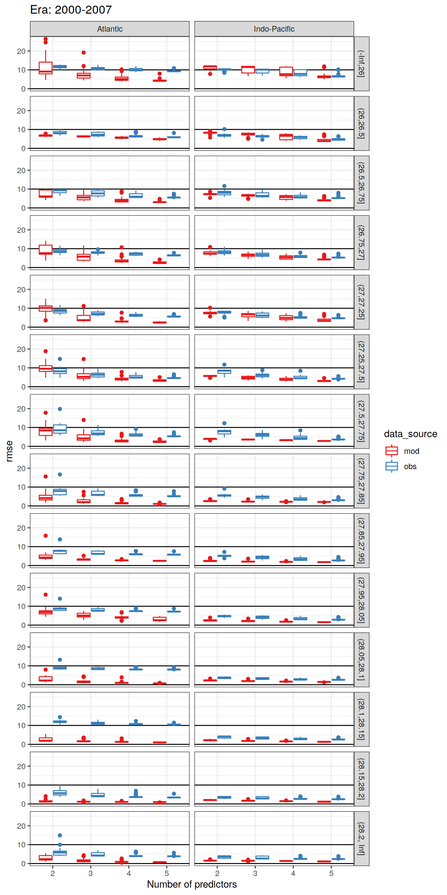
| Version | Author | Date |
|---|---|---|
| 969e631 | jens-daniel-mueller | 2021-05-12 |
| d2a83bc | jens-daniel-mueller | 2021-04-16 |
| c0a47df | jens-daniel-mueller | 2021-04-16 |
| 50290e8 | jens-daniel-mueller | 2021-04-16 |
| b6fe355 | jens-daniel-mueller | 2021-04-16 |
| 81b7c6d | jens-daniel-mueller | 2021-04-16 |
| ddec5b7 | jens-daniel-mueller | 2021-04-15 |
| 29edae5 | jens-daniel-mueller | 2021-04-14 |
| 099d566 | jens-daniel-mueller | 2021-04-14 |
| bb44686 | jens-daniel-mueller | 2021-04-14 |
| bf40480 | jens-daniel-mueller | 2021-04-13 |
| 9f31fe3 | jens-daniel-mueller | 2021-04-13 |
| 338dd3c | jens-daniel-mueller | 2021-04-09 |
| a79ca2c | jens-daniel-mueller | 2021-04-09 |
| d3c3fde | jens-daniel-mueller | 2021-03-26 |
| 594d503 | jens-daniel-mueller | 2021-03-26 |
| 2eb881a | jens-daniel-mueller | 2021-03-26 |
| 03b6009 | jens-daniel-mueller | 2021-03-23 |
| de6256b | jens-daniel-mueller | 2021-03-23 |
| f155edd | jens-daniel-mueller | 2021-03-23 |
| 33b385b | jens-daniel-mueller | 2021-03-20 |
| 108d6b2 | jens-daniel-mueller | 2021-03-20 |
| 83a13de | jens-daniel-mueller | 2021-03-20 |
| cf98c6d | jens-daniel-mueller | 2021-03-16 |
| a1d52ff | jens-daniel-mueller | 2021-03-15 |
| 0bade3b | jens-daniel-mueller | 2021-03-15 |
| 27c1f4b | jens-daniel-mueller | 2021-03-14 |
| af75ebf | jens-daniel-mueller | 2021-03-14 |
| 5017709 | jens-daniel-mueller | 2021-03-11 |
| 585b07f | jens-daniel-mueller | 2021-03-11 |
| 85a5ed2 | jens-daniel-mueller | 2021-03-10 |
| 6c0bec6 | jens-daniel-mueller | 2021-03-05 |
| 3c2ec33 | jens-daniel-mueller | 2021-03-05 |
| af70b94 | jens-daniel-mueller | 2021-03-04 |
| ac1a836 | jens-daniel-mueller | 2021-02-24 |
| b03fbd3 | jens-daniel-mueller | 2021-02-24 |
| 3d3b4cc | jens-daniel-mueller | 2021-02-23 |
| 7b672f7 | jens-daniel-mueller | 2021-01-11 |
| 33ba23c | jens-daniel-mueller | 2021-01-07 |
| 318609d | jens-daniel-mueller | 2020-12-23 |
| 9d0b2d0 | jens-daniel-mueller | 2020-12-23 |
| 0aa2b50 | jens-daniel-mueller | 2020-12-23 |
| 2886da0 | jens-daniel-mueller | 2020-12-19 |
| 02f0ee9 | jens-daniel-mueller | 2020-12-18 |
| 7bcb4eb | jens-daniel-mueller | 2020-12-18 |
| 7131186 | jens-daniel-mueller | 2020-12-17 |
| 5b48ef5 | jens-daniel-mueller | 2020-12-17 |
| f3a708f | jens-daniel-mueller | 2020-12-17 |
[[2]]
| Version | Author | Date |
|---|---|---|
| 969e631 | jens-daniel-mueller | 2021-05-12 |
| d2a83bc | jens-daniel-mueller | 2021-04-16 |
| c0a47df | jens-daniel-mueller | 2021-04-16 |
| 50290e8 | jens-daniel-mueller | 2021-04-16 |
| a00ec94 | jens-daniel-mueller | 2021-04-16 |
| b6fe355 | jens-daniel-mueller | 2021-04-16 |
| 81b7c6d | jens-daniel-mueller | 2021-04-16 |
| ddec5b7 | jens-daniel-mueller | 2021-04-15 |
| 29edae5 | jens-daniel-mueller | 2021-04-14 |
| 099d566 | jens-daniel-mueller | 2021-04-14 |
| bb44686 | jens-daniel-mueller | 2021-04-14 |
| bf40480 | jens-daniel-mueller | 2021-04-13 |
| 9f31fe3 | jens-daniel-mueller | 2021-04-13 |
| 338dd3c | jens-daniel-mueller | 2021-04-09 |
| a79ca2c | jens-daniel-mueller | 2021-04-09 |
| d3c3fde | jens-daniel-mueller | 2021-03-26 |
| 594d503 | jens-daniel-mueller | 2021-03-26 |
| 2eb881a | jens-daniel-mueller | 2021-03-26 |
7.1.2 Best models
left_join(lm_best_target %>% select(basin, gamma_slab, era, model),
GLODAP_glanced) %>%
group_split(era) %>%
imap(
~ ggplot(data = .x,
aes("",
!!sym(params_local$MLR_criterion),
col = data_source)) +
geom_hline(yintercept = c(0, 10)) +
geom_boxplot() +
facet_grid(gamma_slab ~ basin) +
scale_color_brewer(palette = "Set1") +
ylim(c(0, NA)) +
labs(x = "Number of predictors pooled",
title = paste("Era:", unique(.x$era)))
)[[1]]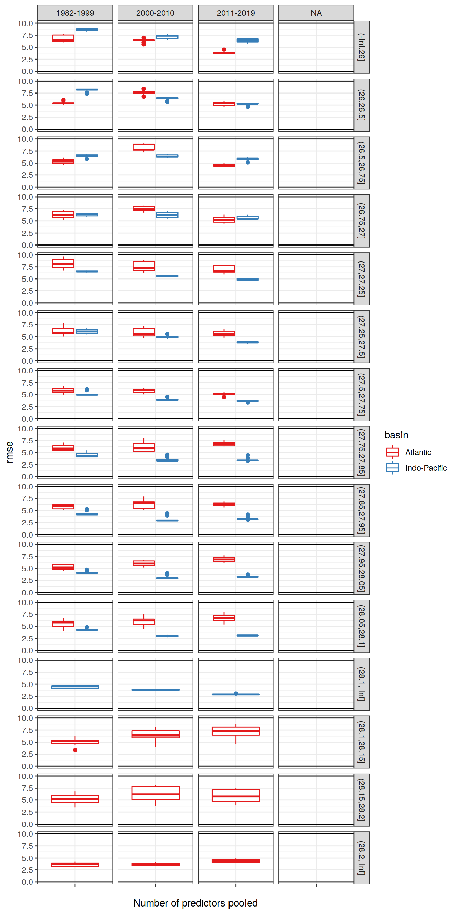
| Version | Author | Date |
|---|---|---|
| 969e631 | jens-daniel-mueller | 2021-05-12 |
| d2a83bc | jens-daniel-mueller | 2021-04-16 |
| c0a47df | jens-daniel-mueller | 2021-04-16 |
| 50290e8 | jens-daniel-mueller | 2021-04-16 |
| b6fe355 | jens-daniel-mueller | 2021-04-16 |
| 81b7c6d | jens-daniel-mueller | 2021-04-16 |
| ddec5b7 | jens-daniel-mueller | 2021-04-15 |
| 29edae5 | jens-daniel-mueller | 2021-04-14 |
| 099d566 | jens-daniel-mueller | 2021-04-14 |
| bb44686 | jens-daniel-mueller | 2021-04-14 |
| bf40480 | jens-daniel-mueller | 2021-04-13 |
| 9f31fe3 | jens-daniel-mueller | 2021-04-13 |
| 338dd3c | jens-daniel-mueller | 2021-04-09 |
| a79ca2c | jens-daniel-mueller | 2021-04-09 |
| d3c3fde | jens-daniel-mueller | 2021-03-26 |
| 594d503 | jens-daniel-mueller | 2021-03-26 |
| 06bfaf7 | jens-daniel-mueller | 2021-03-26 |
| 2eb881a | jens-daniel-mueller | 2021-03-26 |
| 03b6009 | jens-daniel-mueller | 2021-03-23 |
| de6256b | jens-daniel-mueller | 2021-03-23 |
| f155edd | jens-daniel-mueller | 2021-03-23 |
| 380d215 | jens-daniel-mueller | 2021-03-21 |
| 33b385b | jens-daniel-mueller | 2021-03-20 |
| 108d6b2 | jens-daniel-mueller | 2021-03-20 |
| 83a13de | jens-daniel-mueller | 2021-03-20 |
| cf98c6d | jens-daniel-mueller | 2021-03-16 |
| a1d52ff | jens-daniel-mueller | 2021-03-15 |
| 0bade3b | jens-daniel-mueller | 2021-03-15 |
| 27c1f4b | jens-daniel-mueller | 2021-03-14 |
| af75ebf | jens-daniel-mueller | 2021-03-14 |
| 5017709 | jens-daniel-mueller | 2021-03-11 |
| 585b07f | jens-daniel-mueller | 2021-03-11 |
| 85a5ed2 | jens-daniel-mueller | 2021-03-10 |
| 6c0bec6 | jens-daniel-mueller | 2021-03-05 |
| 3c2ec33 | jens-daniel-mueller | 2021-03-05 |
| af70b94 | jens-daniel-mueller | 2021-03-04 |
| ac1a836 | jens-daniel-mueller | 2021-02-24 |
| b03fbd3 | jens-daniel-mueller | 2021-02-24 |
| 3d3b4cc | jens-daniel-mueller | 2021-02-23 |
| 7b672f7 | jens-daniel-mueller | 2021-01-11 |
| 33ba23c | jens-daniel-mueller | 2021-01-07 |
| 318609d | jens-daniel-mueller | 2020-12-23 |
| 9d0b2d0 | jens-daniel-mueller | 2020-12-23 |
| 0aa2b50 | jens-daniel-mueller | 2020-12-23 |
| 2886da0 | jens-daniel-mueller | 2020-12-19 |
| 02f0ee9 | jens-daniel-mueller | 2020-12-18 |
| 7bcb4eb | jens-daniel-mueller | 2020-12-18 |
| 7131186 | jens-daniel-mueller | 2020-12-17 |
| 5b48ef5 | jens-daniel-mueller | 2020-12-17 |
| f3a708f | jens-daniel-mueller | 2020-12-17 |
[[2]]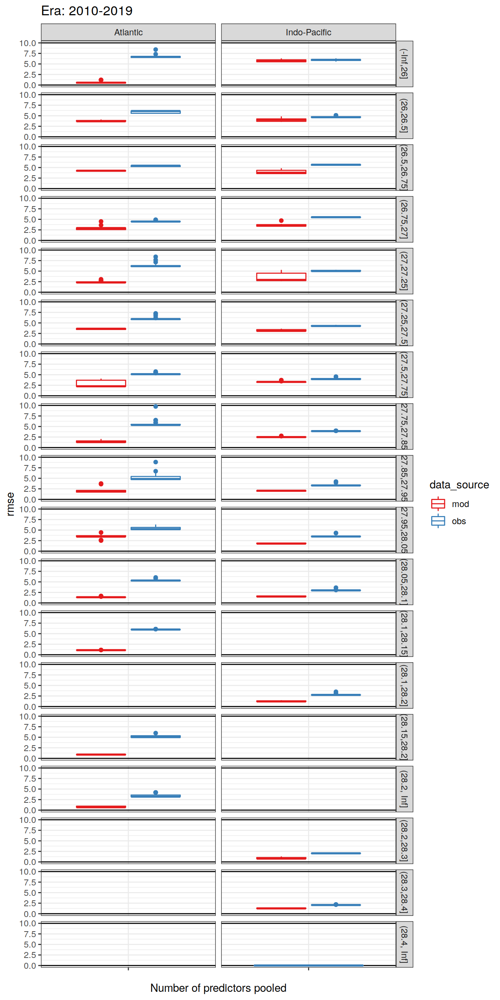
| Version | Author | Date |
|---|---|---|
| 969e631 | jens-daniel-mueller | 2021-05-12 |
| d2a83bc | jens-daniel-mueller | 2021-04-16 |
| c0a47df | jens-daniel-mueller | 2021-04-16 |
| 50290e8 | jens-daniel-mueller | 2021-04-16 |
| a00ec94 | jens-daniel-mueller | 2021-04-16 |
| b6fe355 | jens-daniel-mueller | 2021-04-16 |
| 81b7c6d | jens-daniel-mueller | 2021-04-16 |
| ddec5b7 | jens-daniel-mueller | 2021-04-15 |
| 29edae5 | jens-daniel-mueller | 2021-04-14 |
| 099d566 | jens-daniel-mueller | 2021-04-14 |
| bb44686 | jens-daniel-mueller | 2021-04-14 |
| bf40480 | jens-daniel-mueller | 2021-04-13 |
| 9f31fe3 | jens-daniel-mueller | 2021-04-13 |
| 338dd3c | jens-daniel-mueller | 2021-04-09 |
| a79ca2c | jens-daniel-mueller | 2021-04-09 |
| d3c3fde | jens-daniel-mueller | 2021-03-26 |
| 594d503 | jens-daniel-mueller | 2021-03-26 |
7.2 RMSE correlation between eras
RMSE was plotted to compare the agreement for one model applied to two adjecent eras (ie check whether the same predictor combination performs equal in both eras).
7.2.1 All models
# find max rmse to scale axis
max_rmse <-
max(c(lm_all_eras$rmse,
lm_all_eras$rmse_sum - lm_all_eras$rmse))
lm_all_eras %>%
ggplot(aes(rmse, rmse_sum - rmse, col = gamma_slab)) +
geom_point() +
scale_color_viridis_d() +
coord_equal(xlim = c(0, max_rmse),
ylim = c(0, max_rmse)) +
geom_abline(slope = 1,
col = 'red') +
facet_grid(data_source ~ basin)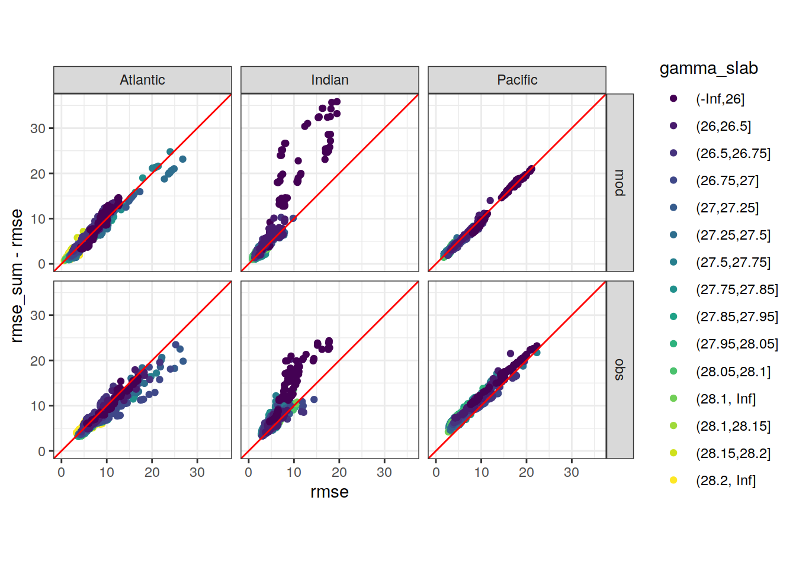
| Version | Author | Date |
|---|---|---|
| 969e631 | jens-daniel-mueller | 2021-05-12 |
| d2a83bc | jens-daniel-mueller | 2021-04-16 |
| c0a47df | jens-daniel-mueller | 2021-04-16 |
| 50290e8 | jens-daniel-mueller | 2021-04-16 |
| a00ec94 | jens-daniel-mueller | 2021-04-16 |
| b6fe355 | jens-daniel-mueller | 2021-04-16 |
| 81b7c6d | jens-daniel-mueller | 2021-04-16 |
| ddec5b7 | jens-daniel-mueller | 2021-04-15 |
| 29edae5 | jens-daniel-mueller | 2021-04-14 |
| 099d566 | jens-daniel-mueller | 2021-04-14 |
| bb44686 | jens-daniel-mueller | 2021-04-14 |
| bf40480 | jens-daniel-mueller | 2021-04-13 |
| 9f31fe3 | jens-daniel-mueller | 2021-04-13 |
| 338dd3c | jens-daniel-mueller | 2021-04-09 |
| a79ca2c | jens-daniel-mueller | 2021-04-09 |
| 594d503 | jens-daniel-mueller | 2021-03-26 |
| 06bfaf7 | jens-daniel-mueller | 2021-03-26 |
| 2eb881a | jens-daniel-mueller | 2021-03-26 |
| 03b6009 | jens-daniel-mueller | 2021-03-23 |
| de6256b | jens-daniel-mueller | 2021-03-23 |
| f155edd | jens-daniel-mueller | 2021-03-23 |
| 380d215 | jens-daniel-mueller | 2021-03-21 |
| 33b385b | jens-daniel-mueller | 2021-03-20 |
| 108d6b2 | jens-daniel-mueller | 2021-03-20 |
| 83a13de | jens-daniel-mueller | 2021-03-20 |
| cf98c6d | jens-daniel-mueller | 2021-03-16 |
| a1d52ff | jens-daniel-mueller | 2021-03-15 |
| 0bade3b | jens-daniel-mueller | 2021-03-15 |
| 27c1f4b | jens-daniel-mueller | 2021-03-14 |
| af75ebf | jens-daniel-mueller | 2021-03-14 |
| 5017709 | jens-daniel-mueller | 2021-03-11 |
| 585b07f | jens-daniel-mueller | 2021-03-11 |
| 85a5ed2 | jens-daniel-mueller | 2021-03-10 |
| 6c0bec6 | jens-daniel-mueller | 2021-03-05 |
| 3c2ec33 | jens-daniel-mueller | 2021-03-05 |
| af70b94 | jens-daniel-mueller | 2021-03-04 |
| ac1a836 | jens-daniel-mueller | 2021-02-24 |
| b03fbd3 | jens-daniel-mueller | 2021-02-24 |
| 3d3b4cc | jens-daniel-mueller | 2021-02-23 |
| 7b672f7 | jens-daniel-mueller | 2021-01-11 |
| 33ba23c | jens-daniel-mueller | 2021-01-07 |
| 318609d | jens-daniel-mueller | 2020-12-23 |
| 9d0b2d0 | jens-daniel-mueller | 2020-12-23 |
| 0aa2b50 | jens-daniel-mueller | 2020-12-23 |
| 2886da0 | jens-daniel-mueller | 2020-12-19 |
| 02f0ee9 | jens-daniel-mueller | 2020-12-18 |
| 7bcb4eb | jens-daniel-mueller | 2020-12-18 |
| 7131186 | jens-daniel-mueller | 2020-12-17 |
| 5b48ef5 | jens-daniel-mueller | 2020-12-17 |
| e4ca289 | jens-daniel-mueller | 2020-12-16 |
| 158fe26 | jens-daniel-mueller | 2020-12-15 |
| 7a9a4cb | jens-daniel-mueller | 2020-12-15 |
| 61b263c | jens-daniel-mueller | 2020-12-15 |
| 984697e | jens-daniel-mueller | 2020-12-12 |
| 3ebff89 | jens-daniel-mueller | 2020-12-12 |
| ba112d3 | jens-daniel-mueller | 2020-12-11 |
| 24a632f | jens-daniel-mueller | 2020-12-07 |
| 6a8004b | jens-daniel-mueller | 2020-12-07 |
| 70bf1a5 | jens-daniel-mueller | 2020-12-07 |
| 7555355 | jens-daniel-mueller | 2020-12-07 |
| 143d6fa | jens-daniel-mueller | 2020-12-07 |
| 090e4d5 | jens-daniel-mueller | 2020-12-02 |
| 7c25f7a | jens-daniel-mueller | 2020-12-02 |
| b03ddb8 | jens-daniel-mueller | 2020-12-02 |
| 91435ae | jens-daniel-mueller | 2020-12-01 |
| 196be51 | jens-daniel-mueller | 2020-11-30 |
rm(max_rmse)7.2.2 Best models
# find max rmse to scale axis
max_rmse <-
max(c(lm_best_eras$rmse,
lm_best_eras$rmse_sum - lm_best_eras$rmse))
lm_best_eras %>%
ggplot(aes(rmse, rmse_sum - rmse, col = gamma_slab)) +
geom_point() +
scale_color_viridis_d() +
coord_equal(xlim = c(0, max_rmse),
ylim = c(0, max_rmse)) +
geom_abline(slope = 1,
col = 'red') +
facet_grid(data_source ~ basin)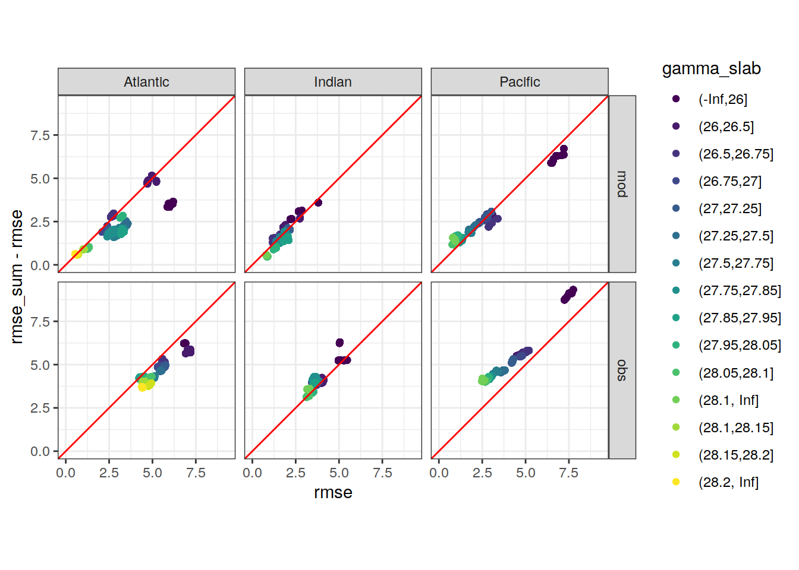
| Version | Author | Date |
|---|---|---|
| 969e631 | jens-daniel-mueller | 2021-05-12 |
| d2a83bc | jens-daniel-mueller | 2021-04-16 |
| c0a47df | jens-daniel-mueller | 2021-04-16 |
| 50290e8 | jens-daniel-mueller | 2021-04-16 |
| a00ec94 | jens-daniel-mueller | 2021-04-16 |
| b6fe355 | jens-daniel-mueller | 2021-04-16 |
| 81b7c6d | jens-daniel-mueller | 2021-04-16 |
| ddec5b7 | jens-daniel-mueller | 2021-04-15 |
| 29edae5 | jens-daniel-mueller | 2021-04-14 |
| 099d566 | jens-daniel-mueller | 2021-04-14 |
| bb44686 | jens-daniel-mueller | 2021-04-14 |
| bf40480 | jens-daniel-mueller | 2021-04-13 |
| 9f31fe3 | jens-daniel-mueller | 2021-04-13 |
| 338dd3c | jens-daniel-mueller | 2021-04-09 |
| a79ca2c | jens-daniel-mueller | 2021-04-09 |
| 594d503 | jens-daniel-mueller | 2021-03-26 |
| 06bfaf7 | jens-daniel-mueller | 2021-03-26 |
| 2eb881a | jens-daniel-mueller | 2021-03-26 |
| 03b6009 | jens-daniel-mueller | 2021-03-23 |
| de6256b | jens-daniel-mueller | 2021-03-23 |
| f155edd | jens-daniel-mueller | 2021-03-23 |
| 380d215 | jens-daniel-mueller | 2021-03-21 |
| 33b385b | jens-daniel-mueller | 2021-03-20 |
| 108d6b2 | jens-daniel-mueller | 2021-03-20 |
| 83a13de | jens-daniel-mueller | 2021-03-20 |
| cf98c6d | jens-daniel-mueller | 2021-03-16 |
| a1d52ff | jens-daniel-mueller | 2021-03-15 |
| 0bade3b | jens-daniel-mueller | 2021-03-15 |
| 27c1f4b | jens-daniel-mueller | 2021-03-14 |
| af75ebf | jens-daniel-mueller | 2021-03-14 |
| 5017709 | jens-daniel-mueller | 2021-03-11 |
| 585b07f | jens-daniel-mueller | 2021-03-11 |
| 85a5ed2 | jens-daniel-mueller | 2021-03-10 |
| 6c0bec6 | jens-daniel-mueller | 2021-03-05 |
| 3c2ec33 | jens-daniel-mueller | 2021-03-05 |
| af70b94 | jens-daniel-mueller | 2021-03-04 |
| ac1a836 | jens-daniel-mueller | 2021-02-24 |
| b03fbd3 | jens-daniel-mueller | 2021-02-24 |
| 3d3b4cc | jens-daniel-mueller | 2021-02-23 |
| 7b672f7 | jens-daniel-mueller | 2021-01-11 |
| 33ba23c | jens-daniel-mueller | 2021-01-07 |
| 318609d | jens-daniel-mueller | 2020-12-23 |
| 9d0b2d0 | jens-daniel-mueller | 2020-12-23 |
| 0aa2b50 | jens-daniel-mueller | 2020-12-23 |
| 2886da0 | jens-daniel-mueller | 2020-12-19 |
| 02f0ee9 | jens-daniel-mueller | 2020-12-18 |
| 7bcb4eb | jens-daniel-mueller | 2020-12-18 |
| 7131186 | jens-daniel-mueller | 2020-12-17 |
| a84ff3c | jens-daniel-mueller | 2020-12-17 |
rm(max_rmse)7.3 Predictor counts
The number of models where a particular predictor was included were counted for each basin, density slab and compared eras
# calculate cases of predictor used
lm_all_stats <- lm_best_cant %>%
pivot_longer(starts_with("delta_coeff_"),
names_to = "term",
names_prefix = "delta_coeff_",
values_to = "delta_coeff") %>%
filter(term != "(Intercept)",
delta_coeff != 0) %>%
group_by(data_source, basin, gamma_slab) %>%
count(term) %>%
ungroup() %>%
pivot_wider(values_from = n, names_from = term)
# print table
lm_all_stats %>%
gt(rowname_col = "gamma_slab",
groupname_col = c("basin", "data_source")) %>%
summary_rows(
groups = TRUE,
fns = list(total = "sum")
)| aou | nitrate | phosphate | phosphate_star | sal | silicate | temp | |
|---|---|---|---|---|---|---|---|
| Atlantic - mod | |||||||
| (-Inf,26] | 5 | 5 | 8 | 7 | 10 | 8 | 6 |
| (26,26.5] | 7 | 6 | 4 | 5 | 10 | 6 | 10 |
| (26.5,26.75] | 7 | 5 | 7 | 5 | 6 | 10 | 8 |
| (26.75,27] | 8 | 4 | 7 | 6 | 4 | 10 | 8 |
| (27,27.25] | 7 | 4 | 4 | 5 | 9 | 10 | 6 |
| (27.25,27.5] | 5 | 4 | 4 | 6 | 10 | 8 | 8 |
| (27.5,27.75] | 5 | 2 | 5 | 7 | 10 | 6 | 9 |
| (27.75,27.85] | 5 | 4 | 4 | 6 | 10 | 10 | 6 |
| (27.85,27.95] | 6 | 1 | 6 | 6 | 10 | 6 | 8 |
| (27.95,28.05] | 4 | 2 | 4 | 8 | 10 | 5 | 10 |
| (28.05,28.1] | 10 | 2 | 4 | 4 | 5 | 6 | 10 |
| (28.1,28.15] | 10 | 2 | 4 | 4 | 6 | 5 | 10 |
| (28.15,28.2] | 5 | 7 | 2 | 6 | 6 | 5 | 10 |
| (28.2, Inf] | 6 | 9 | 1 | 4 | 9 | 6 | 6 |
| total | 90.00 | 57.00 | 64.00 | 79.00 | 115.00 | 101.00 | 115.00 |
| Indo-Pacific - mod | |||||||
| (-Inf,26] | 9 | 6 | 6 | 6 | 10 | 4 | 7 |
| (26,26.5] | 7 | 6 | 7 | 6 | 6 | 7 | 10 |
| (26.5,26.75] | 6 | 5 | 6 | 6 | 6 | 9 | 10 |
| (26.75,27] | 5 | 10 | 5 | 7 | 5 | 5 | 10 |
| (27,27.25] | 6 | 10 | 5 | 7 | 4 | 5 | 10 |
| (27.25,27.5] | 4 | 10 | 5 | 9 | 5 | 6 | 8 |
| (27.5,27.75] | 4 | 5 | 6 | 7 | 10 | 10 | 5 |
| (27.75,27.85] | 6 | 6 | 3 | 8 | 10 | 5 | 9 |
| (27.85,27.95] | 4 | 2 | 3 | 6 | 10 | 7 | 10 |
| (27.95,28.05] | 4 | 3 | 2 | 7 | 10 | 6 | 10 |
| (28.05,28.1] | 3 | 2 | 3 | 9 | 6 | 9 | 10 |
| (28.1,28.2] | 5 | 3 | 4 | 4 | 10 | 10 | 9 |
| (28.2,28.3] | 5 | 3 | 4 | 7 | 10 | 10 | 6 |
| (28.3,28.4] | 7 | 10 | 6 | 6 | 5 | 2 | 6 |
| total | 75.00 | 81.00 | 65.00 | 95.00 | 107.00 | 95.00 | 120.00 |
| Atlantic - obs | |||||||
| (-Inf,26] | 7 | 10 | 6 | 6 | 4 | 4 | 10 |
| (26,26.5] | 8 | 8 | 7 | 5 | 5 | 4 | 10 |
| (26.5,26.75] | 7 | 4 | 6 | 7 | 6 | 7 | 10 |
| (26.75,27] | 4 | 4 | 4 | 9 | 5 | 10 | 10 |
| (27,27.25] | 5 | 8 | 5 | 9 | 5 | 6 | 10 |
| (27.25,27.5] | 6 | 4 | 7 | 7 | 9 | 4 | 10 |
| (27.5,27.75] | 8 | 3 | 7 | 5 | 4 | 10 | 8 |
| (27.75,27.85] | 7 | 2 | 7 | 6 | 5 | 10 | 7 |
| (27.85,27.95] | 5 | 4 | 7 | 6 | 10 | 10 | 5 |
| (27.95,28.05] | 6 | 4 | 6 | 7 | 10 | 10 | 4 |
| (28.05,28.1] | 5 | 5 | 3 | 10 | 10 | 5 | 7 |
| (28.1,28.15] | 3 | 2 | 3 | 10 | 8 | 6 | 10 |
| (28.15,28.2] | 7 | 1 | 7 | 6 | 6 | 6 | 10 |
| (28.2, Inf] | 6 | 4 | 7 | 7 | 10 | 4 | 9 |
| total | 84.00 | 63.00 | 82.00 | 100.00 | 97.00 | 96.00 | 120.00 |
| Indo-Pacific - obs | |||||||
| (-Inf,26] | 8 | 6 | 6 | 6 | 10 | 5 | 8 |
| (26,26.5] | 5 | 5 | 5 | 7 | 10 | 5 | 10 |
| (26.5,26.75] | 6 | 6 | 6 | 6 | 9 | 5 | 10 |
| (26.75,27] | 7 | 10 | 6 | 5 | 4 | 7 | 8 |
| (27,27.25] | 6 | 5 | 6 | 7 | 10 | 9 | 4 |
| (27.25,27.5] | 6 | 4 | 6 | 7 | 10 | 10 | 4 |
| (27.5,27.75] | 6 | 5 | 6 | 6 | 10 | 7 | 8 |
| (27.75,27.85] | 4 | 5 | 4 | 9 | 4 | 10 | 10 |
| (27.85,27.95] | 6 | 5 | 5 | 7 | 4 | 10 | 10 |
| (27.95,28.05] | 5 | 5 | 5 | 7 | 5 | 10 | 10 |
| (28.05,28.1] | 5 | 4 | 6 | 7 | 10 | 10 | 5 |
| (28.1,28.2] | 6 | 4 | 6 | 7 | 10 | 10 | 4 |
| (28.2,28.3] | 10 | 5 | 10 | 9 | 5 | 3 | 4 |
| (28.3,28.4] | 7 | 5 | 4 | 9 | 4 | 10 | 7 |
| total | 87.00 | 74.00 | 81.00 | 99.00 | 105.00 | 111.00 | 102.00 |
7.4 RMSE alternatives
7.4.1 AIC
AIC is an alternative criterion to RMSE to judge model quality, but not (yet) taken into account.
lm_all_eras %>%
ggplot(aes(rmse, AIC, col = gamma_slab)) +
geom_point() +
scale_color_viridis_d() +
facet_grid(data_source~basin)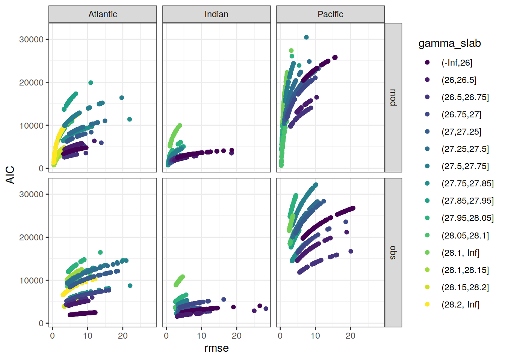
| Version | Author | Date |
|---|---|---|
| 969e631 | jens-daniel-mueller | 2021-05-12 |
| d2a83bc | jens-daniel-mueller | 2021-04-16 |
| c0a47df | jens-daniel-mueller | 2021-04-16 |
| 50290e8 | jens-daniel-mueller | 2021-04-16 |
| a00ec94 | jens-daniel-mueller | 2021-04-16 |
| b6fe355 | jens-daniel-mueller | 2021-04-16 |
| 81b7c6d | jens-daniel-mueller | 2021-04-16 |
| ddec5b7 | jens-daniel-mueller | 2021-04-15 |
| 29edae5 | jens-daniel-mueller | 2021-04-14 |
| 099d566 | jens-daniel-mueller | 2021-04-14 |
| bb44686 | jens-daniel-mueller | 2021-04-14 |
| bf40480 | jens-daniel-mueller | 2021-04-13 |
| 9f31fe3 | jens-daniel-mueller | 2021-04-13 |
| 338dd3c | jens-daniel-mueller | 2021-04-09 |
| a79ca2c | jens-daniel-mueller | 2021-04-09 |
| 594d503 | jens-daniel-mueller | 2021-03-26 |
| 06bfaf7 | jens-daniel-mueller | 2021-03-26 |
| 2eb881a | jens-daniel-mueller | 2021-03-26 |
| 03b6009 | jens-daniel-mueller | 2021-03-23 |
| de6256b | jens-daniel-mueller | 2021-03-23 |
| f155edd | jens-daniel-mueller | 2021-03-23 |
| 380d215 | jens-daniel-mueller | 2021-03-21 |
| 33b385b | jens-daniel-mueller | 2021-03-20 |
| 108d6b2 | jens-daniel-mueller | 2021-03-20 |
| 83a13de | jens-daniel-mueller | 2021-03-20 |
| cf98c6d | jens-daniel-mueller | 2021-03-16 |
| a1d52ff | jens-daniel-mueller | 2021-03-15 |
| 0bade3b | jens-daniel-mueller | 2021-03-15 |
| 27c1f4b | jens-daniel-mueller | 2021-03-14 |
| af75ebf | jens-daniel-mueller | 2021-03-14 |
| 5017709 | jens-daniel-mueller | 2021-03-11 |
| 585b07f | jens-daniel-mueller | 2021-03-11 |
| 85a5ed2 | jens-daniel-mueller | 2021-03-10 |
| 6c0bec6 | jens-daniel-mueller | 2021-03-05 |
| 3c2ec33 | jens-daniel-mueller | 2021-03-05 |
| af70b94 | jens-daniel-mueller | 2021-03-04 |
| ac1a836 | jens-daniel-mueller | 2021-02-24 |
| b03fbd3 | jens-daniel-mueller | 2021-02-24 |
| 3d3b4cc | jens-daniel-mueller | 2021-02-23 |
| 7b672f7 | jens-daniel-mueller | 2021-01-11 |
| 33ba23c | jens-daniel-mueller | 2021-01-07 |
| 318609d | jens-daniel-mueller | 2020-12-23 |
| 9d0b2d0 | jens-daniel-mueller | 2020-12-23 |
| 0aa2b50 | jens-daniel-mueller | 2020-12-23 |
| 2886da0 | jens-daniel-mueller | 2020-12-19 |
| 02f0ee9 | jens-daniel-mueller | 2020-12-18 |
| 7bcb4eb | jens-daniel-mueller | 2020-12-18 |
| 7131186 | jens-daniel-mueller | 2020-12-17 |
| 5b48ef5 | jens-daniel-mueller | 2020-12-17 |
lm_best_eras %>%
ggplot(aes(rmse, AIC, col = gamma_slab)) +
geom_point() +
scale_color_viridis_d() +
facet_grid(data_source~basin)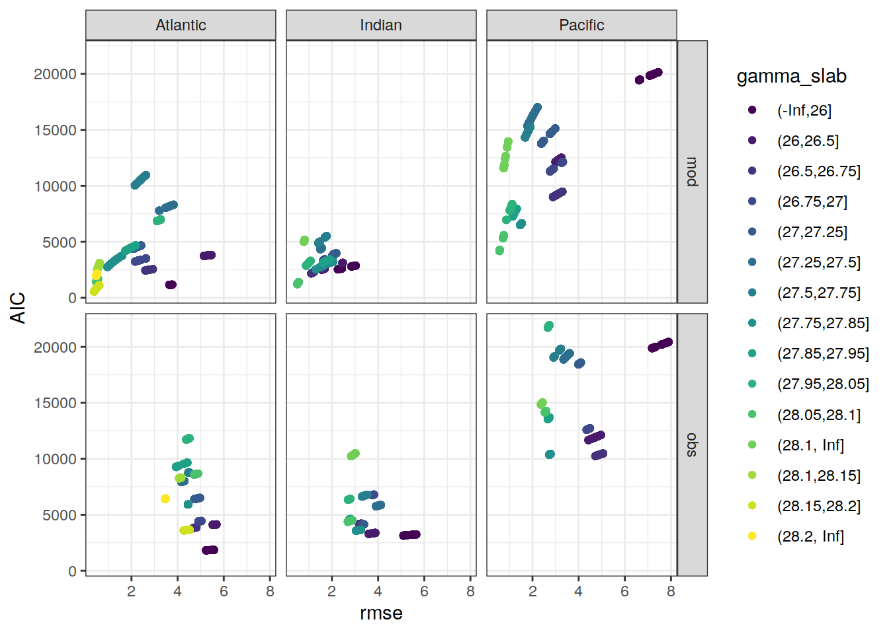
| Version | Author | Date |
|---|---|---|
| 969e631 | jens-daniel-mueller | 2021-05-12 |
| d2a83bc | jens-daniel-mueller | 2021-04-16 |
| c0a47df | jens-daniel-mueller | 2021-04-16 |
| 50290e8 | jens-daniel-mueller | 2021-04-16 |
| a00ec94 | jens-daniel-mueller | 2021-04-16 |
| b6fe355 | jens-daniel-mueller | 2021-04-16 |
| 81b7c6d | jens-daniel-mueller | 2021-04-16 |
| ddec5b7 | jens-daniel-mueller | 2021-04-15 |
| 29edae5 | jens-daniel-mueller | 2021-04-14 |
| 099d566 | jens-daniel-mueller | 2021-04-14 |
| bb44686 | jens-daniel-mueller | 2021-04-14 |
| bf40480 | jens-daniel-mueller | 2021-04-13 |
| 9f31fe3 | jens-daniel-mueller | 2021-04-13 |
| 338dd3c | jens-daniel-mueller | 2021-04-09 |
| a79ca2c | jens-daniel-mueller | 2021-04-09 |
| 594d503 | jens-daniel-mueller | 2021-03-26 |
| 06bfaf7 | jens-daniel-mueller | 2021-03-26 |
| 2eb881a | jens-daniel-mueller | 2021-03-26 |
| 03b6009 | jens-daniel-mueller | 2021-03-23 |
| de6256b | jens-daniel-mueller | 2021-03-23 |
| f155edd | jens-daniel-mueller | 2021-03-23 |
| 380d215 | jens-daniel-mueller | 2021-03-21 |
| 33b385b | jens-daniel-mueller | 2021-03-20 |
| 108d6b2 | jens-daniel-mueller | 2021-03-20 |
| 83a13de | jens-daniel-mueller | 2021-03-20 |
| cf98c6d | jens-daniel-mueller | 2021-03-16 |
| a1d52ff | jens-daniel-mueller | 2021-03-15 |
| 0bade3b | jens-daniel-mueller | 2021-03-15 |
| 27c1f4b | jens-daniel-mueller | 2021-03-14 |
| af75ebf | jens-daniel-mueller | 2021-03-14 |
| 5017709 | jens-daniel-mueller | 2021-03-11 |
| 585b07f | jens-daniel-mueller | 2021-03-11 |
| 85a5ed2 | jens-daniel-mueller | 2021-03-10 |
| 6c0bec6 | jens-daniel-mueller | 2021-03-05 |
| 3c2ec33 | jens-daniel-mueller | 2021-03-05 |
| af70b94 | jens-daniel-mueller | 2021-03-04 |
| ac1a836 | jens-daniel-mueller | 2021-02-24 |
| b03fbd3 | jens-daniel-mueller | 2021-02-24 |
| 3d3b4cc | jens-daniel-mueller | 2021-02-23 |
| 7b672f7 | jens-daniel-mueller | 2021-01-11 |
| 33ba23c | jens-daniel-mueller | 2021-01-07 |
| 318609d | jens-daniel-mueller | 2020-12-23 |
| 9d0b2d0 | jens-daniel-mueller | 2020-12-23 |
| 0aa2b50 | jens-daniel-mueller | 2020-12-23 |
| 2886da0 | jens-daniel-mueller | 2020-12-19 |
| 02f0ee9 | jens-daniel-mueller | 2020-12-18 |
| 7bcb4eb | jens-daniel-mueller | 2020-12-18 |
| 7131186 | jens-daniel-mueller | 2020-12-17 |
| 5b48ef5 | jens-daniel-mueller | 2020-12-17 |
7.4.2 AIC vs BIC
BIC is an alternative criterion to RMSE to judge model quality, but not (yet) taken into account.
lm_all_eras %>%
ggplot(aes(AIC, BIC, col = gamma_slab)) +
geom_point() +
scale_color_viridis_d() +
facet_grid(data_source~basin)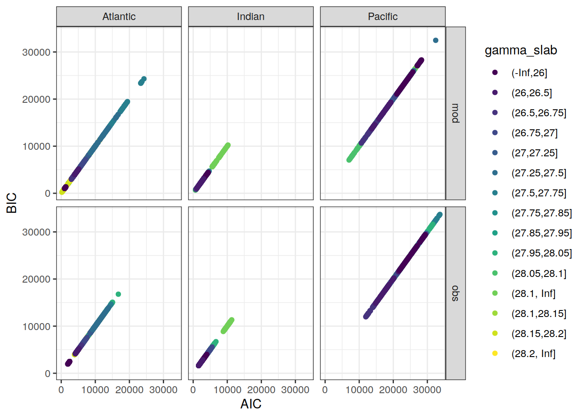
| Version | Author | Date |
|---|---|---|
| 969e631 | jens-daniel-mueller | 2021-05-12 |
| d2a83bc | jens-daniel-mueller | 2021-04-16 |
| c0a47df | jens-daniel-mueller | 2021-04-16 |
| 50290e8 | jens-daniel-mueller | 2021-04-16 |
| a00ec94 | jens-daniel-mueller | 2021-04-16 |
| b6fe355 | jens-daniel-mueller | 2021-04-16 |
| 81b7c6d | jens-daniel-mueller | 2021-04-16 |
| ddec5b7 | jens-daniel-mueller | 2021-04-15 |
| 29edae5 | jens-daniel-mueller | 2021-04-14 |
| 099d566 | jens-daniel-mueller | 2021-04-14 |
| bb44686 | jens-daniel-mueller | 2021-04-14 |
| bf40480 | jens-daniel-mueller | 2021-04-13 |
| 9f31fe3 | jens-daniel-mueller | 2021-04-13 |
| 338dd3c | jens-daniel-mueller | 2021-04-09 |
| a79ca2c | jens-daniel-mueller | 2021-04-09 |
| 594d503 | jens-daniel-mueller | 2021-03-26 |
| 06bfaf7 | jens-daniel-mueller | 2021-03-26 |
| 2eb881a | jens-daniel-mueller | 2021-03-26 |
| 03b6009 | jens-daniel-mueller | 2021-03-23 |
| de6256b | jens-daniel-mueller | 2021-03-23 |
| f155edd | jens-daniel-mueller | 2021-03-23 |
| 380d215 | jens-daniel-mueller | 2021-03-21 |
| 33b385b | jens-daniel-mueller | 2021-03-20 |
| 108d6b2 | jens-daniel-mueller | 2021-03-20 |
7.5 RMSE vs VIF
GLODAP_glanced %>%
ggplot(aes(rmse, log10(vif_max),col=data_source)) +
geom_hline(yintercept = 1) +
geom_point() +
scale_color_brewer(palette = "Set1") +
facet_grid(gamma_slab~basin)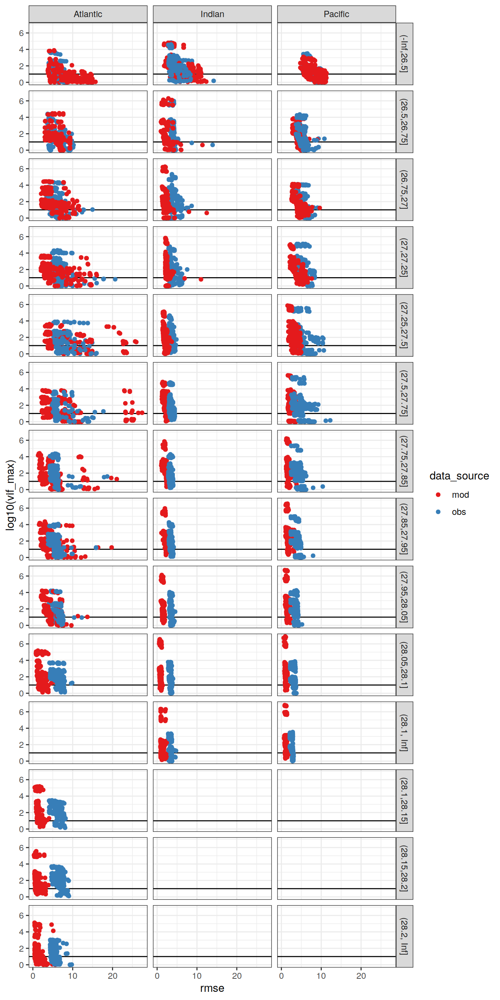
| Version | Author | Date |
|---|---|---|
| 969e631 | jens-daniel-mueller | 2021-05-12 |
| d2a83bc | jens-daniel-mueller | 2021-04-16 |
| c0a47df | jens-daniel-mueller | 2021-04-16 |
| 50290e8 | jens-daniel-mueller | 2021-04-16 |
| a00ec94 | jens-daniel-mueller | 2021-04-16 |
| b6fe355 | jens-daniel-mueller | 2021-04-16 |
| 81b7c6d | jens-daniel-mueller | 2021-04-16 |
| ddec5b7 | jens-daniel-mueller | 2021-04-15 |
| 29edae5 | jens-daniel-mueller | 2021-04-14 |
| 099d566 | jens-daniel-mueller | 2021-04-14 |
| bb44686 | jens-daniel-mueller | 2021-04-14 |
| bf40480 | jens-daniel-mueller | 2021-04-13 |
| 9f31fe3 | jens-daniel-mueller | 2021-04-13 |
| 338dd3c | jens-daniel-mueller | 2021-04-09 |
| a79ca2c | jens-daniel-mueller | 2021-04-09 |
| 594d503 | jens-daniel-mueller | 2021-03-26 |
| 2eb881a | jens-daniel-mueller | 2021-03-26 |
| 03b6009 | jens-daniel-mueller | 2021-03-23 |
| de6256b | jens-daniel-mueller | 2021-03-23 |
| 33b385b | jens-daniel-mueller | 2021-03-20 |
| 108d6b2 | jens-daniel-mueller | 2021-03-20 |
7.6 Residual patterns
7.6.1 Fitted vs actual models
Plotted are fitted vs actual target variable values, here: rparams_local$MLR_target`
GLODAP_augmented_best <- left_join(
lm_best_target %>% select(data_source, basin, gamma_slab, era, model),
GLODAP_augmented
)# calculate equal axis limits and binwidth
axis_lims <- GLODAP_augmented %>%
summarise(
max_value = max(
c(max(.fitted, max(!!sym(params_local$MLR_target))))
),
min_value = min(
c(min(.fitted, min(!!sym(params_local$MLR_target))))
)
)
i_binwidth <- 1
# binwidth_value <- (axis_lims$max_value - axis_lims$min_value) / 40
axis_lims <- c(axis_lims$min_value, axis_lims$max_value)
GLODAP_augmented %>%
ggplot(aes(cstar_tref, .fitted)) +
geom_bin2d(binwidth = i_binwidth) +
scale_fill_viridis_c() +
geom_abline(slope = 1,
col = 'red') +
coord_equal(xlim = axis_lims,
ylim = axis_lims) +
labs(title = "All models") +
facet_wrap(~data_source)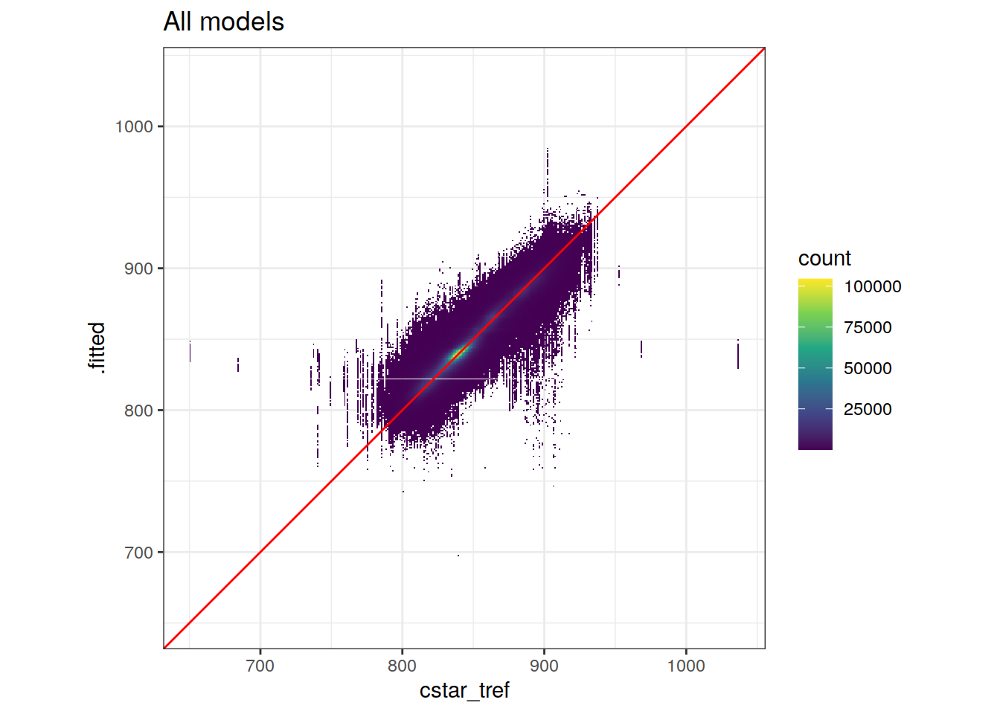
| Version | Author | Date |
|---|---|---|
| 969e631 | jens-daniel-mueller | 2021-05-12 |
| d2a83bc | jens-daniel-mueller | 2021-04-16 |
| c0a47df | jens-daniel-mueller | 2021-04-16 |
| 50290e8 | jens-daniel-mueller | 2021-04-16 |
| a00ec94 | jens-daniel-mueller | 2021-04-16 |
| b6fe355 | jens-daniel-mueller | 2021-04-16 |
| 81b7c6d | jens-daniel-mueller | 2021-04-16 |
| ddec5b7 | jens-daniel-mueller | 2021-04-15 |
| 29edae5 | jens-daniel-mueller | 2021-04-14 |
| 099d566 | jens-daniel-mueller | 2021-04-14 |
| bb44686 | jens-daniel-mueller | 2021-04-14 |
| bf40480 | jens-daniel-mueller | 2021-04-13 |
| 9f31fe3 | jens-daniel-mueller | 2021-04-13 |
| 338dd3c | jens-daniel-mueller | 2021-04-09 |
| a79ca2c | jens-daniel-mueller | 2021-04-09 |
| 594d503 | jens-daniel-mueller | 2021-03-26 |
| 2eb881a | jens-daniel-mueller | 2021-03-26 |
| 03b6009 | jens-daniel-mueller | 2021-03-23 |
| de6256b | jens-daniel-mueller | 2021-03-23 |
| 33b385b | jens-daniel-mueller | 2021-03-20 |
| 108d6b2 | jens-daniel-mueller | 2021-03-20 |
| 83a13de | jens-daniel-mueller | 2021-03-20 |
| cf98c6d | jens-daniel-mueller | 2021-03-16 |
| a1d52ff | jens-daniel-mueller | 2021-03-15 |
| 0bade3b | jens-daniel-mueller | 2021-03-15 |
| 27c1f4b | jens-daniel-mueller | 2021-03-14 |
| af75ebf | jens-daniel-mueller | 2021-03-14 |
| 5017709 | jens-daniel-mueller | 2021-03-11 |
| 585b07f | jens-daniel-mueller | 2021-03-11 |
| 85a5ed2 | jens-daniel-mueller | 2021-03-10 |
| 6c0bec6 | jens-daniel-mueller | 2021-03-05 |
| 3c2ec33 | jens-daniel-mueller | 2021-03-05 |
| af70b94 | jens-daniel-mueller | 2021-03-04 |
| 27ae473 | jens-daniel-mueller | 2021-02-24 |
| 4bc00ea | jens-daniel-mueller | 2021-02-24 |
GLODAP_augmented_best %>%
ggplot(aes(cstar_tref, .fitted)) +
geom_bin2d(binwidth = i_binwidth) +
scale_fill_viridis_c() +
geom_abline(slope = 1,
col = 'red') +
coord_equal(xlim = axis_lims,
ylim = axis_lims) +
labs(title = "Selected models") +
facet_wrap(~data_source)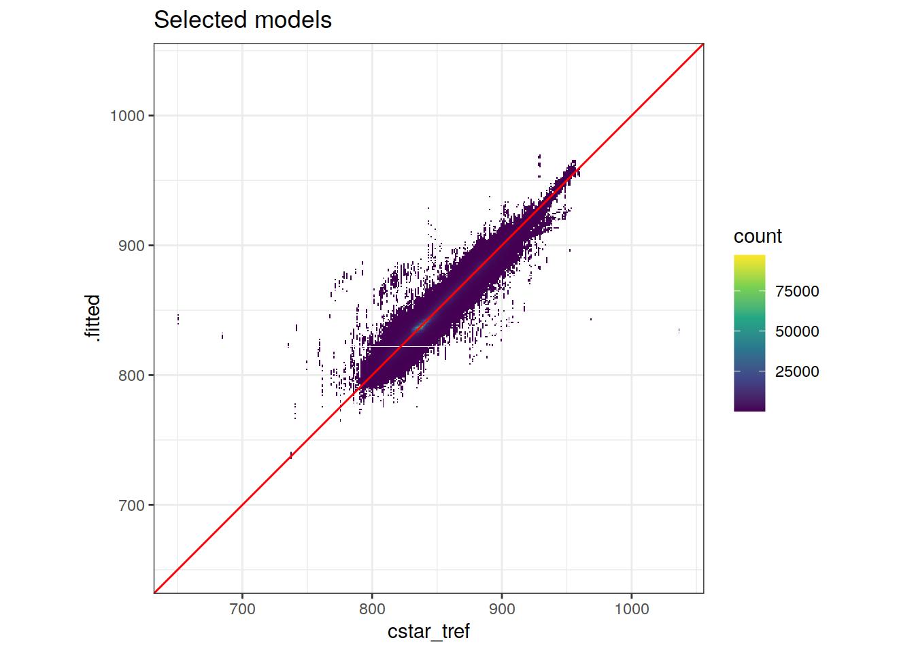
| Version | Author | Date |
|---|---|---|
| 969e631 | jens-daniel-mueller | 2021-05-12 |
| d2a83bc | jens-daniel-mueller | 2021-04-16 |
| c0a47df | jens-daniel-mueller | 2021-04-16 |
| 50290e8 | jens-daniel-mueller | 2021-04-16 |
| a00ec94 | jens-daniel-mueller | 2021-04-16 |
| b6fe355 | jens-daniel-mueller | 2021-04-16 |
| 81b7c6d | jens-daniel-mueller | 2021-04-16 |
| ddec5b7 | jens-daniel-mueller | 2021-04-15 |
| 29edae5 | jens-daniel-mueller | 2021-04-14 |
| 099d566 | jens-daniel-mueller | 2021-04-14 |
| bb44686 | jens-daniel-mueller | 2021-04-14 |
| bf40480 | jens-daniel-mueller | 2021-04-13 |
| 9f31fe3 | jens-daniel-mueller | 2021-04-13 |
| 338dd3c | jens-daniel-mueller | 2021-04-09 |
| a79ca2c | jens-daniel-mueller | 2021-04-09 |
| 594d503 | jens-daniel-mueller | 2021-03-26 |
| 06bfaf7 | jens-daniel-mueller | 2021-03-26 |
| 2eb881a | jens-daniel-mueller | 2021-03-26 |
| 03b6009 | jens-daniel-mueller | 2021-03-23 |
| de6256b | jens-daniel-mueller | 2021-03-23 |
| f155edd | jens-daniel-mueller | 2021-03-23 |
| 380d215 | jens-daniel-mueller | 2021-03-21 |
| 33b385b | jens-daniel-mueller | 2021-03-20 |
| 108d6b2 | jens-daniel-mueller | 2021-03-20 |
| 83a13de | jens-daniel-mueller | 2021-03-20 |
| cf98c6d | jens-daniel-mueller | 2021-03-16 |
| a1d52ff | jens-daniel-mueller | 2021-03-15 |
| 0bade3b | jens-daniel-mueller | 2021-03-15 |
| 27c1f4b | jens-daniel-mueller | 2021-03-14 |
| af75ebf | jens-daniel-mueller | 2021-03-14 |
| 5017709 | jens-daniel-mueller | 2021-03-11 |
| 585b07f | jens-daniel-mueller | 2021-03-11 |
| 85a5ed2 | jens-daniel-mueller | 2021-03-10 |
| 6c0bec6 | jens-daniel-mueller | 2021-03-05 |
| 3c2ec33 | jens-daniel-mueller | 2021-03-05 |
| af70b94 | jens-daniel-mueller | 2021-03-04 |
| 27ae473 | jens-daniel-mueller | 2021-02-24 |
| 4bc00ea | jens-daniel-mueller | 2021-02-24 |
rm(binwidth_value, axis_lims)7.6.2 Pooled
In the following, we present residual patterns vs latitude across all domains.
i_ylim <- c(-30,30)
GLODAP_augmented_best %>%
ggplot(aes(lat, .resid)) +
geom_bin2d(binwidth = i_binwidth) +
geom_hline(yintercept = 0, col = "white") +
scale_fill_viridis_c() +
labs(
title = paste(
"Target variable:",
params_local$MLR_target,
"| Selected models",
"| All domains"
)
) +
facet_wrap(~data_source)
| Version | Author | Date |
|---|---|---|
| 969e631 | jens-daniel-mueller | 2021-05-12 |
| d2a83bc | jens-daniel-mueller | 2021-04-16 |
| c0a47df | jens-daniel-mueller | 2021-04-16 |
| 50290e8 | jens-daniel-mueller | 2021-04-16 |
| a00ec94 | jens-daniel-mueller | 2021-04-16 |
| b6fe355 | jens-daniel-mueller | 2021-04-16 |
| 81b7c6d | jens-daniel-mueller | 2021-04-16 |
| ddec5b7 | jens-daniel-mueller | 2021-04-15 |
| 29edae5 | jens-daniel-mueller | 2021-04-14 |
| 099d566 | jens-daniel-mueller | 2021-04-14 |
| bb44686 | jens-daniel-mueller | 2021-04-14 |
| bf40480 | jens-daniel-mueller | 2021-04-13 |
| 9f31fe3 | jens-daniel-mueller | 2021-04-13 |
| 338dd3c | jens-daniel-mueller | 2021-04-09 |
| a79ca2c | jens-daniel-mueller | 2021-04-09 |
| 594d503 | jens-daniel-mueller | 2021-03-26 |
| 06bfaf7 | jens-daniel-mueller | 2021-03-26 |
| 2eb881a | jens-daniel-mueller | 2021-03-26 |
| 03b6009 | jens-daniel-mueller | 2021-03-23 |
| de6256b | jens-daniel-mueller | 2021-03-23 |
| f155edd | jens-daniel-mueller | 2021-03-23 |
| 380d215 | jens-daniel-mueller | 2021-03-21 |
| 33b385b | jens-daniel-mueller | 2021-03-20 |
| 108d6b2 | jens-daniel-mueller | 2021-03-20 |
| 83a13de | jens-daniel-mueller | 2021-03-20 |
| cf98c6d | jens-daniel-mueller | 2021-03-16 |
| a1d52ff | jens-daniel-mueller | 2021-03-15 |
| 0bade3b | jens-daniel-mueller | 2021-03-15 |
| 27c1f4b | jens-daniel-mueller | 2021-03-14 |
| af75ebf | jens-daniel-mueller | 2021-03-14 |
| 5017709 | jens-daniel-mueller | 2021-03-11 |
| 585b07f | jens-daniel-mueller | 2021-03-11 |
| 85a5ed2 | jens-daniel-mueller | 2021-03-10 |
| 6c0bec6 | jens-daniel-mueller | 2021-03-05 |
| 3c2ec33 | jens-daniel-mueller | 2021-03-05 |
| af70b94 | jens-daniel-mueller | 2021-03-04 |
| 27ae473 | jens-daniel-mueller | 2021-02-24 |
| 4bc00ea | jens-daniel-mueller | 2021-02-24 |
Due to the few large residuals, we limit the y axis range for the plots below.
GLODAP_augmented_best %>%
ggplot(aes(lat, .resid)) +
geom_bin2d(binwidth = i_binwidth) +
geom_hline(yintercept = 0, col = "white") +
scale_fill_viridis_c() +
coord_cartesian(ylim = i_ylim) +
labs(
title = paste(
"Target variable:",
params_local$MLR_target,
"| Selected models",
"| All domains"
)
) +
facet_wrap(~data_source)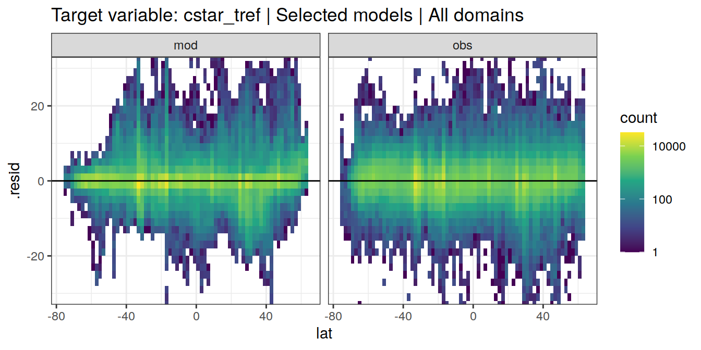
| Version | Author | Date |
|---|---|---|
| 969e631 | jens-daniel-mueller | 2021-05-12 |
| d2a83bc | jens-daniel-mueller | 2021-04-16 |
| c0a47df | jens-daniel-mueller | 2021-04-16 |
| 50290e8 | jens-daniel-mueller | 2021-04-16 |
| a00ec94 | jens-daniel-mueller | 2021-04-16 |
| b6fe355 | jens-daniel-mueller | 2021-04-16 |
| 81b7c6d | jens-daniel-mueller | 2021-04-16 |
| ddec5b7 | jens-daniel-mueller | 2021-04-15 |
| 29edae5 | jens-daniel-mueller | 2021-04-14 |
| 099d566 | jens-daniel-mueller | 2021-04-14 |
| bb44686 | jens-daniel-mueller | 2021-04-14 |
| bf40480 | jens-daniel-mueller | 2021-04-13 |
| 9f31fe3 | jens-daniel-mueller | 2021-04-13 |
| 338dd3c | jens-daniel-mueller | 2021-04-09 |
| a79ca2c | jens-daniel-mueller | 2021-04-09 |
| d3c3fde | jens-daniel-mueller | 2021-03-26 |
| 594d503 | jens-daniel-mueller | 2021-03-26 |
| 06bfaf7 | jens-daniel-mueller | 2021-03-26 |
| 2eb881a | jens-daniel-mueller | 2021-03-26 |
| 03b6009 | jens-daniel-mueller | 2021-03-23 |
| de6256b | jens-daniel-mueller | 2021-03-23 |
| f155edd | jens-daniel-mueller | 2021-03-23 |
| 380d215 | jens-daniel-mueller | 2021-03-21 |
| 33b385b | jens-daniel-mueller | 2021-03-20 |
| 108d6b2 | jens-daniel-mueller | 2021-03-20 |
| 83a13de | jens-daniel-mueller | 2021-03-20 |
| cf98c6d | jens-daniel-mueller | 2021-03-16 |
| a1d52ff | jens-daniel-mueller | 2021-03-15 |
| 0bade3b | jens-daniel-mueller | 2021-03-15 |
| 27c1f4b | jens-daniel-mueller | 2021-03-14 |
| af75ebf | jens-daniel-mueller | 2021-03-14 |
| 5017709 | jens-daniel-mueller | 2021-03-11 |
| 585b07f | jens-daniel-mueller | 2021-03-11 |
| 85a5ed2 | jens-daniel-mueller | 2021-03-10 |
| 6c0bec6 | jens-daniel-mueller | 2021-03-05 |
| 3c2ec33 | jens-daniel-mueller | 2021-03-05 |
| af70b94 | jens-daniel-mueller | 2021-03-04 |
| 27ae473 | jens-daniel-mueller | 2021-02-24 |
| 4bc00ea | jens-daniel-mueller | 2021-02-24 |
7.6.3 By model domain
In the following, we present residual patterns vs latitude for separate model domains, ie basins, density slabs and eras.
GLODAP_augmented_best %>%
group_split(basin, era) %>%
map(~ ggplot(data = .x, aes(lat, .resid)) +
geom_bin2d(binwidth = i_binwidth) +
geom_hline(yintercept = 0, col = "black") +
scale_fill_viridis_c() +
facet_grid(gamma_slab ~ data_source) +
coord_cartesian(ylim = i_ylim) +
labs(
title = paste(
"Target:",
params_local$MLR_target,
"| best models | basin:",
unique(.x$basin),
"| era:",
unique(.x$era)
)
))[[1]]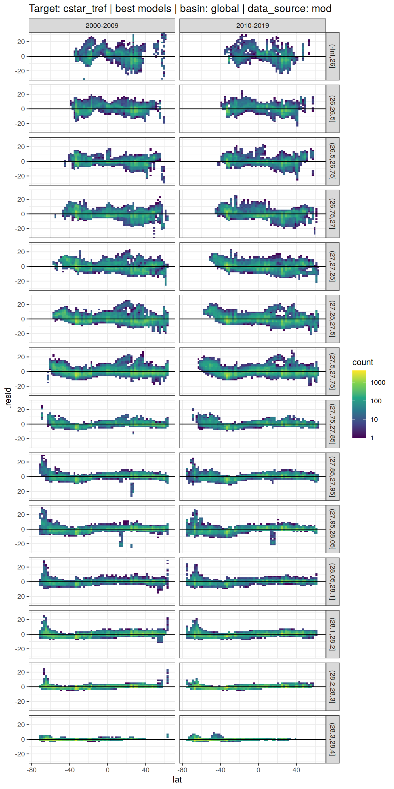
| Version | Author | Date |
|---|---|---|
| d2a83bc | jens-daniel-mueller | 2021-04-16 |
| c0a47df | jens-daniel-mueller | 2021-04-16 |
| 50290e8 | jens-daniel-mueller | 2021-04-16 |
| b6fe355 | jens-daniel-mueller | 2021-04-16 |
| 81b7c6d | jens-daniel-mueller | 2021-04-16 |
| ddec5b7 | jens-daniel-mueller | 2021-04-15 |
| 29edae5 | jens-daniel-mueller | 2021-04-14 |
| 099d566 | jens-daniel-mueller | 2021-04-14 |
| bb44686 | jens-daniel-mueller | 2021-04-14 |
| bf40480 | jens-daniel-mueller | 2021-04-13 |
| 9f31fe3 | jens-daniel-mueller | 2021-04-13 |
| 338dd3c | jens-daniel-mueller | 2021-04-09 |
| a79ca2c | jens-daniel-mueller | 2021-04-09 |
| d3c3fde | jens-daniel-mueller | 2021-03-26 |
| 594d503 | jens-daniel-mueller | 2021-03-26 |
| 06bfaf7 | jens-daniel-mueller | 2021-03-26 |
| 2eb881a | jens-daniel-mueller | 2021-03-26 |
| 03b6009 | jens-daniel-mueller | 2021-03-23 |
| de6256b | jens-daniel-mueller | 2021-03-23 |
| f155edd | jens-daniel-mueller | 2021-03-23 |
| 380d215 | jens-daniel-mueller | 2021-03-21 |
| 33b385b | jens-daniel-mueller | 2021-03-20 |
| 108d6b2 | jens-daniel-mueller | 2021-03-20 |
| 83a13de | jens-daniel-mueller | 2021-03-20 |
| cf98c6d | jens-daniel-mueller | 2021-03-16 |
| a1d52ff | jens-daniel-mueller | 2021-03-15 |
| 0bade3b | jens-daniel-mueller | 2021-03-15 |
| 27c1f4b | jens-daniel-mueller | 2021-03-14 |
| af75ebf | jens-daniel-mueller | 2021-03-14 |
| 5017709 | jens-daniel-mueller | 2021-03-11 |
| 585b07f | jens-daniel-mueller | 2021-03-11 |
| 85a5ed2 | jens-daniel-mueller | 2021-03-10 |
| 6c0bec6 | jens-daniel-mueller | 2021-03-05 |
| 3c2ec33 | jens-daniel-mueller | 2021-03-05 |
| af70b94 | jens-daniel-mueller | 2021-03-04 |
| 27ae473 | jens-daniel-mueller | 2021-02-24 |
| a1ba577 | jens-daniel-mueller | 2021-02-24 |
| 071743d | jens-daniel-mueller | 2021-02-24 |
[[2]]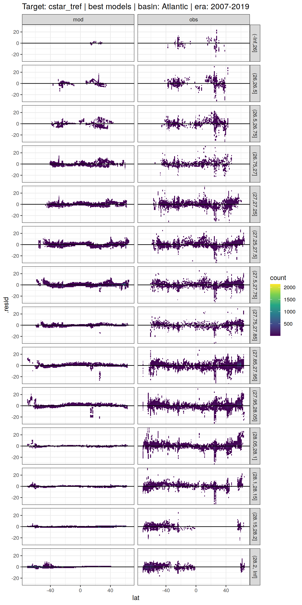
| Version | Author | Date |
|---|---|---|
| d2a83bc | jens-daniel-mueller | 2021-04-16 |
| c0a47df | jens-daniel-mueller | 2021-04-16 |
| 50290e8 | jens-daniel-mueller | 2021-04-16 |
| a00ec94 | jens-daniel-mueller | 2021-04-16 |
| b6fe355 | jens-daniel-mueller | 2021-04-16 |
| 81b7c6d | jens-daniel-mueller | 2021-04-16 |
| ddec5b7 | jens-daniel-mueller | 2021-04-15 |
| 29edae5 | jens-daniel-mueller | 2021-04-14 |
| 099d566 | jens-daniel-mueller | 2021-04-14 |
| bb44686 | jens-daniel-mueller | 2021-04-14 |
| bf40480 | jens-daniel-mueller | 2021-04-13 |
| 9f31fe3 | jens-daniel-mueller | 2021-04-13 |
| 338dd3c | jens-daniel-mueller | 2021-04-09 |
| a79ca2c | jens-daniel-mueller | 2021-04-09 |
| d3c3fde | jens-daniel-mueller | 2021-03-26 |
| 594d503 | jens-daniel-mueller | 2021-03-26 |
| 06bfaf7 | jens-daniel-mueller | 2021-03-26 |
| 2eb881a | jens-daniel-mueller | 2021-03-26 |
| 03b6009 | jens-daniel-mueller | 2021-03-23 |
| de6256b | jens-daniel-mueller | 2021-03-23 |
| f155edd | jens-daniel-mueller | 2021-03-23 |
| 380d215 | jens-daniel-mueller | 2021-03-21 |
| 33b385b | jens-daniel-mueller | 2021-03-20 |
| 108d6b2 | jens-daniel-mueller | 2021-03-20 |
| 83a13de | jens-daniel-mueller | 2021-03-20 |
| cf98c6d | jens-daniel-mueller | 2021-03-16 |
| a1d52ff | jens-daniel-mueller | 2021-03-15 |
| 0bade3b | jens-daniel-mueller | 2021-03-15 |
| 27c1f4b | jens-daniel-mueller | 2021-03-14 |
| af75ebf | jens-daniel-mueller | 2021-03-14 |
| 5017709 | jens-daniel-mueller | 2021-03-11 |
| 585b07f | jens-daniel-mueller | 2021-03-11 |
| 85a5ed2 | jens-daniel-mueller | 2021-03-10 |
| 6c0bec6 | jens-daniel-mueller | 2021-03-05 |
| af70b94 | jens-daniel-mueller | 2021-03-04 |
| 27ae473 | jens-daniel-mueller | 2021-02-24 |
| a1ba577 | jens-daniel-mueller | 2021-02-24 |
[[3]]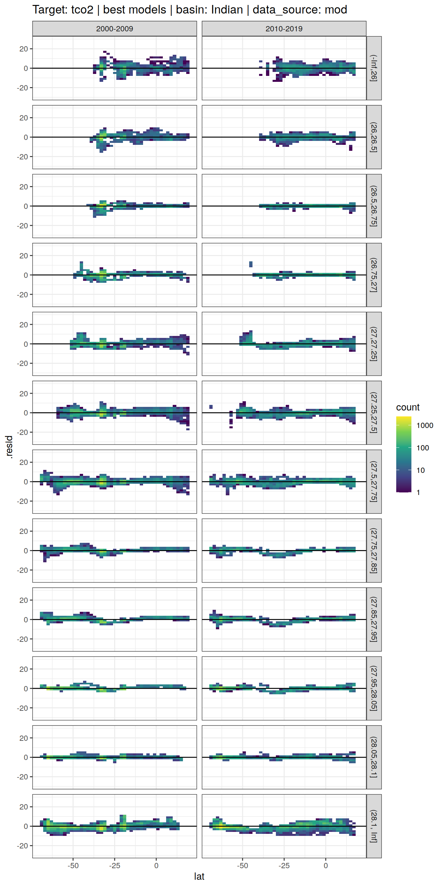
| Version | Author | Date |
|---|---|---|
| 969e631 | jens-daniel-mueller | 2021-05-12 |
| d2a83bc | jens-daniel-mueller | 2021-04-16 |
| c0a47df | jens-daniel-mueller | 2021-04-16 |
| 50290e8 | jens-daniel-mueller | 2021-04-16 |
| b6fe355 | jens-daniel-mueller | 2021-04-16 |
| 81b7c6d | jens-daniel-mueller | 2021-04-16 |
| ddec5b7 | jens-daniel-mueller | 2021-04-15 |
| 29edae5 | jens-daniel-mueller | 2021-04-14 |
| 099d566 | jens-daniel-mueller | 2021-04-14 |
| bb44686 | jens-daniel-mueller | 2021-04-14 |
| bf40480 | jens-daniel-mueller | 2021-04-13 |
| 9f31fe3 | jens-daniel-mueller | 2021-04-13 |
| 338dd3c | jens-daniel-mueller | 2021-04-09 |
| a79ca2c | jens-daniel-mueller | 2021-04-09 |
| d3c3fde | jens-daniel-mueller | 2021-03-26 |
| 594d503 | jens-daniel-mueller | 2021-03-26 |
[[4]]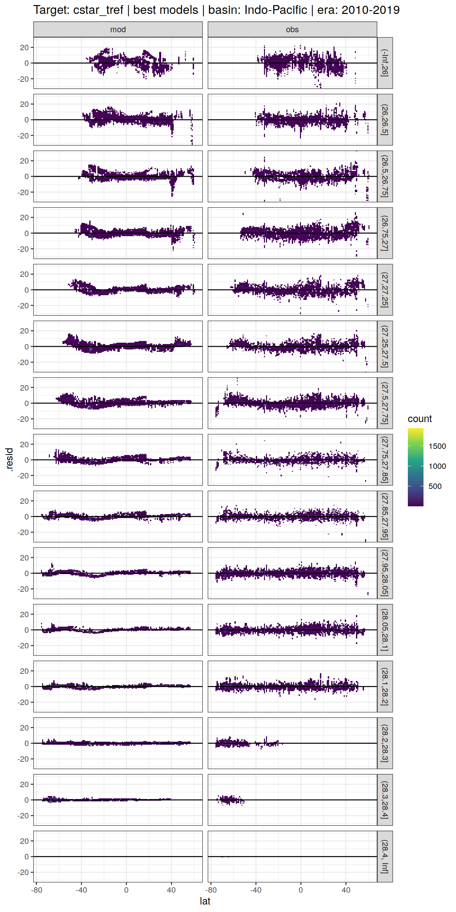
| Version | Author | Date |
|---|---|---|
| 969e631 | jens-daniel-mueller | 2021-05-12 |
| d2a83bc | jens-daniel-mueller | 2021-04-16 |
| c0a47df | jens-daniel-mueller | 2021-04-16 |
| 50290e8 | jens-daniel-mueller | 2021-04-16 |
| a00ec94 | jens-daniel-mueller | 2021-04-16 |
| b6fe355 | jens-daniel-mueller | 2021-04-16 |
| 81b7c6d | jens-daniel-mueller | 2021-04-16 |
| ddec5b7 | jens-daniel-mueller | 2021-04-15 |
| 29edae5 | jens-daniel-mueller | 2021-04-14 |
| 099d566 | jens-daniel-mueller | 2021-04-14 |
| bb44686 | jens-daniel-mueller | 2021-04-14 |
| bf40480 | jens-daniel-mueller | 2021-04-13 |
| 9f31fe3 | jens-daniel-mueller | 2021-04-13 |
| 338dd3c | jens-daniel-mueller | 2021-04-09 |
| a79ca2c | jens-daniel-mueller | 2021-04-09 |
| d3c3fde | jens-daniel-mueller | 2021-03-26 |
| 594d503 | jens-daniel-mueller | 2021-03-26 |
7.6.4 Latitudinal mean
GLODAP_augmented_best <- GLODAP_augmented_best %>%
mutate(lat_grid = as.numeric(as.character(cut(
lat,
seq(-90, 90, 10),
seq(-85, 85, 10)
))))
lat_residual <- GLODAP_augmented_best %>%
group_by(data_source, basin, gamma_slab, era, lat_grid) %>%
summarise(.resid_mean = mean(.resid)) %>%
ungroup()
lat_residual %>%
group_split(basin) %>%
map(
~ggplot(data = .x,
aes(lat_grid, .resid_mean, col=era)) +
geom_line() +
geom_point() +
geom_hline(yintercept = 0, col = "black") +
facet_grid(gamma_slab ~ data_source) +
labs(title = paste("Basin:", unique(.x$basin)))
)[[1]]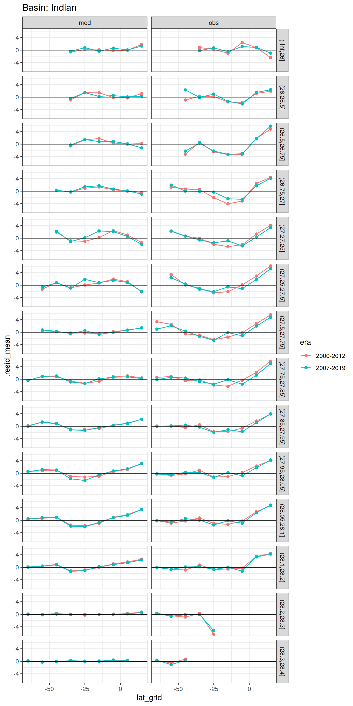
| Version | Author | Date |
|---|---|---|
| d2a83bc | jens-daniel-mueller | 2021-04-16 |
| c0a47df | jens-daniel-mueller | 2021-04-16 |
| 50290e8 | jens-daniel-mueller | 2021-04-16 |
| a00ec94 | jens-daniel-mueller | 2021-04-16 |
| b6fe355 | jens-daniel-mueller | 2021-04-16 |
| 81b7c6d | jens-daniel-mueller | 2021-04-16 |
| ddec5b7 | jens-daniel-mueller | 2021-04-15 |
| 29edae5 | jens-daniel-mueller | 2021-04-14 |
| 099d566 | jens-daniel-mueller | 2021-04-14 |
| bb44686 | jens-daniel-mueller | 2021-04-14 |
| bf40480 | jens-daniel-mueller | 2021-04-13 |
| 9f31fe3 | jens-daniel-mueller | 2021-04-13 |
| 338dd3c | jens-daniel-mueller | 2021-04-09 |
| a79ca2c | jens-daniel-mueller | 2021-04-09 |
| 594d503 | jens-daniel-mueller | 2021-03-26 |
| 06bfaf7 | jens-daniel-mueller | 2021-03-26 |
| 2eb881a | jens-daniel-mueller | 2021-03-26 |
| 03b6009 | jens-daniel-mueller | 2021-03-23 |
| de6256b | jens-daniel-mueller | 2021-03-23 |
| f155edd | jens-daniel-mueller | 2021-03-23 |
| 380d215 | jens-daniel-mueller | 2021-03-21 |
| 33b385b | jens-daniel-mueller | 2021-03-20 |
| 108d6b2 | jens-daniel-mueller | 2021-03-20 |
| 83a13de | jens-daniel-mueller | 2021-03-20 |
| cf98c6d | jens-daniel-mueller | 2021-03-16 |
| a1d52ff | jens-daniel-mueller | 2021-03-15 |
| 0bade3b | jens-daniel-mueller | 2021-03-15 |
| 27c1f4b | jens-daniel-mueller | 2021-03-14 |
| af75ebf | jens-daniel-mueller | 2021-03-14 |
| 5017709 | jens-daniel-mueller | 2021-03-11 |
| 585b07f | jens-daniel-mueller | 2021-03-11 |
| 85a5ed2 | jens-daniel-mueller | 2021-03-10 |
| 6c0bec6 | jens-daniel-mueller | 2021-03-05 |
| 3c2ec33 | jens-daniel-mueller | 2021-03-05 |
| af70b94 | jens-daniel-mueller | 2021-03-04 |
| fec3558 | jens-daniel-mueller | 2021-02-24 |
[[2]]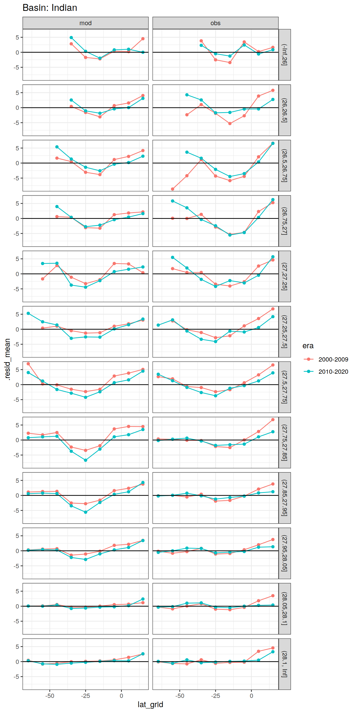
| Version | Author | Date |
|---|---|---|
| 969e631 | jens-daniel-mueller | 2021-05-12 |
| d2a83bc | jens-daniel-mueller | 2021-04-16 |
| c0a47df | jens-daniel-mueller | 2021-04-16 |
| 50290e8 | jens-daniel-mueller | 2021-04-16 |
| a00ec94 | jens-daniel-mueller | 2021-04-16 |
| b6fe355 | jens-daniel-mueller | 2021-04-16 |
| 81b7c6d | jens-daniel-mueller | 2021-04-16 |
| ddec5b7 | jens-daniel-mueller | 2021-04-15 |
| 29edae5 | jens-daniel-mueller | 2021-04-14 |
| 099d566 | jens-daniel-mueller | 2021-04-14 |
| bb44686 | jens-daniel-mueller | 2021-04-14 |
| bf40480 | jens-daniel-mueller | 2021-04-13 |
| 9f31fe3 | jens-daniel-mueller | 2021-04-13 |
| 338dd3c | jens-daniel-mueller | 2021-04-09 |
| a79ca2c | jens-daniel-mueller | 2021-04-09 |
| 594d503 | jens-daniel-mueller | 2021-03-26 |
7.6.5 Latitudinal offset
# calculate residual offset for adjacent eras
lat_residual_offset <- lat_residual %>%
select(data_source, basin, gamma_slab, era, lat_grid, .resid_mean) %>%
arrange(era) %>%
group_by(basin, gamma_slab, lat_grid) %>%
mutate(eras = paste(lag(era), era, sep = " --> "),
.resid_mean_offset = .resid_mean - lag(.resid_mean)
) %>%
ungroup() %>%
select(-era) %>%
drop_na() %>%
filter(eras != paste(unique(lat_residual$era)[1],
unique(lat_residual$era)[3],
sep = " --> "))
lat_residual_offset %>%
ggplot(aes(lat_grid, .resid_mean_offset, col=eras)) +
geom_line() +
geom_point() +
geom_hline(yintercept = 0, col = "black") +
facet_grid(gamma_slab ~ basin)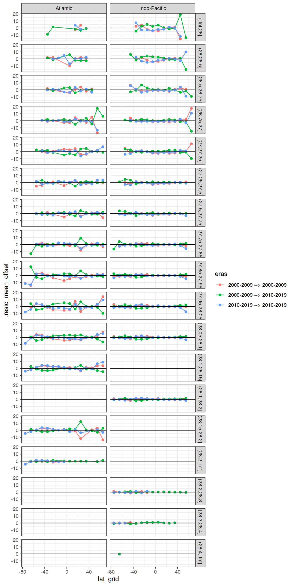
| Version | Author | Date |
|---|---|---|
| 969e631 | jens-daniel-mueller | 2021-05-12 |
| d2a83bc | jens-daniel-mueller | 2021-04-16 |
| c0a47df | jens-daniel-mueller | 2021-04-16 |
| 50290e8 | jens-daniel-mueller | 2021-04-16 |
| a00ec94 | jens-daniel-mueller | 2021-04-16 |
| b6fe355 | jens-daniel-mueller | 2021-04-16 |
| 81b7c6d | jens-daniel-mueller | 2021-04-16 |
| ddec5b7 | jens-daniel-mueller | 2021-04-15 |
| 29edae5 | jens-daniel-mueller | 2021-04-14 |
| 099d566 | jens-daniel-mueller | 2021-04-14 |
| bb44686 | jens-daniel-mueller | 2021-04-14 |
| bf40480 | jens-daniel-mueller | 2021-04-13 |
| 9f31fe3 | jens-daniel-mueller | 2021-04-13 |
| 338dd3c | jens-daniel-mueller | 2021-04-09 |
| a79ca2c | jens-daniel-mueller | 2021-04-09 |
| 594d503 | jens-daniel-mueller | 2021-03-26 |
| 06bfaf7 | jens-daniel-mueller | 2021-03-26 |
| 2eb881a | jens-daniel-mueller | 2021-03-26 |
| 03b6009 | jens-daniel-mueller | 2021-03-23 |
| de6256b | jens-daniel-mueller | 2021-03-23 |
| f155edd | jens-daniel-mueller | 2021-03-23 |
| 380d215 | jens-daniel-mueller | 2021-03-21 |
| 33b385b | jens-daniel-mueller | 2021-03-20 |
| 108d6b2 | jens-daniel-mueller | 2021-03-20 |
| 83a13de | jens-daniel-mueller | 2021-03-20 |
| cf98c6d | jens-daniel-mueller | 2021-03-16 |
| a1d52ff | jens-daniel-mueller | 2021-03-15 |
| 0bade3b | jens-daniel-mueller | 2021-03-15 |
| 27c1f4b | jens-daniel-mueller | 2021-03-14 |
| af75ebf | jens-daniel-mueller | 2021-03-14 |
| 5017709 | jens-daniel-mueller | 2021-03-11 |
| 585b07f | jens-daniel-mueller | 2021-03-11 |
| 85a5ed2 | jens-daniel-mueller | 2021-03-10 |
| 6c0bec6 | jens-daniel-mueller | 2021-03-05 |
| 3c2ec33 | jens-daniel-mueller | 2021-03-05 |
| af70b94 | jens-daniel-mueller | 2021-03-04 |
| fec3558 | jens-daniel-mueller | 2021-02-24 |
8 VIF
GLODAP_glanced %>%
ggplot(aes(as.factor(n),
log10(vif_max),
col=data_source)) +
geom_hline(yintercept = log10(params_local$vif_max)) +
scale_color_brewer(palette = "Set1") +
geom_violin() +
facet_grid(gamma_slab~basin)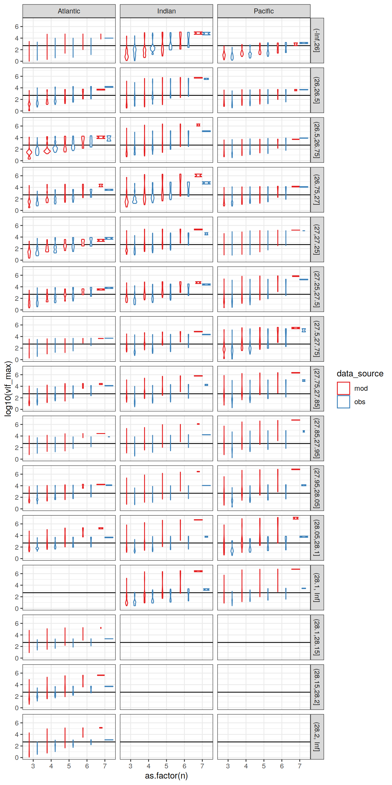
| Version | Author | Date |
|---|---|---|
| 969e631 | jens-daniel-mueller | 2021-05-12 |
| d2a83bc | jens-daniel-mueller | 2021-04-16 |
| c0a47df | jens-daniel-mueller | 2021-04-16 |
| 50290e8 | jens-daniel-mueller | 2021-04-16 |
| b6fe355 | jens-daniel-mueller | 2021-04-16 |
| 81b7c6d | jens-daniel-mueller | 2021-04-16 |
| ddec5b7 | jens-daniel-mueller | 2021-04-15 |
| 29edae5 | jens-daniel-mueller | 2021-04-14 |
| 099d566 | jens-daniel-mueller | 2021-04-14 |
| bb44686 | jens-daniel-mueller | 2021-04-14 |
| bf40480 | jens-daniel-mueller | 2021-04-13 |
| 9f31fe3 | jens-daniel-mueller | 2021-04-13 |
| 338dd3c | jens-daniel-mueller | 2021-04-09 |
| a79ca2c | jens-daniel-mueller | 2021-04-09 |
| 594d503 | jens-daniel-mueller | 2021-03-26 |
| 2eb881a | jens-daniel-mueller | 2021-03-26 |
| 03b6009 | jens-daniel-mueller | 2021-03-23 |
| de6256b | jens-daniel-mueller | 2021-03-23 |
| 380d215 | jens-daniel-mueller | 2021-03-21 |
| 33b385b | jens-daniel-mueller | 2021-03-20 |
| 108d6b2 | jens-daniel-mueller | 2021-03-20 |
| 330dcd0 | jens-daniel-mueller | 2021-03-20 |
GLODAP_glanced_vif %>%
ggplot(aes(Variables,
log10(VIF),
col = data_source)) +
geom_hline(yintercept = log10(params_local$vif_max)) +
geom_violin() +
scale_color_brewer(palette = "Set1") +
facet_grid(gamma_slab~basin) +
coord_flip()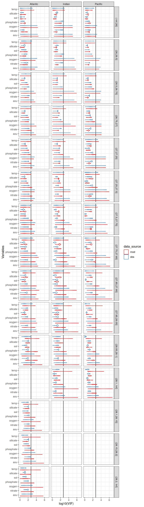
| Version | Author | Date |
|---|---|---|
| 969e631 | jens-daniel-mueller | 2021-05-12 |
| d2a83bc | jens-daniel-mueller | 2021-04-16 |
| c0a47df | jens-daniel-mueller | 2021-04-16 |
| 50290e8 | jens-daniel-mueller | 2021-04-16 |
| b6fe355 | jens-daniel-mueller | 2021-04-16 |
| 81b7c6d | jens-daniel-mueller | 2021-04-16 |
| ddec5b7 | jens-daniel-mueller | 2021-04-15 |
| 29edae5 | jens-daniel-mueller | 2021-04-14 |
| 099d566 | jens-daniel-mueller | 2021-04-14 |
| bb44686 | jens-daniel-mueller | 2021-04-14 |
| bf40480 | jens-daniel-mueller | 2021-04-13 |
| 9f31fe3 | jens-daniel-mueller | 2021-04-13 |
| 338dd3c | jens-daniel-mueller | 2021-04-09 |
| a79ca2c | jens-daniel-mueller | 2021-04-09 |
| d3c3fde | jens-daniel-mueller | 2021-03-26 |
| 594d503 | jens-daniel-mueller | 2021-03-26 |
| 2eb881a | jens-daniel-mueller | 2021-03-26 |
| 03b6009 | jens-daniel-mueller | 2021-03-23 |
| de6256b | jens-daniel-mueller | 2021-03-23 |
| 380d215 | jens-daniel-mueller | 2021-03-21 |
| 33b385b | jens-daniel-mueller | 2021-03-20 |
| 108d6b2 | jens-daniel-mueller | 2021-03-20 |
| 330dcd0 | jens-daniel-mueller | 2021-03-20 |
sessionInfo()R version 4.0.3 (2020-10-10)
Platform: x86_64-pc-linux-gnu (64-bit)
Running under: openSUSE Leap 15.2
Matrix products: default
BLAS: /usr/local/R-4.0.3/lib64/R/lib/libRblas.so
LAPACK: /usr/local/R-4.0.3/lib64/R/lib/libRlapack.so
locale:
[1] LC_CTYPE=en_US.UTF-8 LC_NUMERIC=C
[3] LC_TIME=en_US.UTF-8 LC_COLLATE=en_US.UTF-8
[5] LC_MONETARY=en_US.UTF-8 LC_MESSAGES=en_US.UTF-8
[7] LC_PAPER=en_US.UTF-8 LC_NAME=C
[9] LC_ADDRESS=C LC_TELEPHONE=C
[11] LC_MEASUREMENT=en_US.UTF-8 LC_IDENTIFICATION=C
attached base packages:
[1] stats graphics grDevices utils datasets methods base
other attached packages:
[1] gt_0.2.2 corrr_0.4.3 broom_0.7.5 kableExtra_1.3.1
[5] knitr_1.30 olsrr_0.5.3 GGally_2.0.0 lubridate_1.7.9
[9] metR_0.9.0 scico_1.2.0 patchwork_1.1.1 collapse_1.5.0
[13] forcats_0.5.0 stringr_1.4.0 dplyr_1.0.5 purrr_0.3.4
[17] readr_1.4.0 tidyr_1.1.2 tibble_3.0.4 ggplot2_3.3.3
[21] tidyverse_1.3.0 workflowr_1.6.2
loaded via a namespace (and not attached):
[1] fs_1.5.0 webshot_0.5.2 RColorBrewer_1.1-2
[4] httr_1.4.2 rprojroot_2.0.2 tools_4.0.3
[7] backports_1.1.10 utf8_1.1.4 R6_2.5.0
[10] nortest_1.0-4 DBI_1.1.0 colorspace_1.4-1
[13] withr_2.3.0 gridExtra_2.3 tidyselect_1.1.0
[16] curl_4.3 compiler_4.0.3 git2r_0.27.1
[19] cli_2.1.0 rvest_0.3.6 xml2_1.3.2
[22] sass_0.2.0 labeling_0.4.2 scales_1.1.1
[25] checkmate_2.0.0 goftest_1.2-2 digest_0.6.27
[28] foreign_0.8-80 rmarkdown_2.5 rio_0.5.16
[31] pkgconfig_2.0.3 htmltools_0.5.0 highr_0.8
[34] dbplyr_1.4.4 rlang_0.4.10 readxl_1.3.1
[37] rstudioapi_0.13 farver_2.0.3 generics_0.0.2
[40] jsonlite_1.7.1 zip_2.1.1 car_3.0-10
[43] magrittr_1.5 Matrix_1.2-18 Rcpp_1.0.5
[46] munsell_0.5.0 fansi_0.4.1 abind_1.4-5
[49] lifecycle_1.0.0 stringi_1.5.3 whisker_0.4
[52] yaml_2.2.1 carData_3.0-4 plyr_1.8.6
[55] grid_4.0.3 blob_1.2.1 parallel_4.0.3
[58] promises_1.1.1 crayon_1.3.4 lattice_0.20-41
[61] haven_2.3.1 hms_0.5.3 pillar_1.4.7
[64] reprex_0.3.0 glue_1.4.2 evaluate_0.14
[67] RcppArmadillo_0.10.1.2.0 data.table_1.13.2 modelr_0.1.8
[70] vctrs_0.3.5 httpuv_1.5.4 cellranger_1.1.0
[73] gtable_0.3.0 reshape_0.8.8 assertthat_0.2.1
[76] xfun_0.18 openxlsx_4.2.3 RcppEigen_0.3.3.7.0
[79] later_1.1.0.1 viridisLite_0.3.0 ellipsis_0.3.1
[82] here_0.1